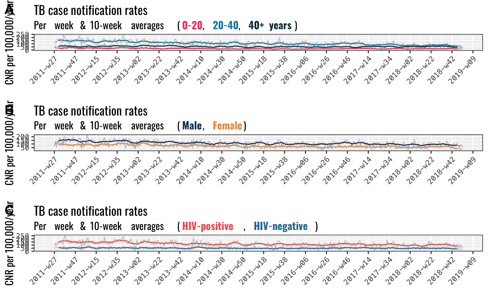
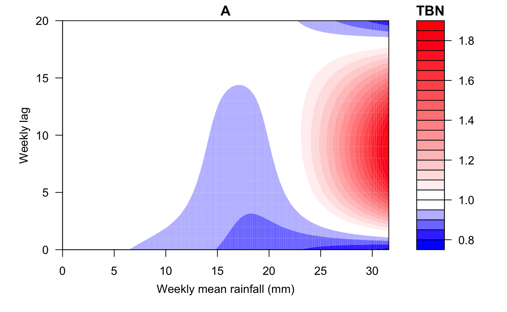

data-and-code
data-and-code.Rmd2. Set-up
Load all required packages for analysis.
library(tidyverse) #for data manipulation library(lubridate) library(tsibble) library(glue) library(mgcv) library(mlwdata) library(zoo) library(ggpubr) library(xts) library(smooth) library(Mcomp) library(fpp2) library(smooth) library(ggseas) library(here) library(ggtext) library(GSODR) library(arsenal) library(patchwork) library(dlnm) library(MuMIn) library(Metrics) library(knitr) #for Blantyre data ( # install.packages("devtools") #devtools::install_github("petermacp/mlwdata"))
3. Import the data
Load the required data.
tbcases <- mlwdata::tb_cases_2011_2018 blantyre <- mlwdata::blantyre_census_by_q #Weather data load(system.file("extdata", "isd_history.rda", package = "GSODR")) #see the available data for Malawi Malawi <- subset(isd_history, COUNTRY_NAME == "MALAWI") #Subset the Malawi data for Chileka Airport station chileka <- Malawi %>% filter(NAME=="CHILEKA INTL") #Now pull the 2017 data for Malawi mweather <- get_GSOD(years = c(2011:2019), station = "676930-99999")
4. Cleaning and recoding
#Here we aggregate the rural and urban populations, and sum across age groups to get overall population at each quarter.
#Then we do linear interpolation to get the weekly estimated population.
a <- blantyre %>%
filter(sex == "total") %>%
filter(year_q>="2011.2") %>%
group_by(year_q) %>%
summarise(population = sum(population)) %>%
mutate(year_temp = str_extract(year_q, "[^.]+")) %>%
mutate(period_temp = case_when(str_detect(year_q, ".1$") ~ "03-31",
str_detect(year_q, ".2$") ~ "06-30",
str_detect(year_q, ".3$") ~ "09-30",
str_detect(year_q, ".4$") ~ "12-31")) %>%
mutate(temp_date = ymd(glue("{year_temp}-{period_temp}"))) %>%
mutate(y_w = yearweek(temp_date))
weeks_for_fill <- seq(from=min(a$y_w), to=max(a$y_w), 1) %>%
tibble(y_w=.)
a <- full_join(a, weeks_for_fill)
a <- a %>%
ungroup() %>%
mutate(y_w = yearweek(y_w)) %>%
arrange(y_w) %>%
mutate(int_pop = round(zoo::na.approx(population))) %>%
dplyr::select(year_q, y_w, int_pop) %>%
fill(year_q)
#Tidy-up the TB case data
b <- tbcases %>%
select(reg_date, year_q, year) %>%
filter(year_q >="2011.3") %>%
mutate(y_w = yearweek(reg_date))
b <- b %>%
group_by(y_w) %>%
count() %>%
ungroup()
b %>% summarise(sum = sum(n))
# A tibble: 1 x 1
sum
<int>
1 159085. Table 1: Characteristics of cases
tab1 <- tbcases %>% filter(year_q >="2011.3") %>% mutate(year2 = factor(lubridate::year(reg_date))) %>% mutate(agegp = factor(agegp)) %>% mutate(month = month(reg_date)) %>% mutate(season = case_when(month >=5 & month<=8 ~ "Cold, dry (May-Aug)", month >8 & month <=11 ~ "Hot, dry (Sept-Nov)", month==12 ~ "Hot, wet (Dec-Apr)", month<=4 ~ "Hot, wet (Dec-Apr)")) table1 <- tableby(year2 ~ season +sex + age + hiv + art + tbtype + tbcat + smr_xpert_any, data=tab1, digits=1L, numeric.stats="meansd") summary(table1)
| 2011 (N=1309) | 2012 (N=2464) | 2013 (N=2347) | 2014 (N=2110) | 2015 (N=1962) | 2016 (N=1957) | 2017 (N=1940) | 2018 (N=1819) | Total (N=15908) | p value | |
|---|---|---|---|---|---|---|---|---|---|---|
| season | < 0.001 | |||||||||
| Cold, dry (May-Aug) | 396 (30.3%) | 864 (35.1%) | 776 (33.1%) | 666 (31.6%) | 645 (32.9%) | 616 (31.5%) | 650 (33.5%) | 677 (37.2%) | 5290 (33.3%) | |
| Hot, dry (Sept-Nov) | 671 (51.3%) | 693 (28.1%) | 564 (24.0%) | 543 (25.7%) | 477 (24.3%) | 524 (26.8%) | 493 (25.4%) | 439 (24.1%) | 4404 (27.7%) | |
| Hot, wet (Dec-Apr) | 242 (18.5%) | 907 (36.8%) | 1007 (42.9%) | 901 (42.7%) | 840 (42.8%) | 817 (41.7%) | 797 (41.1%) | 703 (38.6%) | 6214 (39.1%) | |
| sex | 0.025 | |||||||||
| Female | 504 (38.5%) | 1008 (40.9%) | 953 (40.6%) | 844 (40.0%) | 732 (37.3%) | 721 (36.8%) | 728 (37.5%) | 691 (38.0%) | 6181 (38.9%) | |
| Male | 805 (61.5%) | 1456 (59.1%) | 1394 (59.4%) | 1266 (60.0%) | 1230 (62.7%) | 1236 (63.2%) | 1212 (62.5%) | 1128 (62.0%) | 9727 (61.1%) | |
| age | < 0.001 | |||||||||
| Mean (SD) | 31.8 (14.3) | 33.1 (14.9) | 34.1 (14.5) | 34.6 (13.8) | 34.6 (13.4) | 34.5 (13.7) | 34.4 (14.6) | 35.7 (15.2) | 34.1 (14.4) | |
| hiv | < 0.001 | |||||||||
| N-Miss | 193 | 234 | 291 | 159 | 115 | 50 | 31 | 7 | 1080 | |
| a) HIV-negative | 300 (26.9%) | 599 (26.9%) | 573 (27.9%) | 599 (30.7%) | 532 (28.8%) | 604 (31.7%) | 612 (32.1%) | 588 (32.5%) | 4407 (29.7%) | |
| b) HIV-positive | 816 (73.1%) | 1631 (73.1%) | 1483 (72.1%) | 1352 (69.3%) | 1315 (71.2%) | 1303 (68.3%) | 1297 (67.9%) | 1224 (67.5%) | 10421 (70.3%) | |
| art | < 0.001 | |||||||||
| a) Not taking ART | 894 (68.3%) | 1445 (58.6%) | 1200 (51.1%) | 1020 (48.3%) | 862 (43.9%) | 792 (40.5%) | 735 (37.9%) | 635 (34.9%) | 7583 (47.7%) | |
| b) Taking ART | 415 (31.7%) | 1019 (41.4%) | 1147 (48.9%) | 1090 (51.7%) | 1100 (56.1%) | 1165 (59.5%) | 1205 (62.1%) | 1184 (65.1%) | 8325 (52.3%) | |
| tbtype | < 0.001 | |||||||||
| N-Miss | 0 | 0 | 0 | 0 | 0 | 0 | 0 | 3 | 3 | |
| a) Pulmonary TB | 921 (70.4%) | 1721 (69.8%) | 1602 (68.3%) | 1223 (58.0%) | 1244 (63.4%) | 1200 (61.3%) | 1201 (61.9%) | 913 (50.3%) | 10025 (63.0%) | |
| b) Extrapulmonary TB | 388 (29.6%) | 743 (30.2%) | 745 (31.7%) | 887 (42.0%) | 718 (36.6%) | 757 (38.7%) | 739 (38.1%) | 903 (49.7%) | 5880 (37.0%) | |
| tbcat | < 0.001 | |||||||||
| N-Miss | 0 | 0 | 0 | 0 | 0 | 0 | 0 | 4 | 4 | |
| a) New TB case | 1190 (90.9%) | 2214 (89.9%) | 2049 (87.3%) | 1832 (86.8%) | 1701 (86.7%) | 1665 (85.1%) | 1675 (86.3%) | 1598 (88.0%) | 13924 (87.6%) | |
| b) Relapse TB case | 87 (6.6%) | 180 (7.3%) | 165 (7.0%) | 161 (7.6%) | 144 (7.3%) | 189 (9.7%) | 245 (12.6%) | 200 (11.0%) | 1371 (8.6%) | |
| c) Retreatment after default | 1 (0.1%) | 7 (0.3%) | 7 (0.3%) | 10 (0.5%) | 8 (0.4%) | 6 (0.3%) | 6 (0.3%) | 9 (0.5%) | 54 (0.3%) | |
| d) Retreatment after failure | 2 (0.2%) | 1 (0.0%) | 6 (0.3%) | 6 (0.3%) | 4 (0.2%) | 7 (0.4%) | 5 (0.3%) | 5 (0.3%) | 36 (0.2%) | |
| e) Other | 29 (2.2%) | 62 (2.5%) | 120 (5.1%) | 101 (4.8%) | 105 (5.4%) | 90 (4.6%) | 9 (0.5%) | 3 (0.2%) | 519 (3.3%) | |
| smr_xpert_any | < 0.001 | |||||||||
| N-Miss | 305 | 429 | 464 | 228 | 282 | 412 | 418 | 529 | 3067 | |
| a) Smr/Xpert-negative | 449 (44.7%) | 938 (46.1%) | 920 (48.9%) | 941 (50.0%) | 759 (45.2%) | 558 (36.1%) | 621 (40.8%) | 603 (46.7%) | 5789 (45.1%) | |
| b) Smr/Xpert-positive | 555 (55.3%) | 1097 (53.9%) | 963 (51.1%) | 941 (50.0%) | 921 (54.8%) | 987 (63.9%) | 901 (59.2%) | 687 (53.3%) | 7052 (54.9%) |
6. TB Case notification rates
Calculate and summarise TB case notification rates
#bind cases to week c <- left_join(a, b, by="y_w") c <- c %>% mutate(pop_52 = ceiling(int_pop/52.25)) %>% mutate(i = (n/pop_52)*100000) %>% rowwise %>% mutate(xx = list(broom::tidy(binom.test(n, pop_52, conf.level=0.95)))) %>% tidyr::unnest(xx) %>% ungroup() %>% mutate_at(vars(estimate, conf.low, conf.high), funs(.*100000)) %>% select(-estimate, -statistic, - p.value, -method, -alternative, -parameter) #Drop the first and last observations - these look odd d <- c %>% filter(y_w !=ymd("2011-06-27")) %>% filter(y_w !=ymd("2018-12-31")) d <- d %>% arrange(y_w) %>% mutate(w2 = row_number()) #plot case notification rate CNR <- d %>% ggplot() + geom_ribbon(aes(x=y_w, ymin=conf.low, ymax=conf.high), alpha=0.3) + geom_line(aes(x=y_w, y=i)) + labs(title = "TB case notification rate", subtitle = "Blantyre, Malawi: per week", y="CNR per 100,000/year", x="Week") + theme(panel.border = element_rect(colour = "black", fill=NA, size=0.5)) + theme(axis.text = element_text(family = "Menlo", size=8))+ theme(axis.text.x = element_text(angle = 45, hjust = 1))+ theme(title = element_text(family = "Oswald", size=11)) + theme(axis.title = element_text(family = "Oswald", size = 11, hjust = 1)) CNR
TB case notification rates wtih moving averages
#calculate moving average with different extents of smoothing CNRma <- d %>% select(y_w, srate = i) %>% mutate(srate_ma5 = rollmean(srate, k = 5, fill = NA), srate_ma10 = rollmean(srate, k = 10, fill = NA), srate_ma25 = rollmean(srate, k = 25, fill = NA), srate_ma50 = rollmean(srate, k = 50, fill = NA), srate_ma100 = rollmean(srate, k = 100, fill = NA)) #plot 10 week moving average CNR10wma <- CNRma %>% gather(metric, value, srate_ma10) %>% ggplot() + geom_line(data = d, aes(x=as_date(y_w), y=i), alpha=0.2) + geom_line(aes(x= as_date(y_w), value)) + labs(title = "Overall TB case notification rate", subtitle = "Weekly & 10-week average", y="CNR per 100,000/year", x="")+ ylim(0,300) + theme(panel.border = element_rect(colour = "black", fill=NA, size=0.5)) + scale_x_date(date_breaks = "20 weeks", date_labels = "%Y-w%W") + theme(panel.border = element_rect(colour = "black", fill=NA, size=0.5)) + theme(axis.text = element_text(family = "Menlo", size=8))+ theme(axis.text.x = element_text(angle = 45, hjust = 1))+ theme(title = element_text(family = "Oswald", size=11)) + theme(axis.title = element_text(family = "Oswald", size = 11)) CNR10wma
# make figure of CNR and moving average ggarrange(CNR, CNR10wma, labels = c("A", "B"), ncol = 1, nrow = 2)
7. TB case notification rates stratified by age, sex, HIV status
First by sex
##filter sex
bmale <- filter(tbcases, sex == "Male") %>%
select(reg_date, year_q, year) %>%
filter(year_q >="2011.3") %>%
mutate(y_w = yearweek(reg_date))
bmale <- bmale %>%
group_by(y_w) %>%
count() %>%
ungroup()
bmale %>% summarise(sum = sum(n))
# A tibble: 1 x 1
sum
<int>
1 9727
cmale <- left_join(a, bmale, by="y_w")
cmale <- cmale %>%
mutate(pop_52 = ceiling(int_pop/52.25)) %>%
mutate(i = (n/pop_52)*100000) %>%
rowwise %>%
mutate(xx = list(broom::tidy(binom.test(n, pop_52, conf.level=0.95)))) %>%
tidyr::unnest(xx) %>%
ungroup() %>%
mutate_at(vars(estimate, conf.low, conf.high), funs(.*100000)) %>%
select(-estimate, -statistic, - p.value, -method, -alternative, -parameter)
dmale <- cmale %>%
filter(y_w !=ymd("2011-06-27")) %>%
filter(y_w !=ymd("2018-12-31"))
dmale <- dmale %>%
arrange(y_w) %>%
mutate(w2 = row_number())
dmalemovingaverage <- dmale %>%
select(y_w, sratemale = i) %>%
mutate(srate_ma5male = rollmean(sratemale, k = 5, fill = NA),
srate_ma10male = rollmean(sratemale, k = 10, fill = NA),
srate_ma25male = rollmean(sratemale, k = 25, fill = NA),
srate_ma50male = rollmean(sratemale, k = 50, fill = NA),
srate_ma100male = rollmean(sratemale, k = 100, fill = NA))
bfemale <- filter(tbcases, sex == "Female") %>%
select(reg_date, year_q, year) %>%
filter(year_q >="2011.3") %>%
mutate(y_w = yearweek(reg_date))
bfemale <- bfemale %>%
group_by(y_w) %>%
count() %>%
ungroup()
bfemale %>% summarise(sum = sum(n))
# A tibble: 1 x 1
sum
<int>
1 6181
cfemale <- left_join(a, bfemale, by="y_w")
cfemale <- cfemale %>%
mutate(pop_52 = ceiling(int_pop/52.25)) %>%
mutate(i = (n/pop_52)*100000) %>%
rowwise %>%
mutate(xx = list(broom::tidy(binom.test(n, pop_52, conf.level=0.95)))) %>%
tidyr::unnest(xx) %>%
ungroup() %>%
mutate_at(vars(estimate, conf.low, conf.high), funs(.*100000)) %>%
select(-estimate, -statistic, - p.value, -method, -alternative, -parameter)
dfemale <- cfemale %>%
filter(y_w !=ymd("2011-06-27")) %>%
filter(y_w !=ymd("2018-12-31"))
dfemale <- dfemale %>%
arrange(y_w) %>%
mutate(w2 = row_number())
dfemalemovingaverage <- dfemale %>%
select(y_w, sratefemale = i) %>%
mutate(srate_ma5female = rollmean(sratefemale, k = 5, fill = NA),
srate_ma10female = rollmean(sratefemale, k = 10, fill = NA),
srate_ma25female = rollmean(sratefemale, k = 25, fill = NA),
srate_ma50female = rollmean(sratefemale, k = 50, fill = NA),
srate_ma100female = rollmean(sratefemale, k = 100, fill = NA))
mergesex <- merge(dmalemovingaverage,dfemalemovingaverage, by="y_w")
graphbysex <- mergesex %>%
ggplot() +
geom_line(aes(x=as_date(y_w), y=sratemale), alpha=0.2) +
geom_line(aes(x=as_date(y_w), y=sratefemale), alpha=0.2) +
geom_line(aes(x=as_date(y_w), y=srate_ma10male), colour="#0d3b66") +
geom_line(aes(x=as_date(y_w), y=srate_ma10female), colour="#ee964b") +
labs(title = "TB case notification rates",
subtitle = "Per week & 10-week averages (<b style='color:#0d3b66'>Male</b>, <b style='color:#ee964b'>Female</b>)",
y="CNR per 100,000/year",
x="") +
theme(panel.border = element_rect(colour = "black", fill=NA, size=0.5)) +
theme(plot.subtitle = element_markdown(lineheight = 1)) +
scale_x_date(date_breaks = "20 weeks",
date_labels = "%Y-w%W") +
theme(panel.border = element_rect(colour = "black", fill=NA, size=0.5)) +
theme(axis.text = element_text(family = "Menlo", size=8))+
theme(axis.text.x = element_text(angle = 45, hjust = 1))+
theme(title = element_text(family = "Oswald", size=11)) +
theme(axis.title = element_text(family = "Oswald", size = 11))
graphbysexNow by HIV status
bHIVpos <- filter(tbcases, hiv == "b) HIV-positive") %>%
select(reg_date, year_q, year) %>%
filter(year_q >="2011.3") %>%
mutate(y_w = yearweek(reg_date))
bHIVpos <- bHIVpos %>%
group_by(y_w) %>%
count() %>%
ungroup()
bHIVpos %>% summarise(sum = sum(n))
# A tibble: 1 x 1
sum
<int>
1 10421
cHIVpos <- left_join(a, bHIVpos, by="y_w")
cHIVpos <- cHIVpos %>%
mutate(pop_52 = ceiling(int_pop/52.25)) %>%
mutate(i = (n/pop_52)*100000) %>%
rowwise %>%
mutate(xx = list(broom::tidy(binom.test(n, pop_52, conf.level=0.95)))) %>%
tidyr::unnest(xx) %>%
ungroup() %>%
mutate_at(vars(estimate, conf.low, conf.high), funs(.*100000)) %>%
select(-estimate, -statistic, - p.value, -method, -alternative, -parameter)
dHIVpos <- cHIVpos %>%
filter(y_w !=ymd("2011-06-27")) %>%
filter(y_w !=ymd("2018-12-31"))
dHIVpos <- dHIVpos %>%
arrange(y_w) %>%
mutate(w2 = row_number())
dHIVposmovingaverage <- dHIVpos %>%
select(y_w, srateHIVpos = i) %>%
mutate(srate_ma5HIVpos = rollmean(srateHIVpos, k = 5, fill = NA),
srate_ma10HIVpos = rollmean(srateHIVpos, k = 10, fill = NA),
srate_ma25HIVpos = rollmean(srateHIVpos, k = 25, fill = NA),
srate_ma50HIVpos = rollmean(srateHIVpos, k = 50, fill = NA),
srate_ma100HIVpos = rollmean(srateHIVpos, k = 100, fill = NA))
bHIVneg <- filter(tbcases, hiv == "a) HIV-negative") %>%
select(reg_date, year_q, year) %>%
filter(year_q >="2011.3") %>%
mutate(y_w = yearweek(reg_date))
bHIVneg <- bHIVneg %>%
group_by(y_w) %>%
count() %>%
ungroup()
bHIVneg %>% summarise(sum = sum(n))
# A tibble: 1 x 1
sum
<int>
1 4407
cHIVneg <- left_join(a, bHIVneg, by="y_w")
cHIVneg <- cHIVneg %>%
mutate(pop_52 = ceiling(int_pop/52.25)) %>%
mutate(i = (n/pop_52)*100000) %>%
rowwise %>%
mutate(xx = list(broom::tidy(binom.test(n, pop_52, conf.level=0.95)))) %>%
tidyr::unnest(xx) %>%
ungroup() %>%
mutate_at(vars(estimate, conf.low, conf.high), funs(.*100000)) %>%
select(-estimate, -statistic, - p.value, -method, -alternative, -parameter)
dHIVneg <- cHIVneg %>%
filter(y_w !=ymd("2011-06-27")) %>%
filter(y_w !=ymd("2018-12-31"))
dHIVneg <- dHIVneg %>%
arrange(y_w) %>%
mutate(w2 = row_number())
dHIVnegmovingaverage <- dHIVneg %>%
select(y_w, srateHIVneg = i) %>%
mutate(srate_ma5HIVneg = rollmean(srateHIVneg, k = 5, fill = NA),
srate_ma10HIVneg = rollmean(srateHIVneg, k = 10, fill = NA),
srate_ma25HIVneg = rollmean(srateHIVneg, k = 25, fill = NA),
srate_ma50HIVneg = rollmean(srateHIVneg, k = 50, fill = NA),
srate_ma100HIVneg = rollmean(srateHIVneg, k = 100, fill = NA))
mergeHIV <- merge(dHIVposmovingaverage,dHIVnegmovingaverage, by="y_w")
graphbyHIV <- mergeHIV %>%
ggplot() +
geom_line(aes(x=as_date(y_w), y=srateHIVneg), alpha=0.2) +
geom_line(aes(x=as_date(y_w), y=srateHIVpos), alpha=0.2) +
geom_line(aes(x=as_date(y_w), y=srate_ma10HIVneg), colour="#247ba0") +
geom_line(aes(x=as_date(y_w), y=srate_ma10HIVpos), colour="#f25f5c") +
labs(title = "TB case notification rates",
subtitle = "Per week & 10-week averages (<b style='color:#f25f5c'>HIV-positive</b>, <b style='color:#247ba0'>HIV-negative</b>)",
y="CNR per 100,000/year",
x="") +
theme(panel.border = element_rect(colour = "black", fill=NA, size=0.5))+
theme(
plot.subtitle = element_markdown(lineheight = 1)) +
scale_x_date(date_breaks = "20 weeks",
date_labels = "%Y-w%W") +
theme(panel.border = element_rect(colour = "black", fill=NA, size=0.5)) +
theme(axis.text = element_text(family = "Menlo", size=8))+
theme(axis.text.x = element_text(angle = 45, hjust = 1))+
theme(title = element_text(family = "Oswald", size=11)) +
theme(axis.title = element_text(family = "Oswald", size = 11))
graphbyHIVNow by age group
bunder20 <- filter(tbcases, age < 20) %>%
select(reg_date, year_q, year) %>%
filter(year_q >="2011.3") %>%
mutate(y_w = yearweek(reg_date))
bunder20 <- bunder20 %>%
group_by(y_w) %>%
count() %>%
ungroup()
bunder20 %>% summarise(sum = sum(n))
# A tibble: 1 x 1
sum
<int>
1 1857
cunder20 <- left_join(a, bunder20, by="y_w")
cunder20[is.na(cunder20)] <- 0
cunder20 <- cunder20 %>%
mutate(pop_52 = ceiling(int_pop/52.25)) %>%
mutate(i = (n/pop_52)*100000) %>%
rowwise %>%
mutate(xx = list(broom::tidy(binom.test(n, pop_52, conf.level=0.95)))) %>%
tidyr::unnest(xx) %>%
ungroup() %>%
mutate_at(vars(estimate, conf.low, conf.high), funs(.*100000)) %>%
select(-estimate, -statistic, - p.value, -method, -alternative, -parameter)
dunder20 <- cunder20 %>%
filter(y_w !=ymd("2011-06-27")) %>%
filter(y_w !=ymd("2018-12-31"))
dunder20 <- dunder20 %>%
arrange(y_w) %>%
mutate(w2 = row_number())
dunder20movingaverage <- dunder20 %>%
select(y_w, srateunder20 = i) %>%
mutate(srate_ma5under20 = rollmean(srateunder20, k = 5, fill = NA),
srate_ma10under20 = rollmean(srateunder20, k = 10, fill = NA),
srate_ma25under20 = rollmean(srateunder20, k = 25, fill = NA),
srate_ma50under20 = rollmean(srateunder20, k = 50, fill = NA),
srate_ma100under20 = rollmean(srateunder20, k = 100, fill = NA))
bbet20_40 <- filter(tbcases, age >= 20 & age <40) %>%
select(reg_date, year_q, year) %>%
filter(year_q >="2011.3") %>%
mutate(y_w = yearweek(reg_date))
bbet20_40 <- bbet20_40 %>%
group_by(y_w) %>%
count() %>%
ungroup()
bbet20_40 %>% summarise(sum = sum(n))
# A tibble: 1 x 1
sum
<int>
1 9341
cbet20_40 <- left_join(a, bbet20_40, by="y_w")
cbet20_40 <- cbet20_40 %>%
mutate(pop_52 = ceiling(int_pop/52.25)) %>%
mutate(i = (n/pop_52)*100000) %>%
rowwise %>%
mutate(xx = list(broom::tidy(binom.test(n, pop_52, conf.level=0.95)))) %>%
tidyr::unnest(xx) %>%
ungroup() %>%
mutate_at(vars(estimate, conf.low, conf.high), funs(.*100000)) %>%
select(-estimate, -statistic, - p.value, -method, -alternative, -parameter)
dbet20_40 <- cbet20_40 %>%
filter(y_w !=ymd("2011-06-27")) %>%
filter(y_w !=ymd("2018-12-31"))
dbet20_40 <- dbet20_40 %>%
arrange(y_w) %>%
mutate(w2 = row_number())
dbet20_40movingaverage <- dbet20_40 %>%
select(y_w, sratebet20_40 = i) %>%
mutate(srate_ma5bet20_40 = rollmean(sratebet20_40, k = 5, fill = NA),
srate_ma10bet20_40 = rollmean(sratebet20_40, k = 10, fill = NA),
srate_ma25bet20_40 = rollmean(sratebet20_40, k = 25, fill = NA),
srate_ma50bet20_40 = rollmean(sratebet20_40, k = 50, fill = NA),
srate_ma100bet20_40 = rollmean(sratebet20_40, k = 100, fill = NA))
bover40 <- filter(tbcases, age >= 40) %>%
select(reg_date, year_q, year) %>%
filter(year_q >="2011.3") %>%
mutate(y_w = yearweek(reg_date))
bover40 <- bover40 %>%
group_by(y_w) %>%
count() %>%
ungroup()
bover40 %>% summarise(sum = sum(n))
# A tibble: 1 x 1
sum
<int>
1 4710
cover40 <- left_join(a, bover40, by="y_w")
cover40[is.na(cover40)] <- 0
cover40 <- cover40 %>%
mutate(pop_52 = ceiling(int_pop/52.25)) %>%
mutate(i = (n/pop_52)*100000) %>%
rowwise %>%
mutate(xx = list(broom::tidy(binom.test(n, pop_52, conf.level=0.95)))) %>%
tidyr::unnest(xx) %>%
ungroup() %>%
mutate_at(vars(estimate, conf.low, conf.high), funs(.*100000)) %>%
select(-estimate, -statistic, - p.value, -method, -alternative, -parameter)
dover40 <- cover40 %>%
filter(y_w !=ymd("2011-06-27")) %>%
filter(y_w !=ymd("2018-12-31"))
dover40 <- dover40 %>%
arrange(y_w) %>%
mutate(w2 = row_number())
dover40movingaverage <- dover40 %>%
select(y_w, srateover40 = i) %>%
mutate(srate_ma5over40 = rollmean(srateover40, k = 5, fill = NA),
srate_ma10over40 = rollmean(srateover40, k = 10, fill = NA),
srate_ma25over40 = rollmean(srateover40, k = 25, fill = NA),
srate_ma50over40 = rollmean(srateover40, k = 50, fill = NA),
srate_ma100over40 = rollmean(srateover40, k = 100, fill = NA))
mergeage <- merge(dunder20movingaverage,dbet20_40movingaverage, by="y_w")
mergeage <- merge(mergeage, dover40movingaverage, by="y_w")
graphbyage <- mergeage %>%
ggplot() +
geom_line(aes(x=as_date(y_w), y=srateunder20), alpha=0.2) +
geom_line(aes(x=as_date(y_w), y=sratebet20_40), alpha=0.2) +
geom_line(aes(x=as_date(y_w), y=srateover40), alpha=0.2) +
geom_line(aes(x=as_date(y_w), y=srate_ma10under20), colour="#ef476f") +
geom_line(aes(x=as_date(y_w), y=srate_ma10bet20_40), colour="#118ab2") +
geom_line(aes(x=as_date(y_w), y=srate_ma10over40), colour="#073b4c") +
labs(title = "TB case notification rates",
subtitle = "Per week & 10-week averages (<b style='color:#ef476f'>0-20</b>, <b style='color:#118ab2'>20-40</b>, <b style='color:#073b4c'>40+ years</b>)",
y="CNR per 100,000/year",
x="") +
theme(panel.border = element_rect(colour = "black", fill=NA, size=0.5))+
theme(
plot.subtitle = element_markdown(lineheight = 1)) +
scale_x_date(date_breaks = "20 weeks",
date_labels = "%Y-w%W") +
theme(panel.border = element_rect(colour = "black", fill=NA, size=0.5)) +
theme(axis.text = element_text(family = "Menlo", size=8))+
theme(axis.text.x = element_text(angle = 45, hjust = 1))+
theme(title = element_text(family = "Oswald", size=11)) +
theme(axis.title = element_text(family = "Oswald", size = 11))
graphbyage8. Figure 1: Combine graphs together

ggsave(here("figures/figure1.png"), dpi=600, width=9, height=10)
9. Figure 2: weather data
First temperature
df2 <- mweather %>% mutate(reg_date = ymd(YEARMODA)) %>% mutate(dow = wday(reg_date, label=TRUE)) %>% mutate(dom = mday(reg_date)) %>% mutate(doy = yday(reg_date)) %>% mutate(month = month(reg_date, label=TRUE)) %>% mutate(year = year(reg_date)) # arrange by date then remove rows for first 3 months of 2011 where no equivalent data for cases df2 <- df2[-c(1:79),] # plot daily temperature ggplot(data = df2) + geom_line(mapping = aes(x = reg_date, y = TEMP))
#calculate moving average temp with different levels of variability df2movingavetemp <- df2 %>% select(reg_date, sratetemp = TEMP) %>% mutate(srate_ma5temp = rollmean(sratetemp, k = 5, fill = NA), srate_ma10temp = rollmean(sratetemp, k = 10, fill = NA), srate_ma25temp = rollmean(sratetemp, k = 25, fill = NA), srate_ma70temp = rollmean(sratetemp, k = 70, fill = NA), srate_ma100temp = rollmean(sratetemp, k = 100, fill = NA)) #plot temp moving average tempma <- df2movingavetemp %>% filter(reg_date >= ymd("2011-07-02")) %>% filter(reg_date <= ymd("2018-12-31")) %>% gather(metric, value, srate_ma70temp) %>% ggplot(aes(reg_date, value, color = metric)) + geom_line()+ labs(title = "Temperature", subtitle = "10-week average", y="Temperature (Celsius)", x="Epidemiological week") + theme(panel.border = element_rect(colour = "black", fill=NA, size=0.5),legend.position = "none") + scale_color_manual(values=c("#264653")) + scale_x_date(date_breaks = "20 weeks", date_labels = "%Y-w%W") + theme(panel.border = element_rect(colour = "black", fill=NA, size=0.5)) + theme(axis.text = element_text(family = "Menlo", size=8))+ theme(axis.text.x = element_text(angle = 45, hjust = 1))+ theme(title = element_text(family = "Oswald", size=11)) + theme(axis.title = element_text(family = "Oswald", size = 11, vjust=-2)) tempma
Precipitation
prcpma <- df2 %>% filter(reg_date >= ymd("2011-07-02")) %>% filter(reg_date <= ymd("2018-12-31")) %>% ggplot() + geom_line(mapping = aes(x = reg_date, y = PRCP), colour="#2a9d8f")+ labs(title = "Rainfall", subtitle = "Daily rainfall", y="Precipitation (mm)", x="Epidemiological week") + theme(panel.border = element_rect(colour = "black", fill=NA, size=0.5),legend.position = "none") + scale_x_date(date_breaks = "20 weeks", date_labels = "%Y-w%W") + theme(panel.border = element_rect(colour = "black", fill=NA, size=0.5)) + theme(axis.text = element_text(family = "Menlo", size=8))+ theme(axis.text.x = element_text(angle = 45, hjust = 1))+ theme(title = element_text(family = "Oswald", size=11)) + theme(axis.title = element_text(family = "Oswald", size = 11, vjust=-2)) prcpma
#calculate moving average rain with different levels of variability df2movingavePRCP <- df2 %>% select(reg_date, srateprcp = PRCP) %>% mutate(srate_ma7prcp = rollmean(srateprcp, k = 7, fill = NA), srate_ma10prcp = rollmean(srateprcp, k = 10, fill = NA), srate_ma25prcp = rollmean(srateprcp, k = 25, fill = NA), srate_ma70prcp = rollmean(srateprcp, k = 70, fill = NA), srate_ma100prcp = rollmean(srateprcp, k = 100, fill = NA)) NAprcp <- df2movingavePRCP %>% gather(metric, value, srate_ma7prcp) %>% ggplot(aes(reg_date, value, color = metric)) + geom_line()+ labs(title = "Precipitation", y="Precipitation", x="Epidemiological weeks") + theme(panel.border = element_rect(colour = "black", fill=NA, size=0.5),legend.position = "none") + scale_color_manual(values=c("#f4a261")) + scale_x_date(date_breaks = "20 weeks", date_labels = "%Y-w%W") + theme(axis.text.x = element_text(angle = 45, hjust = 1))+ theme(plot.title = element_text(size=12)) NAprcp
Wind speed
df2movingaveWDSP <- df2 %>% select(reg_date, sratewdsp = WDSP) %>% mutate(srate_ma5wdsp = rollmean(sratewdsp, k = 5, fill = NA), srate_ma10wdsp = rollmean(sratewdsp, k = 10, fill = NA), srate_ma25wdsp = rollmean(sratewdsp, k = 25, fill = NA), srate_ma70wdsp = rollmean(sratewdsp, k = 70, fill = NA), srate_ma100wdsp = rollmean(sratewdsp, k = 100, fill = NA)) #plot count and wind moving average wdspma <- df2movingaveWDSP %>% gather(metric, value, srate_ma70wdsp) %>% ggplot(aes(reg_date, value, color = metric)) + geom_line()+ labs(title = "Wind Speed", subtitle = "10 week moving average", y="Wind speed (m/s)", x="Epidemiological week") + theme(panel.border = element_rect(colour = "black", fill=NA, size=0.5), legend.position = "none") + scale_color_manual(values=c("#f4a261")) + scale_x_date(date_breaks = "20 weeks", date_labels = "%Y-w%W") + theme(axis.text.x = element_text(angle = 45, hjust = 1))+ theme(plot.title = element_text(size=12)) wdspma
Dew point/humidity
ggplot(data = df2) + geom_line(mapping = aes(x = reg_date, y = DEWP))
#calculate moving average humidity with different levels of variability df2movingaveDEWP <- df2 %>% select(reg_date, sratedewp = WDSP) %>% mutate(srate_ma5dewp = rollmean(sratedewp, k = 5, fill = NA), srate_ma10dewp = rollmean(sratedewp, k = 10, fill = NA), srate_ma25dewp = rollmean(sratedewp, k = 25, fill = NA), srate_ma70dewp = rollmean(sratedewp, k = 70, fill = NA), srate_ma100dewp = rollmean(sratedewp, k = 100, fill = NA)) #plot count and humidity dewpma <- df2movingaveDEWP %>% gather(metric, value, srate_ma70dewp) %>% ggplot(aes(reg_date, value, color = metric)) + geom_line()+ labs(title = "Humidity", subtitle = "Blantyre, Malawi: 10 week moving average", y="Dew point (Celsius)", x="Epidemiological week") + theme(panel.border = element_rect(colour = "black", fill=NA, size=0.5), legend.position = "none") + scale_color_manual(values=c("#e63946")) + scale_x_date(date_breaks = "20 weeks", date_labels = "%Y-w%W") + theme(axis.text.x = element_text(angle = 45, hjust = 1))+ theme(plot.title = element_text(size=12)) dewpma
10. Figure 3: Combine weather plots
ggsave(here("figures/figure2.png"), dpi=600, width=14, height=8)
Try an alternative plot, with TB CNRs and weather in one plot
patchwork <- (CNR10wma + graphbysex) / (graphbyHIV + graphbyage) / (tempma + prcpma) patchwork + plot_annotation(tag_levels = 'A')

ggsave(here("figures/figure2_alternative.png"), dpi=600, width=9, height=10)
11. Regression analysis
First load the cleaned data
set.seed(1988) load(here("data/tb.dlnm.RData")) d_q$wk <- epiweek(ymd(d_q$y_w)) d_q <- subset(d_q,select=c(y_w,wk,year,n,prcp,temp))
quasiPoisson variant from poisson likelikehood for QAIC estimation
tb.quasipois <- function(...){ res <- quasipoisson(...) res$aic <- poisson(...)$aic res } #temp table to hold QAIC values QAICtable <- data.frame(model.no=rep(NA,1),lag.df=rep(NA,1),r.df=rep(NA,1),t.df=rep(NA,1), QAIC.r=rep(NA,1),QAIC.t=rep(NA,1),QAIC.rt=rep(NA,1))
loop through each model (with unique degrees of freedom for lag & each weather covariate)
n=1 for(k in 3:5){ for(j in 3:5){ for(i in 3:5){ #set degrees of freedom (DoF) for natural spline via knots lagk <- logknots(5, fun="ns", df=i) vark.r=equalknots(d_q$prcp, fun="ns", df=j) vark.t=equalknots(d_q$temp, fun="ns", df=k) #construst cross basis (cb) functions and set plaausible DoF for natural spline via knots cb.rain <- crossbasis(d_q$prcp, lag=20, argvar=list(fun="ns", knots=vark.r), arglag=list(knots=lagk)) cb.temp <- crossbasis(d_q$temp, lag=20, argvar=list(fun="ns", knots=vark.t), arglag=list(knots=lagk)) #construct plausible generalised linear models to fit to the data model.r <- glm(d_q$n ~ cb.rain + wk + year, family=tb.quasipois(), d_q) model.t <- glm(d_q$n ~ cb.temp + wk + year, family=tb.quasipois(), d_q) model.rt <- glm(d_q$n ~ cb.rain + wk + cb.temp + year, family=tb.quasipois(), d_q) #output the QAIC values to internal table QAICtable[n,] <- c(n,i,j,k, QAIC(model.r, chat=summary(model.r)$dispersion), QAIC(model.t, chat=summary(model.t)$dispersion), QAIC(model.rt, chat=summary(model.rt)$dispersion)) n=n+1 } } }
Predict the effects of weather on TB notifications models for rain-lag and temp-lag seperately are most optimal for generating minimum QAIC score
reconstruct cross-basis functions for rainfall and temperature given the optimal DoF
lagk=logknots(20, fun="ns", df=3) vark=equalknots(d_q$prcp, fun="ns", df=3) cb.rain <- crossbasis(d_q$prcp, lag=20, argvar=list(knots=vark), arglag=list(knots=lagk)) lagk=logknots(20, fun="ns", df=3) vark=equalknots(d_q$temp, fun="ns", df=3) cb.temp <- crossbasis(d_q$temp, lag=20, argvar=list(knots=vark), arglag=list(knots=lagk)) #fit two models for rainfall and temperature seperately in generalised linear framework model.r <- glm(n ~ cb.rain + wk + year, family=quasipoisson(), na.action=na.exclude, d_q) model.t <- glm(n ~ cb.temp + wk + year, family=quasipoisson(), na.action=na.exclude, d_q) #validate rainfall model by minimising high partial/auto-correlation (outside blue dotted lines) pacf(residuals(model.r,type="deviance"),na.action=na.omit,main="Partial autocorrelation",xlim=c(0,20))
model.r <- update(model.r,.~.+lag(residuals(model.r,type="deviance"),1)) model.r <- update(model.r,.~.+lag(residuals(model.r,type="deviance"),2)) #validate temperature model by minimising high partial/auto-correlation (outside blue dotted lines) pacf(residuals(model.t,type="deviance"),na.action=na.omit,main="Partial autocorrelation",xlim=c(0,20))
model.t <- update(model.t,.~.+lag(residuals(model.t,type="deviance"),2)) model.t <- update(model.t,.~.+lag(residuals(model.t,type="deviance"),13)) model.t <- update(model.t,.~.+lag(residuals(model.t,type="deviance"),17)) #predict (nowcast) the effect on TB notification of rainfall/temperature pred.rain <- crosspred(cb.rain, model.r, cen=0, by=0.2) pred.temp <- crosspred(cb.temp, model.t, cen=17, by=0.2) #plot 3D, countour and curves for rainfall on TB notifications par(mgp=c(2.3,1,0),mai=c(0.9,0.9,0.3,0.2)) plot(pred.rain, "contour", key.title=title("TBN"), plot.title=title("A", xlab ="Weekly mean rainfall (mm)", ylab = "Weekly lag", cex.lab=1, cex.axis=1))

plot(pred.rain, "slices", type="p", pch=19, cex=1.3, var=18, col="purple", ci.level=0.5, ci="bars", ylab="Report ratio", xlab="Weekly lag", main="B")
plot(pred.rain, "slices", type="p", pch=19, cex=1.3, var=30, col="purple", ci.level=0.5, ci="bars", ylab="Report ratio", xlab="Weekly lag", main="C")
#plot 3D, countour and curves for temperature on TB notifications par(mgp=c(2.3,1,0),mai=c(0.9,0.9,0.3,0.2)) plot(pred.temp, "contour", key.title=title("TBN"), plot.title=title("D", xlab ="Weekly mean temperature (°C)", ylab = "Weekly lag", cex.lab=1, cex.axis=1))
plot(pred.temp, "slices", type="p", pch=19, cex=1.3, var=20, col="red2", ci.level=0.5, ci="bars", ylab="Report ratio", xlab="Weekly lag", main="E")
plot(pred.temp, "slices", type="p", pch=19, cex=1.3, var=30, col="red2", ci.level=0.5, ci="bars", ylab="Report ratio", xlab="Weekly lag", main="F")
Model diagnostics and goodness of fit
#compute mean absolute percentage error (MAPE) between observed and predicted values sort(d_q$y_w, decreasing=FALSE) [1] "2011-07-04" "2011-07-11" "2011-07-18" "2011-08-01" "2011-08-08" [6] "2011-08-15" "2011-08-22" "2011-08-29" "2011-09-05" "2011-09-19" [11] "2011-09-26" "2011-10-03" "2011-10-10" "2011-10-17" "2011-10-24" [16] "2011-10-31" "2011-11-07" "2011-11-14" "2011-11-21" "2011-11-28" [21] "2011-12-05" "2011-12-12" "2011-12-19" "2011-12-26" "2012-01-02" [26] "2012-01-09" "2012-01-16" "2012-01-23" "2012-01-30" "2012-02-06" [31] "2012-02-13" "2012-02-20" "2012-02-27" "2012-03-05" "2012-03-12" [36] "2012-03-19" "2012-03-26" "2012-04-02" "2012-04-09" "2012-04-16" [41] "2012-04-23" "2012-04-30" "2012-05-07" "2012-05-14" "2012-05-21" [46] "2012-05-28" "2012-06-04" "2012-06-11" "2012-06-18" "2012-06-25" [51] "2012-07-02" "2012-07-09" "2012-07-16" "2012-07-23" "2012-07-30" [56] "2012-08-06" "2012-08-13" "2012-08-20" "2012-08-27" "2012-09-03" [61] "2012-09-10" "2012-09-17" "2012-09-24" "2012-10-01" "2012-10-08" [66] "2012-10-15" "2012-10-22" "2012-10-29" "2012-11-05" "2012-11-12" [71] "2012-11-19" "2012-11-26" "2012-12-03" "2012-12-10" "2012-12-17" [76] "2012-12-24" "2012-12-31" "2013-01-07" "2013-01-14" "2013-01-21" [81] "2013-01-28" "2013-02-04" "2013-02-11" "2013-02-18" "2013-02-25" [86] "2013-03-04" "2013-03-11" "2013-03-18" "2013-03-25" "2013-04-01" [91] "2013-04-08" "2013-04-15" "2013-04-22" "2013-05-06" "2013-05-13" [96] "2013-05-20" "2013-05-27" "2013-06-03" "2013-06-10" "2013-06-17" [101] "2013-06-24" "2013-07-01" "2013-07-08" "2013-07-15" "2013-07-22" [106] "2013-07-29" "2013-08-05" "2013-08-12" "2013-08-19" "2013-08-26" [111] "2013-09-02" "2013-09-09" "2013-09-16" "2013-09-23" "2013-09-30" [116] "2013-10-07" "2013-10-14" "2013-10-21" "2013-10-28" "2013-11-04" [121] "2013-11-11" "2013-11-18" "2013-11-25" "2013-12-02" "2013-12-09" [126] "2013-12-16" "2013-12-23" "2013-12-30" "2014-01-06" "2014-01-13" [131] "2014-01-20" "2014-01-27" "2014-02-03" "2014-02-10" "2014-02-17" [136] "2014-03-03" "2014-03-10" "2014-03-17" "2014-03-24" "2014-03-31" [141] "2014-04-07" "2014-04-14" "2014-04-21" "2014-04-28" "2014-05-05" [146] "2014-05-12" "2014-05-26" "2014-06-02" "2014-06-09" "2014-06-16" [151] "2014-06-23" "2014-06-30" "2014-07-07" "2014-07-14" "2014-07-21" [156] "2014-07-28" "2014-08-04" "2014-08-11" "2014-08-18" "2014-08-25" [161] "2014-09-01" "2014-09-08" "2014-09-15" "2014-09-22" "2014-09-29" [166] "2014-10-06" "2014-10-13" "2014-10-20" "2014-10-27" "2014-11-10" [171] "2014-11-17" "2014-11-24" "2014-12-01" "2014-12-22" "2014-12-29" [176] "2015-01-05" "2015-01-12" "2015-01-19" "2015-01-26" "2015-02-02" [181] "2015-02-09" "2015-02-16" "2015-02-23" "2015-03-02" "2015-03-09" [186] "2015-03-16" "2015-03-23" "2015-03-30" "2015-04-06" "2015-04-27" [191] "2015-05-04" "2015-05-11" "2015-05-18" "2015-05-25" "2015-06-01" [196] "2015-06-08" "2015-06-15" "2015-06-22" "2015-06-29" "2015-07-06" [201] "2015-07-13" "2015-07-20" "2015-07-27" "2015-08-03" "2015-08-10" [206] "2015-08-17" "2015-08-24" "2015-08-31" "2015-09-07" "2015-09-14" [211] "2015-09-21" "2015-09-28" "2015-10-05" "2015-10-12" "2015-10-19" [216] "2015-10-26" "2015-11-02" "2015-11-09" "2015-11-16" "2015-11-23" [221] "2015-11-30" "2015-12-07" "2016-01-04" "2016-01-18" "2016-01-25" [226] "2016-02-01" "2016-02-08" "2016-02-15" "2016-02-22" "2016-02-29" [231] "2016-03-07" "2016-03-14" "2016-03-21" "2016-03-28" "2016-04-04" [236] "2016-04-11" "2016-04-18" "2016-04-25" "2016-05-02" "2016-05-09" [241] "2016-05-16" "2016-05-23" "2016-05-30" "2016-06-06" "2016-06-13" [246] "2016-06-20" "2016-06-27" "2016-07-04" "2016-07-25" "2016-08-01" [251] "2016-08-08" "2016-08-15" "2016-08-22" "2016-08-29" "2016-09-05" [256] "2016-09-12" "2016-09-19" "2016-09-26" "2016-10-03" "2016-10-10" [261] "2016-10-17" "2016-10-31" "2016-11-07" "2016-11-14" "2016-11-21" [266] "2016-11-28" "2016-12-05" "2016-12-12" "2016-12-19" "2016-12-26" [271] "2017-01-02" "2017-01-09" "2017-01-16" "2017-01-23" "2017-01-30" [276] "2017-02-06" "2017-02-13" "2017-02-20" "2017-02-27" "2017-03-06" [281] "2017-03-13" "2017-03-20" "2017-03-27" "2017-04-10" "2017-04-17" [286] "2017-04-24" "2017-05-01" "2017-05-08" "2017-05-15" "2017-05-22" [291] "2017-05-29" "2017-06-05" "2017-06-12" "2017-06-19" "2017-06-26" [296] "2017-07-03" "2017-07-10" "2017-07-17" "2017-07-24" "2017-07-31" [301] "2017-08-07" "2017-08-14" "2017-08-21" "2017-08-28" "2017-09-04" [306] "2017-09-11" "2017-09-18" "2017-09-25" "2017-10-02" "2017-10-09" [311] "2017-10-16" "2017-10-23" "2017-10-30" "2017-11-06" "2017-11-13" [316] "2017-11-20" "2017-11-27" "2017-12-04" "2017-12-11" "2017-12-18" [321] "2017-12-25" "2018-01-01" "2018-01-08" "2018-01-15" "2018-01-22" [326] "2018-01-29" "2018-02-05" "2018-02-12" "2018-02-19" "2018-02-26" [331] "2018-03-05" "2018-03-12" "2018-03-19" "2018-03-26" "2018-04-02" [336] "2018-04-09" "2018-04-16" "2018-04-23" "2018-04-30" "2018-05-07" [341] "2018-05-14" "2018-05-21" "2018-05-28" "2018-06-04" "2018-06-11" [346] "2018-06-18" "2018-06-25" "2018-07-02" "2018-07-09" "2018-07-16" [351] "2018-07-23" "2018-07-30" "2018-08-06" "2018-08-13" "2018-08-20" [356] "2018-08-27" "2018-09-03" "2018-09-10" "2018-09-17" "2018-09-24" [361] "2018-10-01" "2018-10-08" "2018-10-15" "2018-10-22" "2018-10-29" [366] "2018-11-05" "2018-11-12" "2018-11-19" "2018-11-26" "2018-12-03" [371] "2018-12-10" "2018-12-17" "2018-12-24" errors.r <- subset(subset(d_q,select=c(y_w,n)), date(y_w)>='2011-12-26') errors.r$pred.r <- model.r$fitted.values mape(errors.r$n,errors.r$pred.r)*100 [1] 17.82107 errors.r <- subset(subset(d_q,select=c(y_w,n)), date(y_w)>='2012-07-16') errors.r$pred.t <- model.t$fitted.values mape(errors.r$n,errors.r$pred.t)*100 [1] 17.25454 #plot TB notification diagnostics for all covariates par(mfrow=c(2,4),mai=c(0.6,0.6,0.1,0.2))
Extract the data for combined plot
#rainfall a_rain <- pred.rain$matRRfit %>% data.frame() %>% rownames_to_column(var="var") %>% mutate(var=as.numeric(var)) %>% filter(var==18 | var==30) %>% mutate(comparison = case_when(var==18 ~ "Mid (18mm) vs. low (0mm)", var==30 ~ "High (30mm) vs. low (0mm)"), variable="Overall", model = "Rainfall") %>% pivot_longer(cols = lag0:lag20) a_rain_ci_lo <- pred.rain$matRRlow %>% data.frame() %>% rownames_to_column(var="var") %>% mutate(var=as.numeric(var)) %>% filter(var==18 | var==30) %>% pivot_longer(cols = lag0:lag20) %>% rename(ci_lo=value) a_rain_ci_hi <- pred.rain$matRRhigh %>% data.frame() %>% rownames_to_column(var="var") %>% mutate(var=as.numeric(var)) %>% filter(var==18 | var==30) %>% pivot_longer(cols = lag0:lag20) %>% rename(ci_hi=value) a1 <- left_join(a_rain, a_rain_ci_lo) a1 <- left_join(a1, a_rain_ci_hi) #temp a_temp <- pred.temp$matRRfit %>% data.frame() %>% rownames_to_column(var="var") %>% mutate(var=as.numeric(var)) %>% filter(var==20 | var==30) %>% mutate(comparison = case_when(var==20 ~ "Mid (20°C) vs. low (17°C)", var==30 ~ "High (30°C) vs. low (17°C)"), variable="Overall", model = "Temperature") %>% pivot_longer(cols = lag0:lag20) a_temp_ci_lo <- pred.temp$matRRlow %>% data.frame() %>% rownames_to_column(var="var") %>% mutate(var=as.numeric(var)) %>% filter(var==20 | var==30) %>% pivot_longer(cols = lag0:lag20) %>% rename(ci_lo=value) a_temp_ci_hi <- pred.temp$matRRhigh %>% data.frame() %>% rownames_to_column(var="var") %>% mutate(var=as.numeric(var)) %>% filter(var==20 | var==30) %>% pivot_longer(cols = lag0:lag20) %>% rename(ci_hi=value) a2 <- left_join(a_temp, a_temp_ci_lo) a2 <- left_join(a2, a_temp_ci_hi) a <- bind_rows(a1, a2) a <- a %>% mutate(lag = parse_number(name)) a %>% ggplot() + geom_pointrange(aes(x=lag, y=value, ymin=ci_lo, ymax=ci_hi, group=comparison, colour=comparison), position=position_jitterdodge()) + facet_grid(comparison~model)
#rainfall plot(d_q$y_w, residuals(model.r,type="deviance"), pch=19, cex=0.8, col=grey(0.6), ylab="Residuals",xlab="",cex.lab=1.2,cex.axis=1.2); abline(h=0,lty=3,lwd=3); title("A",adj=0.95, line=-1)
pacf(residuals(model.r, type="deviance"), na.action=na.omit, xlim=c(0,20), xlab="", cex.lab=1.2, cex.axis=1.2); title("B",adj=0.95, line=-1)
acf(residuals(model.r,type="deviance"),na.action=na.omit, xlim=c(0,20),xlab="", cex.lab=1.2, cex.axis=1.2); title("C",adj=0.95, line=-1)
plot(matrix(d_q$n), matrix(predict(model.r,type="response")), col=c("orange2","gray30"), xlab="", ylab="Observed TB notification", pch=19, cex=0.8, cex.lab=1.2, cex.axis=1.2); title("D",adj=0.95, line=-1) mtext("MAPE=17.8%",side=3,line=-16.5,adj=0.9,cex=0.7) legend("topleft", legend=c("observed", "predicted"), col=c("grey30","orange2"), cex=0.8, pch=19)
#temperature plot(d_q$y_w, residuals(model.t,type="deviance"), pch=19, cex=0.8, col=grey(0.6), ylab="Residuals",xlab="Year",cex.lab=1.2,cex.axis=1.2); abline(h=0,lty=3,lwd=3); title("E",adj=0.95, line=-1)
pacf(residuals(model.t, type="deviance"), na.action=na.omit, xlim=c(0,20), xlab="Weekly lag", cex.lab=1.2, cex.axis=1.2); title("F",adj=0.95, line=-1)
acf(residuals(model.t,type="deviance"),na.action=na.omit, xlim=c(0,20),xlab="Weekly lag", cex.lab=1.2, cex.axis=1.2); title("G",adj=0.95, line=-1)
plot(matrix(d_q$n), matrix(predict(model.t,type="response")), col=c("orange2","gray30"), xlab="Predicted TB notification", ylab="Observed TB notification", pch=19, cex=0.8, cex.lab=1.2, cex.axis=1.2); title("H",adj=0.95, line=-1) mtext("MAPE=17.3%",side=3,line=-16.5,adj=0.9,cex=0.7)
stratified analyses on covariates mediating effects of weather on TB notification
load(here("data/tb_cases_2011_2018.rda")) #load age, sex, hiv and micro datasets d_q_sex <- subset(subset(tb_cases_2011_2018,select=c(reg_date,sex)),!is.na(sex)) d_q_hiv <- subset(subset(tb_cases_2011_2018,select=c(reg_date,hiv)),!is.na(hiv)) d_q_age <- subset(subset(tb_cases_2011_2018,select=c(reg_date,age)),!is.na(age)) d_q_micro <- subset(subset(tb_cases_2011_2018,select=c(reg_date,smr_xpert_any)),!is.na(smr_xpert_any)) remove(tb_cases_2011_2018) #combine the sex dataset with weather dataset d_q_sex$year <- year(d_q_sex$reg_date) d_q_sex$sex <- if_else(d_q_sex$sex=="Female",0,1) d_q_sex$wk <- epiweek(ymd(d_q_sex$reg_date)) d_q_sex <- d_q_sex %>% group_by(year,wk,sex) %>% tally() d_q_sex <- rename(d_q_sex,"ncase"="n") d_q_sex <- subset(merge(x=d_q_sex, y=d_q, by=c("year","wk"),all.y=TRUE), select=c(y_w,wk,year,sex,ncase,prcp,temp)) #combine the hiv dataset with weather dataset d_q_hiv$year <- year(d_q_hiv$reg_date) d_q_hiv$hiv <- if_else(d_q_hiv$hiv=="a) HIV-negative",0,1) d_q_hiv$wk <- epiweek(ymd(d_q_hiv$reg_date)) d_q_hiv <- d_q_hiv %>% group_by(year,wk,hiv) %>% tally() d_q_hiv <- rename(d_q_hiv,"ncase"="n") d_q_hiv <- subset(merge(x=d_q_hiv, y=d_q, by=c("year","wk"),all.y=TRUE), select=c(y_w,wk,year,hiv,ncase,prcp,temp)) #combine the age dataset with weather dataset d_q_age$year <- year(d_q_age$reg_date) d_q_age$age <- if_else(d_q_age$age<=24,0,if_else(d_q_age$age>24 & d_q_age$age<=49,1,2)) d_q_age$wk <- epiweek(ymd(d_q_age$reg_date)) d_q_age <- d_q_age %>% group_by(year,wk,age) %>% tally() d_q_age <- rename(d_q_age,"ncase"="n") d_q_age <- subset(merge(x=d_q_age, y=d_q, by=c("year","wk"),all.y=TRUE), select=c(y_w,wk,year,age,ncase,prcp,temp)) #combine the micro dataset with weather dataset d_q_micro$year <- year(d_q_micro$reg_date) d_q_micro$smr_xpert_any <- if_else(d_q_micro$smr_xpert_any=="b) Smr/Xpert-positive",1,0) d_q_micro$wk <- epiweek(ymd(d_q_micro$reg_date)) d_q_micro <- d_q_micro %>% group_by(year,wk,smr_xpert_any) %>% tally() d_q_micro <- rename(d_q_micro,"ncase"="n") d_q_micro <- subset(merge(x=d_q_micro, y=d_q, by=c("year","wk"),all.y=TRUE), select=c(y_w,wk,year,smr_xpert_any,ncase,prcp,temp))
stratification by female sex reconstruct cross-basis functions for rainfall and temperature given the optimal DoF
d_q_sex0 <- subset(d_q_sex,sex==0) sort(d_q_sex0$prcp, decreasing=FALSE) [1] 0.00000000 0.00000000 0.00000000 0.00000000 0.00000000 0.00000000 [7] 0.00000000 0.00000000 0.00000000 0.00000000 0.00000000 0.00000000 [13] 0.00000000 0.00000000 0.00000000 0.00000000 0.00000000 0.00000000 [19] 0.00000000 0.00000000 0.00000000 0.00000000 0.00000000 0.00000000 [25] 0.00000000 0.00000000 0.00000000 0.00000000 0.00000000 0.00000000 [31] 0.00000000 0.00000000 0.00000000 0.00000000 0.00000000 0.00000000 [37] 0.00000000 0.00000000 0.00000000 0.00000000 0.00000000 0.00000000 [43] 0.00000000 0.00000000 0.00000000 0.00000000 0.00000000 0.00000000 [49] 0.00000000 0.00000000 0.00000000 0.00000000 0.00000000 0.00000000 [55] 0.00000000 0.00000000 0.00000000 0.00000000 0.00000000 0.00000000 [61] 0.00000000 0.00000000 0.00000000 0.00000000 0.00000000 0.00000000 [67] 0.00000000 0.00000000 0.00000000 0.00000000 0.00000000 0.00000000 [73] 0.00000000 0.00000000 0.00000000 0.00000000 0.00000000 0.00000000 [79] 0.00000000 0.00000000 0.00000000 0.00000000 0.00000000 0.00000000 [85] 0.00000000 0.00000000 0.00000000 0.00000000 0.00000000 0.00000000 [91] 0.00000000 0.00000000 0.00000000 0.00000000 0.00000000 0.00000000 [97] 0.00000000 0.00000000 0.00000000 0.00000000 0.00000000 0.00000000 [103] 0.00000000 0.00000000 0.00000000 0.00000000 0.00000000 0.00000000 [109] 0.00000000 0.00000000 0.00000000 0.00000000 0.00000000 0.00000000 [115] 0.00000000 0.00000000 0.00000000 0.00000000 0.00000000 0.00000000 [121] 0.00000000 0.00000000 0.00000000 0.00000000 0.00000000 0.00000000 [127] 0.00000000 0.00000000 0.00000000 0.00000000 0.00000000 0.00000000 [133] 0.00000000 0.00000000 0.00000000 0.00000000 0.00000000 0.00000000 [139] 0.00000000 0.00000000 0.00000000 0.00000000 0.00000000 0.00000000 [145] 0.00000000 0.00000000 0.00000000 0.00000000 0.00000000 0.00000000 [151] 0.00000000 0.00000000 0.00000000 0.00000000 0.00000000 0.00000000 [157] 0.00000000 0.00000000 0.00000000 0.00000000 0.00000000 0.00000000 [163] 0.00000000 0.00000000 0.00000000 0.00000000 0.00000000 0.00000000 [169] 0.00000000 0.00000000 0.00000000 0.00000000 0.00000000 0.00000000 [175] 0.00000000 0.00000000 0.00000000 0.00000000 0.00000000 0.00000000 [181] 0.00000000 0.00000000 0.00000000 0.00000000 0.00000000 0.00000000 [187] 0.00000000 0.00000000 0.00000000 0.00000000 0.00000000 0.00000000 [193] 0.00000000 0.00000000 0.00000000 0.00000000 0.00000000 0.00000000 [199] 0.00000000 0.00000000 0.00000000 0.00000000 0.00000000 0.00000000 [205] 0.00000000 0.00000000 0.00000000 0.00000000 0.00000000 0.00000000 [211] 0.00000000 0.00000000 0.00000000 0.00000000 0.00000000 0.00000000 [217] 0.04285714 0.04285714 0.05000000 0.07142857 0.07500000 0.08333333 [223] 0.11428571 0.13333333 0.13333333 0.14285714 0.14285714 0.14285714 [229] 0.14285714 0.15714286 0.16666667 0.18571429 0.18571429 0.21428571 [235] 0.21666667 0.25000000 0.25000000 0.26666667 0.33333333 0.33333333 [241] 0.40000000 0.41666667 0.41666667 0.41666667 0.43333333 0.46666667 [247] 0.47142857 0.50000000 0.51428571 0.55000000 0.58000000 0.60000000 [253] 0.62000000 0.68571429 0.75714286 0.76000000 0.80000000 0.84285714 [259] 0.95000000 0.96000000 1.01428571 1.05000000 1.13333333 1.20000000 [265] 1.22000000 1.40000000 1.40000000 1.42000000 1.48333333 1.52857143 [271] 1.57142857 1.62857143 1.68333333 1.70000000 1.70000000 1.72000000 [277] 1.85000000 2.00000000 2.08000000 2.11666667 2.18000000 2.21428571 [283] 2.24000000 2.38000000 2.52500000 2.53333333 2.57142857 2.65000000 [289] 2.68571429 2.75000000 2.87142857 2.96666667 2.96666667 3.16666667 [295] 3.26666667 3.26666667 3.30000000 3.30000000 3.30000000 3.35000000 [301] 3.60000000 3.60000000 3.81428571 3.85000000 3.95000000 3.98333333 [307] 3.98333333 4.02000000 4.10000000 4.20000000 4.31666667 4.54285714 [313] 4.56666667 4.70000000 4.71428571 4.82000000 4.82500000 4.83333333 [319] 4.92000000 5.03333333 5.05000000 5.20000000 5.21428571 5.24000000 [325] 5.35000000 5.52857143 5.60000000 5.62857143 5.68333333 5.85000000 [331] 5.88333333 6.07142857 6.20000000 6.22500000 6.46666667 6.50000000 [337] 7.22500000 7.27142857 7.30000000 7.38333333 7.48333333 7.65714286 [343] 7.96000000 8.50000000 8.94285714 9.10000000 9.66666667 9.70000000 [349] 9.72000000 9.77500000 10.80000000 11.13333333 11.16000000 11.17500000 [355] 11.26666667 11.55000000 11.75000000 11.80000000 11.98571429 12.72857143 [361] 12.87500000 13.80000000 13.82500000 14.15714286 14.58571429 15.75000000 [367] 20.40000000 20.58571429 21.72500000 22.80000000 25.41428571 28.41428571 [373] 31.70000000 lagk=logknots(20, fun="ns", df=3) vark=equalknots(d_q_sex0$prcp, fun="ns", df=3) cb.rain <- crossbasis(d_q_sex0$prcp, lag=20, argvar=list(knots=vark), arglag=list(knots=lagk)) lagk=logknots(20, fun="ns", df=3) vark=equalknots(d_q_sex0$temp, fun="ns", df=3) cb.temp <- crossbasis(d_q_sex0$temp, lag=20, argvar=list(knots=vark), arglag=list(knots=lagk)) #fit two models for rainfall and temperature seperately in generalised linear framework model.r <- glm(ncase ~ cb.rain + wk + year, family=quasipoisson(), na.action=na.exclude, d_q_sex0) model.t <- glm(ncase ~ cb.temp + wk + year, family=quasipoisson(), na.action=na.exclude, d_q_sex0) #validate rainfall model by minimising high partial/auto-correlation (outside blue dotted lines) pacf(residuals(model.r,type="deviance"),na.action=na.omit,main="Partial autocorrelation",xlim=c(0,20))
#validate temperature model by minimising high partial/auto-correlation (outside blue dotted lines) pacf(residuals(model.t,type="deviance"),na.action=na.omit,main="Partial autocorrelation",xlim=c(0,20))
#predict (nowcast) the effect on TB notification of rainfall/temperature pred.rain <- crosspred(cb.rain, model.r, cen=0, by=0.2) pred.temp <- crosspred(cb.temp, model.t, cen=17, by=0.2) #plot 3D, countour and curves for rainfall on TB notifications par(mgp=c(2.3,1,0),mai=c(0.9,0.9,0.3,0.2)) plot(pred.rain, "contour", key.title=title("TBN"), plot.title=title("A", xlab ="Weekly mean rainfall (mm)", ylab = "Weekly lag", cex.lab=1, cex.axis=1))
plot(pred.rain, "slices", type="p", pch=19, cex=1.3, var=18, col="purple", ci.level=0.5, ci="bars", ylab="Report ratio", xlab="Weekly lag", main="B")
plot(pred.rain, "slices", type="p", pch=19, cex=1.3, var=30, col="purple", ci.level=0.5, ci="bars", ylab="Report ratio", xlab="Weekly lag", main="C")
#plot 3D, countour and curves for temperature on TB notifications par(mgp=c(2.3,1,0),mai=c(0.9,0.9,0.3,0.2)) plot(pred.temp, "contour", key.title=title("TBN"), plot.title=title("D", xlab ="Weekly mean temperature (°C)", ylab = "Weekly lag", cex.lab=1, cex.axis=1))
plot(pred.temp, "slices", type="p", pch=19, cex=1.3, var=20, col="red2", ci.level=0.5, ci="bars", ylab="Report ratio", xlab="Weekly lag", main="E")
plot(pred.temp, "slices", type="p", pch=19, cex=1.3, var=30, col="red2", ci.level=0.5, ci="bars", ylab="Report ratio", xlab="Weekly lag", main="F")
Extract the data for combined plot
#rainfall b_rain <- pred.rain$matRRfit %>% data.frame() %>% rownames_to_column(var="var") %>% mutate(var=as.numeric(var)) %>% filter(var==18 | var==30) %>% mutate(comparison = case_when(var==18 ~ "Mid (18mm) vs. low (0mm)", var==30 ~ "High (30mm) vs. low (0mm)"), variable="Female", model = "Rainfall") %>% pivot_longer(cols = lag0:lag20) b_rain_ci_lo <- pred.rain$matRRlow %>% data.frame() %>% rownames_to_column(var="var") %>% mutate(var=as.numeric(var)) %>% filter(var==18 | var==30) %>% pivot_longer(cols = lag0:lag20) %>% rename(ci_lo=value) b_rain_ci_hi <- pred.rain$matRRhigh %>% data.frame() %>% rownames_to_column(var="var") %>% mutate(var=as.numeric(var)) %>% filter(var==18 | var==30) %>% pivot_longer(cols = lag0:lag20) %>% rename(ci_hi=value) b1 <- left_join(b_rain, b_rain_ci_lo) b1 <- left_join(b1, b_rain_ci_hi) #temp b_temp <- pred.temp$matRRfit %>% data.frame() %>% rownames_to_column(var="var") %>% mutate(var=as.numeric(var)) %>% filter(var==20 | var==30) %>% mutate(comparison = case_when(var==20 ~ "Mid (20°C) vs. low (17°C)", var==30 ~ "High (30°C) vs. low (17°C)"), variable="Female", model = "Temperature") %>% pivot_longer(cols = lag0:lag20) b_temp_ci_lo <- pred.temp$matRRlow %>% data.frame() %>% rownames_to_column(var="var") %>% mutate(var=as.numeric(var)) %>% filter(var==20 | var==30) %>% pivot_longer(cols = lag0:lag20) %>% rename(ci_lo=value) b_temp_ci_hi <- pred.temp$matRRhigh %>% data.frame() %>% rownames_to_column(var="var") %>% mutate(var=as.numeric(var)) %>% filter(var==20 | var==30) %>% pivot_longer(cols = lag0:lag20) %>% rename(ci_hi=value) b2 <- left_join(b_temp, b_temp_ci_lo) b2 <- left_join(b2, b_temp_ci_hi) b <- bind_rows(b1, b2) b <- b %>% mutate(lag = parse_number(name)) b %>% ggplot() + geom_pointrange(aes(x=lag, y=value, ymin=ci_lo, ymax=ci_hi, group=comparison, colour=comparison), position=position_jitterdodge()) + facet_grid(comparison~model)
stratification by male sex reconstruct cross-basis functions for rainfall and temperature given the optimal DoF
d_q_sex1 <- subset(d_q_sex,sex==1) sort(d_q_sex1$prcp, decreasing=FALSE) [1] 0.00000000 0.00000000 0.00000000 0.00000000 0.00000000 0.00000000 [7] 0.00000000 0.00000000 0.00000000 0.00000000 0.00000000 0.00000000 [13] 0.00000000 0.00000000 0.00000000 0.00000000 0.00000000 0.00000000 [19] 0.00000000 0.00000000 0.00000000 0.00000000 0.00000000 0.00000000 [25] 0.00000000 0.00000000 0.00000000 0.00000000 0.00000000 0.00000000 [31] 0.00000000 0.00000000 0.00000000 0.00000000 0.00000000 0.00000000 [37] 0.00000000 0.00000000 0.00000000 0.00000000 0.00000000 0.00000000 [43] 0.00000000 0.00000000 0.00000000 0.00000000 0.00000000 0.00000000 [49] 0.00000000 0.00000000 0.00000000 0.00000000 0.00000000 0.00000000 [55] 0.00000000 0.00000000 0.00000000 0.00000000 0.00000000 0.00000000 [61] 0.00000000 0.00000000 0.00000000 0.00000000 0.00000000 0.00000000 [67] 0.00000000 0.00000000 0.00000000 0.00000000 0.00000000 0.00000000 [73] 0.00000000 0.00000000 0.00000000 0.00000000 0.00000000 0.00000000 [79] 0.00000000 0.00000000 0.00000000 0.00000000 0.00000000 0.00000000 [85] 0.00000000 0.00000000 0.00000000 0.00000000 0.00000000 0.00000000 [91] 0.00000000 0.00000000 0.00000000 0.00000000 0.00000000 0.00000000 [97] 0.00000000 0.00000000 0.00000000 0.00000000 0.00000000 0.00000000 [103] 0.00000000 0.00000000 0.00000000 0.00000000 0.00000000 0.00000000 [109] 0.00000000 0.00000000 0.00000000 0.00000000 0.00000000 0.00000000 [115] 0.00000000 0.00000000 0.00000000 0.00000000 0.00000000 0.00000000 [121] 0.00000000 0.00000000 0.00000000 0.00000000 0.00000000 0.00000000 [127] 0.00000000 0.00000000 0.00000000 0.00000000 0.00000000 0.00000000 [133] 0.00000000 0.00000000 0.00000000 0.00000000 0.00000000 0.00000000 [139] 0.00000000 0.00000000 0.00000000 0.00000000 0.00000000 0.00000000 [145] 0.00000000 0.00000000 0.00000000 0.00000000 0.00000000 0.00000000 [151] 0.00000000 0.00000000 0.00000000 0.00000000 0.00000000 0.00000000 [157] 0.00000000 0.00000000 0.00000000 0.00000000 0.00000000 0.00000000 [163] 0.00000000 0.00000000 0.00000000 0.00000000 0.00000000 0.00000000 [169] 0.00000000 0.00000000 0.00000000 0.00000000 0.00000000 0.00000000 [175] 0.00000000 0.00000000 0.00000000 0.00000000 0.00000000 0.00000000 [181] 0.00000000 0.00000000 0.00000000 0.00000000 0.00000000 0.00000000 [187] 0.00000000 0.00000000 0.00000000 0.00000000 0.00000000 0.00000000 [193] 0.00000000 0.00000000 0.00000000 0.00000000 0.00000000 0.00000000 [199] 0.00000000 0.00000000 0.00000000 0.00000000 0.00000000 0.00000000 [205] 0.00000000 0.00000000 0.00000000 0.00000000 0.00000000 0.00000000 [211] 0.00000000 0.00000000 0.00000000 0.00000000 0.00000000 0.00000000 [217] 0.04285714 0.04285714 0.05000000 0.07142857 0.07500000 0.08333333 [223] 0.11428571 0.13333333 0.13333333 0.14285714 0.14285714 0.14285714 [229] 0.14285714 0.15714286 0.16666667 0.18571429 0.18571429 0.21428571 [235] 0.21666667 0.25000000 0.25000000 0.26666667 0.33333333 0.33333333 [241] 0.40000000 0.41666667 0.41666667 0.41666667 0.43333333 0.46666667 [247] 0.47142857 0.50000000 0.51428571 0.55000000 0.58000000 0.60000000 [253] 0.62000000 0.68571429 0.75714286 0.76000000 0.80000000 0.84285714 [259] 0.95000000 0.96000000 1.01428571 1.05000000 1.13333333 1.20000000 [265] 1.22000000 1.40000000 1.40000000 1.42000000 1.48333333 1.52857143 [271] 1.57142857 1.62857143 1.68333333 1.70000000 1.70000000 1.72000000 [277] 1.85000000 2.00000000 2.08000000 2.11666667 2.18000000 2.21428571 [283] 2.24000000 2.38000000 2.52500000 2.53333333 2.57142857 2.65000000 [289] 2.68571429 2.75000000 2.87142857 2.96666667 2.96666667 3.16666667 [295] 3.26666667 3.26666667 3.30000000 3.30000000 3.30000000 3.35000000 [301] 3.60000000 3.60000000 3.81428571 3.85000000 3.95000000 3.98333333 [307] 3.98333333 4.02000000 4.10000000 4.20000000 4.31666667 4.54285714 [313] 4.56666667 4.70000000 4.71428571 4.82000000 4.82500000 4.83333333 [319] 4.92000000 5.03333333 5.05000000 5.20000000 5.21428571 5.24000000 [325] 5.35000000 5.52857143 5.60000000 5.62857143 5.68333333 5.85000000 [331] 5.88333333 6.07142857 6.20000000 6.22500000 6.46666667 6.50000000 [337] 7.22500000 7.27142857 7.30000000 7.38333333 7.48333333 7.65714286 [343] 7.96000000 8.50000000 8.94285714 9.10000000 9.66666667 9.70000000 [349] 9.72000000 9.77500000 10.80000000 11.13333333 11.16000000 11.17500000 [355] 11.26666667 11.55000000 11.75000000 11.80000000 11.98571429 12.72857143 [361] 12.87500000 13.80000000 13.82500000 14.15714286 14.58571429 15.75000000 [367] 20.40000000 20.58571429 21.72500000 22.80000000 25.41428571 28.41428571 [373] 31.70000000 lagk=logknots(20, fun="ns", df=3) vark=equalknots(d_q_sex1$prcp, fun="ns", df=3) cb.rain <- crossbasis(d_q_sex1$prcp, lag=20, argvar=list(knots=vark), arglag=list(knots=lagk)) sort(d_q_sex1$temp, decreasing=FALSE) [1] 16.64286 17.90000 18.38571 18.53333 18.85714 18.96000 19.22857 19.25714 [9] 19.52857 20.08571 20.16667 20.34286 20.41667 20.48333 20.58571 20.61667 [17] 20.65714 20.67143 20.70000 20.77500 20.78571 20.96667 20.97143 21.03333 [25] 21.04000 21.04286 21.07143 21.07143 21.10000 21.12857 21.18333 21.21429 [33] 21.24286 21.27143 21.28000 21.33333 21.42000 21.45000 21.45714 21.47143 [41] 21.55714 21.55714 21.56667 21.57143 21.58000 21.67143 21.71429 21.72857 [49] 21.73333 21.74286 21.80000 21.81429 21.84286 21.87143 21.90000 21.90000 [57] 21.91429 21.94286 22.08571 22.10000 22.22000 22.24286 22.24286 22.26667 [65] 22.28000 22.28571 22.31429 22.33333 22.35714 22.40000 22.44286 22.47143 [73] 22.50000 22.55714 22.56667 22.57143 22.57500 22.58571 22.58571 22.60000 [81] 22.70000 22.75714 22.77143 22.78000 22.78571 22.80000 22.86667 22.95714 [89] 22.98000 23.00000 23.02500 23.02857 23.06667 23.10000 23.10000 23.11429 [97] 23.11429 23.22857 23.24286 23.28571 23.31429 23.31667 23.32857 23.34286 [105] 23.40000 23.40000 23.40000 23.41429 23.48000 23.48571 23.54286 23.67143 [113] 23.71429 23.71429 23.75000 23.77143 23.77500 23.82857 23.82857 23.87143 [121] 23.90000 23.90000 23.90000 23.95714 24.00000 24.00000 24.02857 24.05000 [129] 24.05000 24.08571 24.08571 24.11429 24.15714 24.20000 24.23333 24.25000 [137] 24.25000 24.25000 24.25714 24.30000 24.32857 24.32857 24.35714 24.37143 [145] 24.37500 24.37500 24.45714 24.48000 24.51429 24.52000 24.55714 24.57500 [153] 24.58000 24.61429 24.62857 24.65000 24.67143 24.70000 24.70000 24.73333 [161] 24.77143 24.78000 24.78333 24.80000 24.82500 24.86667 24.87143 24.87500 [169] 24.88571 24.90000 24.91667 24.93333 24.95714 24.98333 25.00000 25.00000 [177] 25.01667 25.03333 25.06000 25.08571 25.10000 25.10000 25.11429 25.12857 [185] 25.14286 25.15714 25.17143 25.20000 25.20000 25.20000 25.20000 25.22500 [193] 25.22857 25.25714 25.27500 25.30000 25.31429 25.34286 25.35000 25.35714 [201] 25.38571 25.40000 25.44286 25.53333 25.60000 25.60000 25.62857 25.62857 [209] 25.62857 25.64286 25.64286 25.64286 25.65000 25.68333 25.68571 25.70000 [217] 25.72857 25.75000 25.75714 25.76000 25.77143 25.78333 25.78571 25.78571 [225] 25.84286 25.86667 25.91429 25.92857 25.94286 25.98000 26.02500 26.03333 [233] 26.03333 26.04286 26.04286 26.08571 26.14000 26.15714 26.15714 26.16667 [241] 26.18333 26.18571 26.21429 26.21429 26.22000 26.22857 26.25000 26.25714 [249] 26.28000 26.33333 26.35000 26.41429 26.41667 26.41667 26.41667 26.42500 [257] 26.45000 26.47143 26.51429 26.53333 26.54286 26.60000 26.66667 26.67143 [265] 26.70000 26.71429 26.72857 26.76000 26.78571 26.80000 26.87143 26.87143 [273] 26.88571 26.92500 26.92857 26.94286 26.94286 26.95714 26.97143 27.00000 [281] 27.00000 27.01429 27.03333 27.05000 27.10000 27.21429 27.25714 27.27143 [289] 27.27143 27.27143 27.28333 27.28571 27.37143 27.40000 27.42857 27.45000 [297] 27.45714 27.54000 27.55000 27.61429 27.66000 27.75000 27.76000 27.77143 [305] 27.78571 27.80000 27.87143 27.87143 27.88333 27.98000 28.00000 28.00000 [313] 28.01429 28.02857 28.05714 28.05714 28.10000 28.16667 28.20000 28.22000 [321] 28.22857 28.25000 28.25714 28.25714 28.25714 28.27143 28.28333 28.32857 [329] 28.36000 28.36667 28.38571 28.45714 28.46667 28.48571 28.55000 28.57143 [337] 28.60000 28.60000 28.65714 28.66667 28.74286 28.77143 28.80000 28.87143 [345] 28.87500 28.97500 29.14286 29.16667 29.21667 29.25714 29.34000 29.43333 [353] 29.47143 29.61429 29.70000 29.71667 29.90000 30.02857 30.02857 30.05000 [361] 30.23333 30.26000 30.46667 30.74286 30.88000 30.96667 30.97143 31.25714 [369] 31.32857 31.52857 31.67143 32.20000 34.00000 lagk=logknots(20, fun="ns", df=3) vark=equalknots(d_q_sex1$temp, fun="ns", df=3) cb.temp <- crossbasis(d_q_sex1$temp, lag=20, argvar=list(knots=vark), arglag=list(knots=lagk)) #fit two models for rainfall and temperature seperately in generalised linear framework model.r <- glm(ncase ~ cb.rain + wk + year, family=quasipoisson(), na.action=na.exclude, d_q_sex1) model.t <- glm(ncase ~ cb.temp + wk + year, family=quasipoisson(), na.action=na.exclude, d_q_sex1) #validate rainfall model by minimising high partial/auto-correlation (outside blue dotted lines) pacf(residuals(model.r,type="deviance"),na.action=na.omit,main="Partial autocorrelation",xlim=c(0,20))
#validate temperature model by minimising high partial/auto-correlation (outside blue dotted lines) pacf(residuals(model.t,type="deviance"),na.action=na.omit,main="Partial autocorrelation",xlim=c(0,20))
model.t <- update(model.t,.~.+lag(residuals(model.t,type="deviance"),9)) #predict (nowcast) the effect on TB notification of rainfall/temperature pred.rain <- crosspred(cb.rain, model.r, cen=0, by=0.2) pred.temp <- crosspred(cb.temp, model.t, cen=17, by=0.2) #plot 3D, countour and curves for rainfall on TB notifications par(mgp=c(2.3,1,0),mai=c(0.9,0.9,0.3,0.2)) plot(pred.rain, "contour", key.title=title("TBN"), plot.title=title("A", xlab ="Weekly mean rainfall (mm)", ylab = "Weekly lag", cex.lab=1, cex.axis=1))
plot(pred.rain, "slices", type="p", pch=19, cex=1.3, var=18, col="purple", ci.level=0.5, ci="bars", ylab="Report ratio", xlab="Weekly lag", main="B")
plot(pred.rain, "slices", type="p", pch=19, cex=1.3, var=30, col="purple", ci.level=0.5, ci="bars", ylab="Report ratio", xlab="Weekly lag", main="C")
#plot 3D, countour and curves for temperature on TB notifications par(mgp=c(2.3,1,0),mai=c(0.9,0.9,0.3,0.2)) plot(pred.temp, "contour", key.title=title("TBN"), plot.title=title("D", xlab ="Weekly mean temperature (°C)", ylab = "Weekly lag", cex.lab=1, cex.axis=1))
plot(pred.temp, "slices", type="p", pch=19, cex=1.3, var=20, col="red2", ci.level=0.5, ci="bars", ylab="Report ratio", xlab="Weekly lag", main="E")
plot(pred.temp, "slices", type="p", pch=19, cex=1.3, var=30, col="red2", ci.level=0.5, ci="bars", ylab="Report ratio", xlab="Weekly lag", main="F")
Extract the data for combined plot
#rainfall c_rain <- pred.rain$matRRfit %>% data.frame() %>% rownames_to_column(var="var") %>% mutate(var=as.numeric(var)) %>% filter(var==18 | var==30) %>% mutate(comparison = case_when(var==18 ~ "Mid (18mm) vs. low (0mm)", var==30 ~ "High (30mm) vs. low (0mm)"), variable="Male", model = "Rainfall") %>% pivot_longer(cols = lag0:lag20) c_rain_ci_lo <- pred.rain$matRRlow %>% data.frame() %>% rownames_to_column(var="var") %>% mutate(var=as.numeric(var)) %>% filter(var==18 | var==30) %>% pivot_longer(cols = lag0:lag20) %>% rename(ci_lo=value) c_rain_ci_hi <- pred.rain$matRRhigh %>% data.frame() %>% rownames_to_column(var="var") %>% mutate(var=as.numeric(var)) %>% filter(var==18 | var==30) %>% pivot_longer(cols = lag0:lag20) %>% rename(ci_hi=value) c1 <- left_join(c_rain, c_rain_ci_lo) c1 <- left_join(c1, c_rain_ci_hi) #temp c_temp <- pred.temp$matRRfit %>% data.frame() %>% rownames_to_column(var="var") %>% mutate(var=as.numeric(var)) %>% filter(var==20 | var==30) %>% mutate(comparison = case_when(var==20 ~ "Mid (20°C) vs. low (17°C)", var==30 ~ "High (30°C) vs. low (17°C)"), variable="Male", model = "Temperature") %>% pivot_longer(cols = lag0:lag20) c_temp_ci_lo <- pred.temp$matRRlow %>% data.frame() %>% rownames_to_column(var="var") %>% mutate(var=as.numeric(var)) %>% filter(var==20 | var==30) %>% pivot_longer(cols = lag0:lag20) %>% rename(ci_lo=value) c_temp_ci_hi <- pred.temp$matRRhigh %>% data.frame() %>% rownames_to_column(var="var") %>% mutate(var=as.numeric(var)) %>% filter(var==20 | var==30) %>% pivot_longer(cols = lag0:lag20) %>% rename(ci_hi=value) c2 <- left_join(c_temp, c_temp_ci_lo) c2 <- left_join(c2, c_temp_ci_hi) c <- bind_rows(c1, c2) c <- c %>% mutate(lag = parse_number(name)) c %>% ggplot() + geom_pointrange(aes(x=lag, y=value, ymin=ci_lo, ymax=ci_hi, group=comparison, colour=comparison), position=position_jitterdodge()) + facet_grid(comparison~model)
stratification by hiv negative reconstruct cross-basis functions for rainfall and temperature given the optimal DoF
d_q_hiv0 <- subset(d_q_hiv,hiv==0) sort(d_q_hiv0$prcp, decreasing=FALSE) [1] 0.00000000 0.00000000 0.00000000 0.00000000 0.00000000 0.00000000 [7] 0.00000000 0.00000000 0.00000000 0.00000000 0.00000000 0.00000000 [13] 0.00000000 0.00000000 0.00000000 0.00000000 0.00000000 0.00000000 [19] 0.00000000 0.00000000 0.00000000 0.00000000 0.00000000 0.00000000 [25] 0.00000000 0.00000000 0.00000000 0.00000000 0.00000000 0.00000000 [31] 0.00000000 0.00000000 0.00000000 0.00000000 0.00000000 0.00000000 [37] 0.00000000 0.00000000 0.00000000 0.00000000 0.00000000 0.00000000 [43] 0.00000000 0.00000000 0.00000000 0.00000000 0.00000000 0.00000000 [49] 0.00000000 0.00000000 0.00000000 0.00000000 0.00000000 0.00000000 [55] 0.00000000 0.00000000 0.00000000 0.00000000 0.00000000 0.00000000 [61] 0.00000000 0.00000000 0.00000000 0.00000000 0.00000000 0.00000000 [67] 0.00000000 0.00000000 0.00000000 0.00000000 0.00000000 0.00000000 [73] 0.00000000 0.00000000 0.00000000 0.00000000 0.00000000 0.00000000 [79] 0.00000000 0.00000000 0.00000000 0.00000000 0.00000000 0.00000000 [85] 0.00000000 0.00000000 0.00000000 0.00000000 0.00000000 0.00000000 [91] 0.00000000 0.00000000 0.00000000 0.00000000 0.00000000 0.00000000 [97] 0.00000000 0.00000000 0.00000000 0.00000000 0.00000000 0.00000000 [103] 0.00000000 0.00000000 0.00000000 0.00000000 0.00000000 0.00000000 [109] 0.00000000 0.00000000 0.00000000 0.00000000 0.00000000 0.00000000 [115] 0.00000000 0.00000000 0.00000000 0.00000000 0.00000000 0.00000000 [121] 0.00000000 0.00000000 0.00000000 0.00000000 0.00000000 0.00000000 [127] 0.00000000 0.00000000 0.00000000 0.00000000 0.00000000 0.00000000 [133] 0.00000000 0.00000000 0.00000000 0.00000000 0.00000000 0.00000000 [139] 0.00000000 0.00000000 0.00000000 0.00000000 0.00000000 0.00000000 [145] 0.00000000 0.00000000 0.00000000 0.00000000 0.00000000 0.00000000 [151] 0.00000000 0.00000000 0.00000000 0.00000000 0.00000000 0.00000000 [157] 0.00000000 0.00000000 0.00000000 0.00000000 0.00000000 0.00000000 [163] 0.00000000 0.00000000 0.00000000 0.00000000 0.00000000 0.00000000 [169] 0.00000000 0.00000000 0.00000000 0.00000000 0.00000000 0.00000000 [175] 0.00000000 0.00000000 0.00000000 0.00000000 0.00000000 0.00000000 [181] 0.00000000 0.00000000 0.00000000 0.00000000 0.00000000 0.00000000 [187] 0.00000000 0.00000000 0.00000000 0.00000000 0.00000000 0.00000000 [193] 0.00000000 0.00000000 0.00000000 0.00000000 0.00000000 0.00000000 [199] 0.00000000 0.00000000 0.00000000 0.00000000 0.00000000 0.00000000 [205] 0.00000000 0.00000000 0.00000000 0.00000000 0.00000000 0.00000000 [211] 0.00000000 0.00000000 0.00000000 0.00000000 0.00000000 0.00000000 [217] 0.04285714 0.04285714 0.05000000 0.07142857 0.07500000 0.08333333 [223] 0.11428571 0.13333333 0.13333333 0.14285714 0.14285714 0.14285714 [229] 0.14285714 0.15714286 0.16666667 0.18571429 0.18571429 0.21428571 [235] 0.21666667 0.25000000 0.25000000 0.26666667 0.33333333 0.33333333 [241] 0.40000000 0.41666667 0.41666667 0.41666667 0.43333333 0.46666667 [247] 0.47142857 0.50000000 0.51428571 0.55000000 0.58000000 0.60000000 [253] 0.62000000 0.68571429 0.75714286 0.76000000 0.80000000 0.84285714 [259] 0.95000000 0.96000000 1.01428571 1.05000000 1.13333333 1.20000000 [265] 1.22000000 1.40000000 1.40000000 1.42000000 1.48333333 1.52857143 [271] 1.57142857 1.62857143 1.68333333 1.70000000 1.70000000 1.72000000 [277] 1.85000000 2.00000000 2.08000000 2.11666667 2.18000000 2.21428571 [283] 2.24000000 2.38000000 2.52500000 2.53333333 2.57142857 2.65000000 [289] 2.68571429 2.75000000 2.87142857 2.96666667 2.96666667 3.16666667 [295] 3.26666667 3.26666667 3.30000000 3.30000000 3.30000000 3.35000000 [301] 3.60000000 3.60000000 3.81428571 3.85000000 3.95000000 3.98333333 [307] 3.98333333 4.02000000 4.10000000 4.20000000 4.31666667 4.54285714 [313] 4.56666667 4.70000000 4.71428571 4.82000000 4.82500000 4.83333333 [319] 4.92000000 5.03333333 5.05000000 5.20000000 5.21428571 5.24000000 [325] 5.35000000 5.52857143 5.60000000 5.62857143 5.68333333 5.85000000 [331] 5.88333333 6.07142857 6.20000000 6.22500000 6.46666667 6.50000000 [337] 7.22500000 7.27142857 7.30000000 7.38333333 7.48333333 7.65714286 [343] 7.96000000 8.50000000 8.94285714 9.10000000 9.66666667 9.70000000 [349] 9.72000000 9.77500000 10.80000000 11.13333333 11.16000000 11.17500000 [355] 11.26666667 11.55000000 11.75000000 11.80000000 11.98571429 12.72857143 [361] 12.87500000 13.80000000 13.82500000 14.15714286 14.58571429 15.75000000 [367] 20.40000000 20.58571429 21.72500000 22.80000000 25.41428571 28.41428571 [373] 31.70000000 lagk=logknots(20, fun="ns", df=3) vark=equalknots(d_q_hiv0$prcp, fun="ns", df=3) cb.rain <- crossbasis(d_q_hiv0$prcp, lag=20, argvar=list(knots=vark), arglag=list(knots=lagk)) sort(d_q_hiv0$temp, decreasing=FALSE) [1] 16.64286 17.90000 18.38571 18.53333 18.85714 18.96000 19.22857 19.25714 [9] 19.52857 20.08571 20.16667 20.34286 20.41667 20.48333 20.58571 20.61667 [17] 20.65714 20.67143 20.70000 20.77500 20.78571 20.96667 20.97143 21.03333 [25] 21.04000 21.04286 21.07143 21.07143 21.10000 21.12857 21.18333 21.21429 [33] 21.24286 21.27143 21.28000 21.33333 21.42000 21.45000 21.45714 21.47143 [41] 21.55714 21.55714 21.56667 21.57143 21.58000 21.67143 21.71429 21.72857 [49] 21.73333 21.74286 21.80000 21.81429 21.84286 21.87143 21.90000 21.90000 [57] 21.91429 21.94286 22.08571 22.10000 22.22000 22.24286 22.24286 22.26667 [65] 22.28000 22.28571 22.31429 22.33333 22.35714 22.40000 22.44286 22.47143 [73] 22.50000 22.55714 22.56667 22.57143 22.57500 22.58571 22.58571 22.60000 [81] 22.70000 22.75714 22.77143 22.78000 22.78571 22.80000 22.86667 22.95714 [89] 22.98000 23.00000 23.02500 23.02857 23.06667 23.10000 23.10000 23.11429 [97] 23.11429 23.22857 23.24286 23.28571 23.31429 23.31667 23.32857 23.34286 [105] 23.40000 23.40000 23.40000 23.41429 23.48000 23.48571 23.54286 23.67143 [113] 23.71429 23.71429 23.75000 23.77143 23.77500 23.82857 23.82857 23.87143 [121] 23.90000 23.90000 23.90000 23.95714 24.00000 24.00000 24.02857 24.05000 [129] 24.05000 24.08571 24.08571 24.11429 24.15714 24.20000 24.23333 24.25000 [137] 24.25000 24.25000 24.25714 24.30000 24.32857 24.32857 24.35714 24.37143 [145] 24.37500 24.37500 24.45714 24.48000 24.51429 24.52000 24.55714 24.57500 [153] 24.58000 24.61429 24.62857 24.65000 24.67143 24.70000 24.70000 24.73333 [161] 24.77143 24.78000 24.78333 24.80000 24.82500 24.86667 24.87143 24.87500 [169] 24.88571 24.90000 24.91667 24.93333 24.95714 24.98333 25.00000 25.00000 [177] 25.01667 25.03333 25.06000 25.08571 25.10000 25.10000 25.11429 25.12857 [185] 25.14286 25.15714 25.17143 25.20000 25.20000 25.20000 25.20000 25.22500 [193] 25.22857 25.25714 25.27500 25.30000 25.31429 25.34286 25.35000 25.35714 [201] 25.38571 25.40000 25.44286 25.53333 25.60000 25.60000 25.62857 25.62857 [209] 25.62857 25.64286 25.64286 25.64286 25.65000 25.68333 25.68571 25.70000 [217] 25.72857 25.75000 25.75714 25.76000 25.77143 25.78333 25.78571 25.78571 [225] 25.84286 25.86667 25.91429 25.92857 25.94286 25.98000 26.02500 26.03333 [233] 26.03333 26.04286 26.04286 26.08571 26.14000 26.15714 26.15714 26.16667 [241] 26.18333 26.18571 26.21429 26.21429 26.22000 26.22857 26.25000 26.25714 [249] 26.28000 26.33333 26.35000 26.41429 26.41667 26.41667 26.41667 26.42500 [257] 26.45000 26.47143 26.51429 26.53333 26.54286 26.60000 26.66667 26.67143 [265] 26.70000 26.71429 26.72857 26.76000 26.78571 26.80000 26.87143 26.87143 [273] 26.88571 26.92500 26.92857 26.94286 26.94286 26.95714 26.97143 27.00000 [281] 27.00000 27.01429 27.03333 27.05000 27.10000 27.21429 27.25714 27.27143 [289] 27.27143 27.27143 27.28333 27.28571 27.37143 27.40000 27.42857 27.45000 [297] 27.45714 27.54000 27.55000 27.61429 27.66000 27.75000 27.76000 27.77143 [305] 27.78571 27.80000 27.87143 27.87143 27.88333 27.98000 28.00000 28.00000 [313] 28.01429 28.02857 28.05714 28.05714 28.10000 28.16667 28.20000 28.22000 [321] 28.22857 28.25000 28.25714 28.25714 28.25714 28.27143 28.28333 28.32857 [329] 28.36000 28.36667 28.38571 28.45714 28.46667 28.48571 28.55000 28.57143 [337] 28.60000 28.60000 28.65714 28.66667 28.74286 28.77143 28.80000 28.87143 [345] 28.87500 28.97500 29.14286 29.16667 29.21667 29.25714 29.34000 29.43333 [353] 29.47143 29.61429 29.70000 29.71667 29.90000 30.02857 30.02857 30.05000 [361] 30.23333 30.26000 30.46667 30.74286 30.88000 30.96667 30.97143 31.25714 [369] 31.32857 31.52857 31.67143 32.20000 34.00000 lagk=logknots(20, fun="ns", df=3) vark=equalknots(d_q_hiv0$temp, fun="ns", df=3) cb.temp <- crossbasis(d_q_hiv0$temp, lag=20, argvar=list(knots=vark), arglag=list(knots=lagk)) #fit two models for rainfall and temperature seperately in generalised linear framework model.r <- glm(ncase ~ cb.rain + wk + year, family=quasipoisson(), na.action=na.exclude, d_q_hiv0) model.t <- glm(ncase ~ cb.temp + wk + year, family=quasipoisson(), na.action=na.exclude, d_q_hiv0) #validate rainfall model by minimising high partial/auto-correlation (outside blue dotted lines) pacf(residuals(model.r,type="deviance"),na.action=na.omit,main="Partial autocorrelation",xlim=c(0,20))
model.r <- update(model.r,.~.+lag(residuals(model.r,type="deviance"),1)) model.r <- update(model.r,.~.+lag(residuals(model.r,type="deviance"),2)) #validate temperature model by minimising high partial/auto-correlation (outside blue dotted lines) pacf(residuals(model.t,type="deviance"),na.action=na.omit,main="Partial autocorrelation",xlim=c(0,20))
model.t <- update(model.t,.~.+lag(residuals(model.t,type="deviance"),2)) #predict (nowcast) the effect on TB notification of rainfall/temperature pred.rain <- crosspred(cb.rain, model.r, cen=0, by=0.2) pred.temp <- crosspred(cb.temp, model.t, cen=17, by=0.2) #plot 3D, countour and curves for rainfall on TB notifications par(mgp=c(2.3,1,0),mai=c(0.9,0.9,0.3,0.2)) plot(pred.rain, "contour", key.title=title("TBN"), plot.title=title("A", xlab ="Weekly mean rainfall (mm)", ylab = "Weekly lag", cex.lab=1, cex.axis=1))
plot(pred.rain, "slices", type="p", pch=19, cex=1.3, var=18, col="purple", ci.level=0.5, ci="bars", ylab="Report ratio", xlab="Weekly lag", main="B")
plot(pred.rain, "slices", type="p", pch=19, cex=1.3, var=30, col="purple", ci.level=0.5, ci="bars", ylab="Report ratio", xlab="Weekly lag", main="C")
#plot 3D, countour and curves for temperature on TB notifications par(mgp=c(2.3,1,0),mai=c(0.9,0.9,0.3,0.2)) plot(pred.temp, "contour", key.title=title("TBN"), plot.title=title("D", xlab ="Weekly mean temperature (°C)", ylab = "Weekly lag", cex.lab=1, cex.axis=1))
plot(pred.temp, "slices", type="p", pch=19, cex=1.3, var=20, col="red2", ci.level=0.5, ci="bars", ylab="Report ratio", xlab="Weekly lag", main="E")
plot(pred.temp, "slices", type="p", pch=19, cex=1.3, var=30, col="red2", ci.level=0.5, ci="bars", ylab="Report ratio", xlab="Weekly lag", main="F")
Extract the data for combined plot
#rainfall d_rain <- pred.rain$matRRfit %>% data.frame() %>% rownames_to_column(var="var") %>% mutate(var=as.numeric(var)) %>% filter(var==18 | var==30) %>% mutate(comparison = case_when(var==18 ~ "Mid (18mm) vs. low (0mm)", var==30 ~ "High (30mm) vs. low (0mm)"), variable="HIV-negative", model = "Rainfall") %>% pivot_longer(cols = lag0:lag20) d_rain_ci_lo <- pred.rain$matRRlow %>% data.frame() %>% rownames_to_column(var="var") %>% mutate(var=as.numeric(var)) %>% filter(var==18 | var==30) %>% pivot_longer(cols = lag0:lag20) %>% rename(ci_lo=value) d_rain_ci_hi <- pred.rain$matRRhigh %>% data.frame() %>% rownames_to_column(var="var") %>% mutate(var=as.numeric(var)) %>% filter(var==18 | var==30) %>% pivot_longer(cols = lag0:lag20) %>% rename(ci_hi=value) d1 <- left_join(d_rain, d_rain_ci_lo) d1 <- left_join(d1, d_rain_ci_hi) #temp d_temp <- pred.temp$matRRfit %>% data.frame() %>% rownames_to_column(var="var") %>% mutate(var=as.numeric(var)) %>% filter(var==20 | var==30) %>% mutate(comparison = case_when(var==20 ~ "Mid (20°C) vs. low (17°C)", var==30 ~ "High (30°C) vs. low (17°C)"), variable="HIV-negative", model = "Temperature") %>% pivot_longer(cols = lag0:lag20) d_temp_ci_lo <- pred.temp$matRRlow %>% data.frame() %>% rownames_to_column(var="var") %>% mutate(var=as.numeric(var)) %>% filter(var==20 | var==30) %>% pivot_longer(cols = lag0:lag20) %>% rename(ci_lo=value) d_temp_ci_hi <- pred.temp$matRRhigh %>% data.frame() %>% rownames_to_column(var="var") %>% mutate(var=as.numeric(var)) %>% filter(var==20 | var==30) %>% pivot_longer(cols = lag0:lag20) %>% rename(ci_hi=value) d2 <- left_join(d_temp, d_temp_ci_lo) d2 <- left_join(d2, d_temp_ci_hi) d <- bind_rows(d1, d2) d <- d %>% mutate(lag = parse_number(name)) d %>% ggplot() + geom_pointrange(aes(x=lag, y=value, ymin=ci_lo, ymax=ci_hi, group=comparison, colour=comparison), position=position_jitterdodge()) + facet_grid(comparison~model)
Stratification by HIV positive reconstruct cross-basis functions for rainfall and temperature given the optimal DoF
d_q_hiv1 <- subset(d_q_hiv,hiv==1) sort(d_q_hiv1$prcp, decreasing=FALSE) [1] 0.00000000 0.00000000 0.00000000 0.00000000 0.00000000 0.00000000 [7] 0.00000000 0.00000000 0.00000000 0.00000000 0.00000000 0.00000000 [13] 0.00000000 0.00000000 0.00000000 0.00000000 0.00000000 0.00000000 [19] 0.00000000 0.00000000 0.00000000 0.00000000 0.00000000 0.00000000 [25] 0.00000000 0.00000000 0.00000000 0.00000000 0.00000000 0.00000000 [31] 0.00000000 0.00000000 0.00000000 0.00000000 0.00000000 0.00000000 [37] 0.00000000 0.00000000 0.00000000 0.00000000 0.00000000 0.00000000 [43] 0.00000000 0.00000000 0.00000000 0.00000000 0.00000000 0.00000000 [49] 0.00000000 0.00000000 0.00000000 0.00000000 0.00000000 0.00000000 [55] 0.00000000 0.00000000 0.00000000 0.00000000 0.00000000 0.00000000 [61] 0.00000000 0.00000000 0.00000000 0.00000000 0.00000000 0.00000000 [67] 0.00000000 0.00000000 0.00000000 0.00000000 0.00000000 0.00000000 [73] 0.00000000 0.00000000 0.00000000 0.00000000 0.00000000 0.00000000 [79] 0.00000000 0.00000000 0.00000000 0.00000000 0.00000000 0.00000000 [85] 0.00000000 0.00000000 0.00000000 0.00000000 0.00000000 0.00000000 [91] 0.00000000 0.00000000 0.00000000 0.00000000 0.00000000 0.00000000 [97] 0.00000000 0.00000000 0.00000000 0.00000000 0.00000000 0.00000000 [103] 0.00000000 0.00000000 0.00000000 0.00000000 0.00000000 0.00000000 [109] 0.00000000 0.00000000 0.00000000 0.00000000 0.00000000 0.00000000 [115] 0.00000000 0.00000000 0.00000000 0.00000000 0.00000000 0.00000000 [121] 0.00000000 0.00000000 0.00000000 0.00000000 0.00000000 0.00000000 [127] 0.00000000 0.00000000 0.00000000 0.00000000 0.00000000 0.00000000 [133] 0.00000000 0.00000000 0.00000000 0.00000000 0.00000000 0.00000000 [139] 0.00000000 0.00000000 0.00000000 0.00000000 0.00000000 0.00000000 [145] 0.00000000 0.00000000 0.00000000 0.00000000 0.00000000 0.00000000 [151] 0.00000000 0.00000000 0.00000000 0.00000000 0.00000000 0.00000000 [157] 0.00000000 0.00000000 0.00000000 0.00000000 0.00000000 0.00000000 [163] 0.00000000 0.00000000 0.00000000 0.00000000 0.00000000 0.00000000 [169] 0.00000000 0.00000000 0.00000000 0.00000000 0.00000000 0.00000000 [175] 0.00000000 0.00000000 0.00000000 0.00000000 0.00000000 0.00000000 [181] 0.00000000 0.00000000 0.00000000 0.00000000 0.00000000 0.00000000 [187] 0.00000000 0.00000000 0.00000000 0.00000000 0.00000000 0.00000000 [193] 0.00000000 0.00000000 0.00000000 0.00000000 0.00000000 0.00000000 [199] 0.00000000 0.00000000 0.00000000 0.00000000 0.00000000 0.00000000 [205] 0.00000000 0.00000000 0.00000000 0.00000000 0.00000000 0.00000000 [211] 0.00000000 0.00000000 0.00000000 0.00000000 0.00000000 0.00000000 [217] 0.04285714 0.04285714 0.05000000 0.07142857 0.07500000 0.08333333 [223] 0.11428571 0.13333333 0.13333333 0.14285714 0.14285714 0.14285714 [229] 0.14285714 0.15714286 0.16666667 0.18571429 0.18571429 0.21428571 [235] 0.21666667 0.25000000 0.25000000 0.26666667 0.33333333 0.33333333 [241] 0.40000000 0.41666667 0.41666667 0.41666667 0.43333333 0.46666667 [247] 0.47142857 0.50000000 0.51428571 0.55000000 0.58000000 0.60000000 [253] 0.62000000 0.68571429 0.75714286 0.76000000 0.80000000 0.84285714 [259] 0.95000000 0.96000000 1.01428571 1.05000000 1.13333333 1.20000000 [265] 1.22000000 1.40000000 1.40000000 1.42000000 1.48333333 1.52857143 [271] 1.57142857 1.62857143 1.68333333 1.70000000 1.70000000 1.72000000 [277] 1.85000000 2.00000000 2.08000000 2.11666667 2.18000000 2.21428571 [283] 2.24000000 2.38000000 2.52500000 2.53333333 2.57142857 2.65000000 [289] 2.68571429 2.75000000 2.87142857 2.96666667 2.96666667 3.16666667 [295] 3.26666667 3.26666667 3.30000000 3.30000000 3.30000000 3.35000000 [301] 3.60000000 3.60000000 3.81428571 3.85000000 3.95000000 3.98333333 [307] 3.98333333 4.02000000 4.10000000 4.20000000 4.31666667 4.54285714 [313] 4.56666667 4.70000000 4.71428571 4.82000000 4.82500000 4.83333333 [319] 4.92000000 5.03333333 5.05000000 5.20000000 5.21428571 5.24000000 [325] 5.35000000 5.52857143 5.60000000 5.62857143 5.68333333 5.85000000 [331] 5.88333333 6.07142857 6.20000000 6.22500000 6.46666667 6.50000000 [337] 7.22500000 7.27142857 7.30000000 7.38333333 7.48333333 7.65714286 [343] 7.96000000 8.50000000 8.94285714 9.10000000 9.66666667 9.70000000 [349] 9.72000000 9.77500000 10.80000000 11.13333333 11.16000000 11.17500000 [355] 11.26666667 11.55000000 11.75000000 11.80000000 11.98571429 12.72857143 [361] 12.87500000 13.80000000 13.82500000 14.15714286 14.58571429 15.75000000 [367] 20.40000000 20.58571429 21.72500000 22.80000000 25.41428571 28.41428571 [373] 31.70000000 lagk=logknots(20, fun="ns", df=3) vark=equalknots(d_q_hiv1$prcp, fun="ns", df=3) cb.rain <- crossbasis(d_q_hiv1$prcp, lag=20, argvar=list(knots=vark), arglag=list(knots=lagk)) sort(d_q_hiv1$temp, decreasing=FALSE) [1] 16.64286 17.90000 18.38571 18.53333 18.85714 18.96000 19.22857 19.25714 [9] 19.52857 20.08571 20.16667 20.34286 20.41667 20.48333 20.58571 20.61667 [17] 20.65714 20.67143 20.70000 20.77500 20.78571 20.96667 20.97143 21.03333 [25] 21.04000 21.04286 21.07143 21.07143 21.10000 21.12857 21.18333 21.21429 [33] 21.24286 21.27143 21.28000 21.33333 21.42000 21.45000 21.45714 21.47143 [41] 21.55714 21.55714 21.56667 21.57143 21.58000 21.67143 21.71429 21.72857 [49] 21.73333 21.74286 21.80000 21.81429 21.84286 21.87143 21.90000 21.90000 [57] 21.91429 21.94286 22.08571 22.10000 22.22000 22.24286 22.24286 22.26667 [65] 22.28000 22.28571 22.31429 22.33333 22.35714 22.40000 22.44286 22.47143 [73] 22.50000 22.55714 22.56667 22.57143 22.57500 22.58571 22.58571 22.60000 [81] 22.70000 22.75714 22.77143 22.78000 22.78571 22.80000 22.86667 22.95714 [89] 22.98000 23.00000 23.02500 23.02857 23.06667 23.10000 23.10000 23.11429 [97] 23.11429 23.22857 23.24286 23.28571 23.31429 23.31667 23.32857 23.34286 [105] 23.40000 23.40000 23.40000 23.41429 23.48000 23.48571 23.54286 23.67143 [113] 23.71429 23.71429 23.75000 23.77143 23.77500 23.82857 23.82857 23.87143 [121] 23.90000 23.90000 23.90000 23.95714 24.00000 24.00000 24.02857 24.05000 [129] 24.05000 24.08571 24.08571 24.11429 24.15714 24.20000 24.23333 24.25000 [137] 24.25000 24.25000 24.25714 24.30000 24.32857 24.32857 24.35714 24.37143 [145] 24.37500 24.37500 24.45714 24.48000 24.51429 24.52000 24.55714 24.57500 [153] 24.58000 24.61429 24.62857 24.65000 24.67143 24.70000 24.70000 24.73333 [161] 24.77143 24.78000 24.78333 24.80000 24.82500 24.86667 24.87143 24.87500 [169] 24.88571 24.90000 24.91667 24.93333 24.95714 24.98333 25.00000 25.00000 [177] 25.01667 25.03333 25.06000 25.08571 25.10000 25.10000 25.11429 25.12857 [185] 25.14286 25.15714 25.17143 25.20000 25.20000 25.20000 25.20000 25.22500 [193] 25.22857 25.25714 25.27500 25.30000 25.31429 25.34286 25.35000 25.35714 [201] 25.38571 25.40000 25.44286 25.53333 25.60000 25.60000 25.62857 25.62857 [209] 25.62857 25.64286 25.64286 25.64286 25.65000 25.68333 25.68571 25.70000 [217] 25.72857 25.75000 25.75714 25.76000 25.77143 25.78333 25.78571 25.78571 [225] 25.84286 25.86667 25.91429 25.92857 25.94286 25.98000 26.02500 26.03333 [233] 26.03333 26.04286 26.04286 26.08571 26.14000 26.15714 26.15714 26.16667 [241] 26.18333 26.18571 26.21429 26.21429 26.22000 26.22857 26.25000 26.25714 [249] 26.28000 26.33333 26.35000 26.41429 26.41667 26.41667 26.41667 26.42500 [257] 26.45000 26.47143 26.51429 26.53333 26.54286 26.60000 26.66667 26.67143 [265] 26.70000 26.71429 26.72857 26.76000 26.78571 26.80000 26.87143 26.87143 [273] 26.88571 26.92500 26.92857 26.94286 26.94286 26.95714 26.97143 27.00000 [281] 27.00000 27.01429 27.03333 27.05000 27.10000 27.21429 27.25714 27.27143 [289] 27.27143 27.27143 27.28333 27.28571 27.37143 27.40000 27.42857 27.45000 [297] 27.45714 27.54000 27.55000 27.61429 27.66000 27.75000 27.76000 27.77143 [305] 27.78571 27.80000 27.87143 27.87143 27.88333 27.98000 28.00000 28.00000 [313] 28.01429 28.02857 28.05714 28.05714 28.10000 28.16667 28.20000 28.22000 [321] 28.22857 28.25000 28.25714 28.25714 28.25714 28.27143 28.28333 28.32857 [329] 28.36000 28.36667 28.38571 28.45714 28.46667 28.48571 28.55000 28.57143 [337] 28.60000 28.60000 28.65714 28.66667 28.74286 28.77143 28.80000 28.87143 [345] 28.87500 28.97500 29.14286 29.16667 29.21667 29.25714 29.34000 29.43333 [353] 29.47143 29.61429 29.70000 29.71667 29.90000 30.02857 30.02857 30.05000 [361] 30.23333 30.26000 30.46667 30.74286 30.88000 30.96667 30.97143 31.25714 [369] 31.32857 31.52857 31.67143 32.20000 34.00000 lagk=logknots(20, fun="ns", df=3) vark=equalknots(d_q_hiv1$temp, fun="ns", df=3) cb.temp <- crossbasis(d_q_hiv1$temp, lag=20, argvar=list(knots=vark), arglag=list(knots=lagk)) #fit two models for rainfall and temperature seperately in generalised linear framework model.r <- glm(ncase ~ cb.rain + wk + year, family=quasipoisson(), na.action=na.exclude, d_q_hiv1) model.t <- glm(ncase ~ cb.temp + wk + year, family=quasipoisson(), na.action=na.exclude, d_q_hiv1) #validate rainfall model by minimising high partial/auto-correlation (outside blue dotted lines) pacf(residuals(model.r,type="deviance"),na.action=na.omit,main="Partial autocorrelation",xlim=c(0,20))
model.r <- update(model.r,.~.+lag(residuals(model.r,type="deviance"),2)) model.r <- update(model.r,.~.+lag(residuals(model.r,type="deviance"),14)) #validate temperature model by minimising high partial/auto-correlation (outside blue dotted lines) pacf(residuals(model.t,type="deviance"),na.action=na.omit,main="Partial autocorrelation",xlim=c(0,20))
model.t <- update(model.t,.~.+lag(residuals(model.t,type="deviance"),2)) model.t <- update(model.t,.~.+lag(residuals(model.t,type="deviance"),14)) #predict (nowcast) the effect on TB notification of rainfall/temperature pred.rain <- crosspred(cb.rain, model.r, cen=0, by=0.2) pred.temp <- crosspred(cb.temp, model.t, cen=17, by=0.2) #plot 3D, countour and curves for rainfall on TB notifications par(mgp=c(2.3,1,0),mai=c(0.9,0.9,0.3,0.2)) plot(pred.rain, "contour", key.title=title("TBN"), plot.title=title("A", xlab ="Weekly mean rainfall (mm)", ylab = "Weekly lag", cex.lab=1, cex.axis=1))
plot(pred.rain, "slices", type="p", pch=19, cex=1.3, var=18, col="purple", ci.level=0.5, ci="bars", ylab="Report ratio", xlab="Weekly lag", main="B")
plot(pred.rain, "slices", type="p", pch=19, cex=1.3, var=30, col="purple", ci.level=0.5, ci="bars", ylab="Report ratio", xlab="Weekly lag", main="C")
#plot 3D, countour and curves for temperature on TB notifications par(mgp=c(2.3,1,0),mai=c(0.9,0.9,0.3,0.2)) plot(pred.temp, "contour", key.title=title("TBN"), plot.title=title("D", xlab ="Weekly mean temperature (°C)", ylab = "Weekly lag", cex.lab=1, cex.axis=1))
plot(pred.temp, "slices", type="p", pch=19, cex=1.3, var=20, col="red2", ci.level=0.5, ci="bars", ylab="Report ratio", xlab="Weekly lag", main="E")
plot(pred.temp, "slices", type="p", pch=19, cex=1.3, var=30, col="red2", ci.level=0.5, ci="bars", ylab="Report ratio", xlab="Weekly lag", main="F")
Extract the data for combined plot
#rainfall e_rain <- pred.rain$matRRfit %>% data.frame() %>% rownames_to_column(var="var") %>% mutate(var=as.numeric(var)) %>% filter(var==18 | var==30) %>% mutate(comparison = case_when(var==18 ~ "Mid (18mm) vs. low (0mm)", var==30 ~ "High (30mm) vs. low (0mm)"), variable="HIV-positive", model = "Rainfall") %>% pivot_longer(cols = lag0:lag20) e_rain_ci_lo <- pred.rain$matRRlow %>% data.frame() %>% rownames_to_column(var="var") %>% mutate(var=as.numeric(var)) %>% filter(var==18 | var==30) %>% pivot_longer(cols = lag0:lag20) %>% rename(ci_lo=value) e_rain_ci_hi <- pred.rain$matRRhigh %>% data.frame() %>% rownames_to_column(var="var") %>% mutate(var=as.numeric(var)) %>% filter(var==18 | var==30) %>% pivot_longer(cols = lag0:lag20) %>% rename(ci_hi=value) e1 <- left_join(e_rain, e_rain_ci_lo) e1 <- left_join(e1, e_rain_ci_hi) #temp e_temp <- pred.temp$matRRfit %>% data.frame() %>% rownames_to_column(var="var") %>% mutate(var=as.numeric(var)) %>% filter(var==20 | var==30) %>% mutate(comparison = case_when(var==20 ~ "Mid (20°C) vs. low (17°C)", var==30 ~ "High (30°C) vs. low (17°C)"), variable="HIV-positive", model = "Temperature") %>% pivot_longer(cols = lag0:lag20) e_temp_ci_lo <- pred.temp$matRRlow %>% data.frame() %>% rownames_to_column(var="var") %>% mutate(var=as.numeric(var)) %>% filter(var==20 | var==30) %>% pivot_longer(cols = lag0:lag20) %>% rename(ci_lo=value) e_temp_ci_hi <- pred.temp$matRRhigh %>% data.frame() %>% rownames_to_column(var="var") %>% mutate(var=as.numeric(var)) %>% filter(var==20 | var==30) %>% pivot_longer(cols = lag0:lag20) %>% rename(ci_hi=value) e2 <- left_join(e_temp, e_temp_ci_lo) e2 <- left_join(e2, e_temp_ci_hi) e <- bind_rows(e1, e2) e <- e %>% mutate(lag = parse_number(name)) e %>% ggplot() + geom_pointrange(aes(x=lag, y=value, ymin=ci_lo, ymax=ci_hi, group=comparison, colour=comparison), position=position_jitterdodge()) + facet_grid(comparison~model)
Stratification by younger population reconstruct cross-basis functions for rainfall and temperature given the optimal DoF
d_q_age0 <- subset(d_q_age,age==0) sort(d_q_age0$prcp, decreasing=FALSE) [1] 0.00000000 0.00000000 0.00000000 0.00000000 0.00000000 0.00000000 [7] 0.00000000 0.00000000 0.00000000 0.00000000 0.00000000 0.00000000 [13] 0.00000000 0.00000000 0.00000000 0.00000000 0.00000000 0.00000000 [19] 0.00000000 0.00000000 0.00000000 0.00000000 0.00000000 0.00000000 [25] 0.00000000 0.00000000 0.00000000 0.00000000 0.00000000 0.00000000 [31] 0.00000000 0.00000000 0.00000000 0.00000000 0.00000000 0.00000000 [37] 0.00000000 0.00000000 0.00000000 0.00000000 0.00000000 0.00000000 [43] 0.00000000 0.00000000 0.00000000 0.00000000 0.00000000 0.00000000 [49] 0.00000000 0.00000000 0.00000000 0.00000000 0.00000000 0.00000000 [55] 0.00000000 0.00000000 0.00000000 0.00000000 0.00000000 0.00000000 [61] 0.00000000 0.00000000 0.00000000 0.00000000 0.00000000 0.00000000 [67] 0.00000000 0.00000000 0.00000000 0.00000000 0.00000000 0.00000000 [73] 0.00000000 0.00000000 0.00000000 0.00000000 0.00000000 0.00000000 [79] 0.00000000 0.00000000 0.00000000 0.00000000 0.00000000 0.00000000 [85] 0.00000000 0.00000000 0.00000000 0.00000000 0.00000000 0.00000000 [91] 0.00000000 0.00000000 0.00000000 0.00000000 0.00000000 0.00000000 [97] 0.00000000 0.00000000 0.00000000 0.00000000 0.00000000 0.00000000 [103] 0.00000000 0.00000000 0.00000000 0.00000000 0.00000000 0.00000000 [109] 0.00000000 0.00000000 0.00000000 0.00000000 0.00000000 0.00000000 [115] 0.00000000 0.00000000 0.00000000 0.00000000 0.00000000 0.00000000 [121] 0.00000000 0.00000000 0.00000000 0.00000000 0.00000000 0.00000000 [127] 0.00000000 0.00000000 0.00000000 0.00000000 0.00000000 0.00000000 [133] 0.00000000 0.00000000 0.00000000 0.00000000 0.00000000 0.00000000 [139] 0.00000000 0.00000000 0.00000000 0.00000000 0.00000000 0.00000000 [145] 0.00000000 0.00000000 0.00000000 0.00000000 0.00000000 0.00000000 [151] 0.00000000 0.00000000 0.00000000 0.00000000 0.00000000 0.00000000 [157] 0.00000000 0.00000000 0.00000000 0.00000000 0.00000000 0.00000000 [163] 0.00000000 0.00000000 0.00000000 0.00000000 0.00000000 0.00000000 [169] 0.00000000 0.00000000 0.00000000 0.00000000 0.00000000 0.00000000 [175] 0.00000000 0.00000000 0.00000000 0.00000000 0.00000000 0.00000000 [181] 0.00000000 0.00000000 0.00000000 0.00000000 0.00000000 0.00000000 [187] 0.00000000 0.00000000 0.00000000 0.00000000 0.00000000 0.00000000 [193] 0.00000000 0.00000000 0.00000000 0.00000000 0.00000000 0.00000000 [199] 0.00000000 0.00000000 0.00000000 0.00000000 0.00000000 0.00000000 [205] 0.00000000 0.00000000 0.00000000 0.00000000 0.00000000 0.00000000 [211] 0.00000000 0.00000000 0.00000000 0.00000000 0.00000000 0.00000000 [217] 0.04285714 0.04285714 0.05000000 0.07142857 0.07500000 0.08333333 [223] 0.11428571 0.13333333 0.13333333 0.14285714 0.14285714 0.14285714 [229] 0.14285714 0.15714286 0.16666667 0.18571429 0.18571429 0.21428571 [235] 0.21666667 0.25000000 0.25000000 0.26666667 0.33333333 0.33333333 [241] 0.40000000 0.41666667 0.41666667 0.41666667 0.43333333 0.46666667 [247] 0.47142857 0.50000000 0.51428571 0.55000000 0.58000000 0.60000000 [253] 0.62000000 0.68571429 0.75714286 0.76000000 0.80000000 0.84285714 [259] 0.95000000 0.96000000 1.01428571 1.05000000 1.13333333 1.20000000 [265] 1.22000000 1.40000000 1.40000000 1.42000000 1.48333333 1.52857143 [271] 1.57142857 1.62857143 1.68333333 1.70000000 1.70000000 1.72000000 [277] 1.85000000 2.00000000 2.08000000 2.11666667 2.18000000 2.21428571 [283] 2.24000000 2.38000000 2.52500000 2.53333333 2.57142857 2.65000000 [289] 2.68571429 2.75000000 2.87142857 2.96666667 2.96666667 3.16666667 [295] 3.26666667 3.26666667 3.30000000 3.30000000 3.30000000 3.35000000 [301] 3.60000000 3.60000000 3.81428571 3.85000000 3.95000000 3.98333333 [307] 3.98333333 4.02000000 4.10000000 4.20000000 4.31666667 4.54285714 [313] 4.56666667 4.70000000 4.71428571 4.82000000 4.82500000 4.83333333 [319] 4.92000000 5.03333333 5.05000000 5.20000000 5.21428571 5.24000000 [325] 5.35000000 5.52857143 5.60000000 5.62857143 5.68333333 5.85000000 [331] 5.88333333 6.07142857 6.20000000 6.22500000 6.46666667 6.50000000 [337] 7.22500000 7.27142857 7.30000000 7.38333333 7.48333333 7.65714286 [343] 7.96000000 8.50000000 8.94285714 9.10000000 9.66666667 9.70000000 [349] 9.72000000 9.77500000 10.80000000 11.13333333 11.16000000 11.17500000 [355] 11.26666667 11.55000000 11.75000000 11.80000000 11.98571429 12.72857143 [361] 12.87500000 13.80000000 13.82500000 14.15714286 14.58571429 15.75000000 [367] 20.40000000 20.58571429 21.72500000 22.80000000 25.41428571 28.41428571 [373] 31.70000000 lagk=logknots(20, fun="ns", df=3) vark=equalknots(d_q_age0$prcp, fun="ns", df=3) cb.rain <- crossbasis(d_q_age0$prcp, lag=20, argvar=list(knots=vark), arglag=list(knots=lagk)) sort(d_q_age0$temp, decreasing=FALSE) [1] 16.64286 17.90000 18.38571 18.53333 18.85714 18.96000 19.22857 19.25714 [9] 19.52857 20.08571 20.16667 20.34286 20.41667 20.48333 20.58571 20.61667 [17] 20.65714 20.67143 20.70000 20.77500 20.78571 20.96667 20.97143 21.03333 [25] 21.04000 21.04286 21.07143 21.07143 21.10000 21.12857 21.18333 21.21429 [33] 21.24286 21.27143 21.28000 21.33333 21.42000 21.45000 21.45714 21.47143 [41] 21.55714 21.55714 21.56667 21.57143 21.58000 21.67143 21.71429 21.72857 [49] 21.73333 21.74286 21.80000 21.81429 21.84286 21.87143 21.90000 21.90000 [57] 21.91429 21.94286 22.08571 22.10000 22.22000 22.24286 22.24286 22.26667 [65] 22.28000 22.28571 22.31429 22.33333 22.35714 22.40000 22.44286 22.47143 [73] 22.50000 22.55714 22.56667 22.57143 22.57500 22.58571 22.58571 22.60000 [81] 22.70000 22.75714 22.77143 22.78000 22.78571 22.80000 22.86667 22.95714 [89] 22.98000 23.00000 23.02500 23.02857 23.06667 23.10000 23.10000 23.11429 [97] 23.11429 23.22857 23.24286 23.28571 23.31429 23.31667 23.32857 23.34286 [105] 23.40000 23.40000 23.40000 23.41429 23.48000 23.48571 23.54286 23.67143 [113] 23.71429 23.71429 23.75000 23.77143 23.77500 23.82857 23.82857 23.87143 [121] 23.90000 23.90000 23.90000 23.95714 24.00000 24.00000 24.02857 24.05000 [129] 24.05000 24.08571 24.08571 24.11429 24.15714 24.20000 24.23333 24.25000 [137] 24.25000 24.25000 24.25714 24.30000 24.32857 24.32857 24.35714 24.37143 [145] 24.37500 24.37500 24.45714 24.48000 24.51429 24.52000 24.55714 24.57500 [153] 24.58000 24.61429 24.62857 24.65000 24.67143 24.70000 24.70000 24.73333 [161] 24.77143 24.78000 24.78333 24.80000 24.82500 24.86667 24.87143 24.87500 [169] 24.88571 24.90000 24.91667 24.93333 24.95714 24.98333 25.00000 25.00000 [177] 25.01667 25.03333 25.06000 25.08571 25.10000 25.10000 25.11429 25.12857 [185] 25.14286 25.15714 25.17143 25.20000 25.20000 25.20000 25.20000 25.22500 [193] 25.22857 25.25714 25.27500 25.30000 25.31429 25.34286 25.35000 25.35714 [201] 25.38571 25.40000 25.44286 25.53333 25.60000 25.60000 25.62857 25.62857 [209] 25.62857 25.64286 25.64286 25.64286 25.65000 25.68333 25.68571 25.70000 [217] 25.72857 25.75000 25.75714 25.76000 25.77143 25.78333 25.78571 25.78571 [225] 25.84286 25.86667 25.91429 25.92857 25.94286 25.98000 26.02500 26.03333 [233] 26.03333 26.04286 26.04286 26.08571 26.14000 26.15714 26.15714 26.16667 [241] 26.18333 26.18571 26.21429 26.21429 26.22000 26.22857 26.25000 26.25714 [249] 26.28000 26.33333 26.35000 26.41429 26.41667 26.41667 26.41667 26.42500 [257] 26.45000 26.47143 26.51429 26.53333 26.54286 26.60000 26.66667 26.67143 [265] 26.70000 26.71429 26.72857 26.76000 26.78571 26.80000 26.87143 26.87143 [273] 26.88571 26.92500 26.92857 26.94286 26.94286 26.95714 26.97143 27.00000 [281] 27.00000 27.01429 27.03333 27.05000 27.10000 27.21429 27.25714 27.27143 [289] 27.27143 27.27143 27.28333 27.28571 27.37143 27.40000 27.42857 27.45000 [297] 27.45714 27.54000 27.55000 27.61429 27.66000 27.75000 27.76000 27.77143 [305] 27.78571 27.80000 27.87143 27.87143 27.88333 27.98000 28.00000 28.00000 [313] 28.01429 28.02857 28.05714 28.05714 28.10000 28.16667 28.20000 28.22000 [321] 28.22857 28.25000 28.25714 28.25714 28.25714 28.27143 28.28333 28.32857 [329] 28.36000 28.36667 28.38571 28.45714 28.46667 28.48571 28.55000 28.57143 [337] 28.60000 28.60000 28.65714 28.66667 28.74286 28.77143 28.80000 28.87143 [345] 28.87500 28.97500 29.14286 29.16667 29.21667 29.25714 29.34000 29.43333 [353] 29.47143 29.61429 29.70000 29.71667 29.90000 30.02857 30.02857 30.05000 [361] 30.23333 30.26000 30.46667 30.74286 30.88000 30.96667 30.97143 31.25714 [369] 31.32857 31.52857 31.67143 32.20000 34.00000 lagk=logknots(20, fun="ns", df=3) vark=equalknots(d_q_age0$temp, fun="ns", df=3) cb.temp <- crossbasis(d_q_age0$temp, lag=20, argvar=list(knots=vark), arglag=list(knots=lagk)) #fit two models for rainfall and temperature seperately in generalised linear framework model.r <- glm(ncase ~ cb.rain + wk + year, family=quasipoisson(), na.action=na.exclude, d_q_age0) model.t <- glm(ncase ~ cb.temp + wk + year, family=quasipoisson(), na.action=na.exclude, d_q_age0) #validate rainfall model by minimising high partial/auto-correlation (outside blue dotted lines) pacf(residuals(model.r,type="deviance"),na.action=na.omit,main="Partial autocorrelation",xlim=c(0,20))

model.r <- update(model.r,.~.+lag(residuals(model.r,type="deviance"),4)) model.r <- update(model.r,.~.+lag(residuals(model.r,type="deviance"),10)) model.r <- update(model.r,.~.+lag(residuals(model.r,type="deviance"),11)) model.r <- update(model.r,.~.+lag(residuals(model.r,type="deviance"),16)) #validate temperature model by minimising high partial/auto-correlation (outside blue dotted lines) pacf(residuals(model.t,type="deviance"),na.action=na.omit,main="Partial autocorrelation",xlim=c(0,20))
model.t <- update(model.t,.~.+lag(residuals(model.t,type="deviance"),4)) model.t <- update(model.t,.~.+lag(residuals(model.t,type="deviance"),10)) model.t <- update(model.t,.~.+lag(residuals(model.t,type="deviance"),11)) model.t <- update(model.t,.~.+lag(residuals(model.t,type="deviance"),16)) #predict (nowcast) the effect on TB notification of rainfall/temperature pred.rain <- crosspred(cb.rain, model.r, cen=0, by=0.2) pred.temp <- crosspred(cb.temp, model.t, cen=17, by=0.2) #plot 3D, countour and curves for rainfall on TB notifications par(mgp=c(2.3,1,0),mai=c(0.9,0.9,0.3,0.2)) plot(pred.rain, "contour", key.title=title("TBN"), plot.title=title("A", xlab ="Weekly mean rainfall (mm)", ylab = "Weekly lag", cex.lab=1, cex.axis=1))
plot(pred.rain, "slices", type="p", pch=19, cex=1.3, var=18, col="purple", ci.level=0.5, ci="bars", ylab="Report ratio", xlab="Weekly lag", main="B")
plot(pred.rain, "slices", type="p", pch=19, cex=1.3, var=30, col="purple", ci.level=0.5, ci="bars", ylab="Report ratio", xlab="Weekly lag", main="C")
#plot 3D, countour and curves for temperature on TB notifications par(mgp=c(2.3,1,0),mai=c(0.9,0.9,0.3,0.2)) plot(pred.temp, "contour", key.title=title("TBN"), plot.title=title("D", xlab ="Weekly mean temperature (°C)", ylab = "Weekly lag", cex.lab=1, cex.axis=1))
plot(pred.temp, "slices", type="p", pch=19, cex=1.3, var=20, col="red2", ci.level=0.5, ci="bars", ylab="Report ratio", xlab="Weekly lag", main="E")
plot(pred.temp, "slices", type="p", pch=19, cex=1.3, var=30, col="red2", ci.level=0.5, ci="bars", ylab="Report ratio", xlab="Weekly lag", main="F")
Extract the data for combined plot
#rainfall f_rain <- pred.rain$matRRfit %>% data.frame() %>% rownames_to_column(var="var") %>% mutate(var=as.numeric(var)) %>% filter(var==18 | var==30) %>% mutate(comparison = case_when(var==18 ~ "Mid (18mm) vs. low (0mm)", var==30 ~ "High (30mm) vs. low (0mm)"), variable="Young age", model = "Rainfall") %>% pivot_longer(cols = lag0:lag20) f_rain_ci_lo <- pred.rain$matRRlow %>% data.frame() %>% rownames_to_column(var="var") %>% mutate(var=as.numeric(var)) %>% filter(var==18 | var==30) %>% pivot_longer(cols = lag0:lag20) %>% rename(ci_lo=value) f_rain_ci_hi <- pred.rain$matRRhigh %>% data.frame() %>% rownames_to_column(var="var") %>% mutate(var=as.numeric(var)) %>% filter(var==18 | var==30) %>% pivot_longer(cols = lag0:lag20) %>% rename(ci_hi=value) f1 <- left_join(f_rain, f_rain_ci_lo) f1 <- left_join(f1, f_rain_ci_hi) #temp f_temp <- pred.temp$matRRfit %>% data.frame() %>% rownames_to_column(var="var") %>% mutate(var=as.numeric(var)) %>% filter(var==20 | var==30) %>% mutate(comparison = case_when(var==20 ~ "Mid (20°C) vs. low (17°C)", var==30 ~ "High (30°C) vs. low (17°C)"), variable="Young age", model = "Temperature") %>% pivot_longer(cols = lag0:lag20) f_temp_ci_lo <- pred.temp$matRRlow %>% data.frame() %>% rownames_to_column(var="var") %>% mutate(var=as.numeric(var)) %>% filter(var==20 | var==30) %>% pivot_longer(cols = lag0:lag20) %>% rename(ci_lo=value) f_temp_ci_hi <- pred.temp$matRRhigh %>% data.frame() %>% rownames_to_column(var="var") %>% mutate(var=as.numeric(var)) %>% filter(var==20 | var==30) %>% pivot_longer(cols = lag0:lag20) %>% rename(ci_hi=value) f2 <- left_join(f_temp, f_temp_ci_lo) f2 <- left_join(f2, f_temp_ci_hi) f <- bind_rows(f1, f2) f <- f %>% mutate(lag = parse_number(name)) f %>% ggplot() + geom_pointrange(aes(x=lag, y=value, ymin=ci_lo, ymax=ci_hi, group=comparison, colour=comparison), position=position_jitterdodge()) + facet_grid(comparison~model)
Stratification by middle-age population reconstruct cross-basis functions for rainfall and temperature given the optimal DoF
d_q_age1 <- subset(d_q_age,age==1) sort(d_q_age1$prcp, decreasing=FALSE) [1] 0.00000000 0.00000000 0.00000000 0.00000000 0.00000000 0.00000000 [7] 0.00000000 0.00000000 0.00000000 0.00000000 0.00000000 0.00000000 [13] 0.00000000 0.00000000 0.00000000 0.00000000 0.00000000 0.00000000 [19] 0.00000000 0.00000000 0.00000000 0.00000000 0.00000000 0.00000000 [25] 0.00000000 0.00000000 0.00000000 0.00000000 0.00000000 0.00000000 [31] 0.00000000 0.00000000 0.00000000 0.00000000 0.00000000 0.00000000 [37] 0.00000000 0.00000000 0.00000000 0.00000000 0.00000000 0.00000000 [43] 0.00000000 0.00000000 0.00000000 0.00000000 0.00000000 0.00000000 [49] 0.00000000 0.00000000 0.00000000 0.00000000 0.00000000 0.00000000 [55] 0.00000000 0.00000000 0.00000000 0.00000000 0.00000000 0.00000000 [61] 0.00000000 0.00000000 0.00000000 0.00000000 0.00000000 0.00000000 [67] 0.00000000 0.00000000 0.00000000 0.00000000 0.00000000 0.00000000 [73] 0.00000000 0.00000000 0.00000000 0.00000000 0.00000000 0.00000000 [79] 0.00000000 0.00000000 0.00000000 0.00000000 0.00000000 0.00000000 [85] 0.00000000 0.00000000 0.00000000 0.00000000 0.00000000 0.00000000 [91] 0.00000000 0.00000000 0.00000000 0.00000000 0.00000000 0.00000000 [97] 0.00000000 0.00000000 0.00000000 0.00000000 0.00000000 0.00000000 [103] 0.00000000 0.00000000 0.00000000 0.00000000 0.00000000 0.00000000 [109] 0.00000000 0.00000000 0.00000000 0.00000000 0.00000000 0.00000000 [115] 0.00000000 0.00000000 0.00000000 0.00000000 0.00000000 0.00000000 [121] 0.00000000 0.00000000 0.00000000 0.00000000 0.00000000 0.00000000 [127] 0.00000000 0.00000000 0.00000000 0.00000000 0.00000000 0.00000000 [133] 0.00000000 0.00000000 0.00000000 0.00000000 0.00000000 0.00000000 [139] 0.00000000 0.00000000 0.00000000 0.00000000 0.00000000 0.00000000 [145] 0.00000000 0.00000000 0.00000000 0.00000000 0.00000000 0.00000000 [151] 0.00000000 0.00000000 0.00000000 0.00000000 0.00000000 0.00000000 [157] 0.00000000 0.00000000 0.00000000 0.00000000 0.00000000 0.00000000 [163] 0.00000000 0.00000000 0.00000000 0.00000000 0.00000000 0.00000000 [169] 0.00000000 0.00000000 0.00000000 0.00000000 0.00000000 0.00000000 [175] 0.00000000 0.00000000 0.00000000 0.00000000 0.00000000 0.00000000 [181] 0.00000000 0.00000000 0.00000000 0.00000000 0.00000000 0.00000000 [187] 0.00000000 0.00000000 0.00000000 0.00000000 0.00000000 0.00000000 [193] 0.00000000 0.00000000 0.00000000 0.00000000 0.00000000 0.00000000 [199] 0.00000000 0.00000000 0.00000000 0.00000000 0.00000000 0.00000000 [205] 0.00000000 0.00000000 0.00000000 0.00000000 0.00000000 0.00000000 [211] 0.00000000 0.00000000 0.00000000 0.00000000 0.00000000 0.00000000 [217] 0.04285714 0.04285714 0.05000000 0.07142857 0.07500000 0.08333333 [223] 0.11428571 0.13333333 0.13333333 0.14285714 0.14285714 0.14285714 [229] 0.14285714 0.15714286 0.16666667 0.18571429 0.18571429 0.21428571 [235] 0.21666667 0.25000000 0.25000000 0.26666667 0.33333333 0.33333333 [241] 0.40000000 0.41666667 0.41666667 0.41666667 0.43333333 0.46666667 [247] 0.47142857 0.50000000 0.51428571 0.55000000 0.58000000 0.60000000 [253] 0.62000000 0.68571429 0.75714286 0.76000000 0.80000000 0.84285714 [259] 0.95000000 0.96000000 1.01428571 1.05000000 1.13333333 1.20000000 [265] 1.22000000 1.40000000 1.40000000 1.42000000 1.48333333 1.52857143 [271] 1.57142857 1.62857143 1.68333333 1.70000000 1.70000000 1.72000000 [277] 1.85000000 2.00000000 2.08000000 2.11666667 2.18000000 2.21428571 [283] 2.24000000 2.38000000 2.52500000 2.53333333 2.57142857 2.65000000 [289] 2.68571429 2.75000000 2.87142857 2.96666667 2.96666667 3.16666667 [295] 3.26666667 3.26666667 3.30000000 3.30000000 3.30000000 3.35000000 [301] 3.60000000 3.60000000 3.81428571 3.85000000 3.95000000 3.98333333 [307] 3.98333333 4.02000000 4.10000000 4.20000000 4.31666667 4.54285714 [313] 4.56666667 4.70000000 4.71428571 4.82000000 4.82500000 4.83333333 [319] 4.92000000 5.03333333 5.05000000 5.20000000 5.21428571 5.24000000 [325] 5.35000000 5.52857143 5.60000000 5.62857143 5.68333333 5.85000000 [331] 5.88333333 6.07142857 6.20000000 6.22500000 6.46666667 6.50000000 [337] 7.22500000 7.27142857 7.30000000 7.38333333 7.48333333 7.65714286 [343] 7.96000000 8.50000000 8.94285714 9.10000000 9.66666667 9.70000000 [349] 9.72000000 9.77500000 10.80000000 11.13333333 11.16000000 11.17500000 [355] 11.26666667 11.55000000 11.75000000 11.80000000 11.98571429 12.72857143 [361] 12.87500000 13.80000000 13.82500000 14.15714286 14.58571429 15.75000000 [367] 20.40000000 20.58571429 21.72500000 22.80000000 25.41428571 28.41428571 [373] 31.70000000 lagk=logknots(20, fun="ns", df=3) vark=equalknots(d_q_age1$prcp, fun="ns", df=3) cb.rain <- crossbasis(d_q_age1$prcp, lag=20, argvar=list(knots=vark), arglag=list(knots=lagk)) sort(d_q_age1$temp, decreasing=FALSE) [1] 16.64286 17.90000 18.38571 18.53333 18.85714 18.96000 19.22857 19.25714 [9] 19.52857 20.08571 20.16667 20.34286 20.41667 20.48333 20.58571 20.61667 [17] 20.65714 20.67143 20.70000 20.77500 20.78571 20.96667 20.97143 21.03333 [25] 21.04000 21.04286 21.07143 21.07143 21.10000 21.12857 21.18333 21.21429 [33] 21.24286 21.27143 21.28000 21.33333 21.42000 21.45000 21.45714 21.47143 [41] 21.55714 21.55714 21.56667 21.57143 21.58000 21.67143 21.71429 21.72857 [49] 21.73333 21.74286 21.80000 21.81429 21.84286 21.87143 21.90000 21.90000 [57] 21.91429 21.94286 22.08571 22.10000 22.22000 22.24286 22.24286 22.26667 [65] 22.28000 22.28571 22.31429 22.33333 22.35714 22.40000 22.44286 22.47143 [73] 22.50000 22.55714 22.56667 22.57143 22.57500 22.58571 22.58571 22.60000 [81] 22.70000 22.75714 22.77143 22.78000 22.78571 22.80000 22.86667 22.95714 [89] 22.98000 23.00000 23.02500 23.02857 23.06667 23.10000 23.10000 23.11429 [97] 23.11429 23.22857 23.24286 23.28571 23.31429 23.31667 23.32857 23.34286 [105] 23.40000 23.40000 23.40000 23.41429 23.48000 23.48571 23.54286 23.67143 [113] 23.71429 23.71429 23.75000 23.77143 23.77500 23.82857 23.82857 23.87143 [121] 23.90000 23.90000 23.90000 23.95714 24.00000 24.00000 24.02857 24.05000 [129] 24.05000 24.08571 24.08571 24.11429 24.15714 24.20000 24.23333 24.25000 [137] 24.25000 24.25000 24.25714 24.30000 24.32857 24.32857 24.35714 24.37143 [145] 24.37500 24.37500 24.45714 24.48000 24.51429 24.52000 24.55714 24.57500 [153] 24.58000 24.61429 24.62857 24.65000 24.67143 24.70000 24.70000 24.73333 [161] 24.77143 24.78000 24.78333 24.80000 24.82500 24.86667 24.87143 24.87500 [169] 24.88571 24.90000 24.91667 24.93333 24.95714 24.98333 25.00000 25.00000 [177] 25.01667 25.03333 25.06000 25.08571 25.10000 25.10000 25.11429 25.12857 [185] 25.14286 25.15714 25.17143 25.20000 25.20000 25.20000 25.20000 25.22500 [193] 25.22857 25.25714 25.27500 25.30000 25.31429 25.34286 25.35000 25.35714 [201] 25.38571 25.40000 25.44286 25.53333 25.60000 25.60000 25.62857 25.62857 [209] 25.62857 25.64286 25.64286 25.64286 25.65000 25.68333 25.68571 25.70000 [217] 25.72857 25.75000 25.75714 25.76000 25.77143 25.78333 25.78571 25.78571 [225] 25.84286 25.86667 25.91429 25.92857 25.94286 25.98000 26.02500 26.03333 [233] 26.03333 26.04286 26.04286 26.08571 26.14000 26.15714 26.15714 26.16667 [241] 26.18333 26.18571 26.21429 26.21429 26.22000 26.22857 26.25000 26.25714 [249] 26.28000 26.33333 26.35000 26.41429 26.41667 26.41667 26.41667 26.42500 [257] 26.45000 26.47143 26.51429 26.53333 26.54286 26.60000 26.66667 26.67143 [265] 26.70000 26.71429 26.72857 26.76000 26.78571 26.80000 26.87143 26.87143 [273] 26.88571 26.92500 26.92857 26.94286 26.94286 26.95714 26.97143 27.00000 [281] 27.00000 27.01429 27.03333 27.05000 27.10000 27.21429 27.25714 27.27143 [289] 27.27143 27.27143 27.28333 27.28571 27.37143 27.40000 27.42857 27.45000 [297] 27.45714 27.54000 27.55000 27.61429 27.66000 27.75000 27.76000 27.77143 [305] 27.78571 27.80000 27.87143 27.87143 27.88333 27.98000 28.00000 28.00000 [313] 28.01429 28.02857 28.05714 28.05714 28.10000 28.16667 28.20000 28.22000 [321] 28.22857 28.25000 28.25714 28.25714 28.25714 28.27143 28.28333 28.32857 [329] 28.36000 28.36667 28.38571 28.45714 28.46667 28.48571 28.55000 28.57143 [337] 28.60000 28.60000 28.65714 28.66667 28.74286 28.77143 28.80000 28.87143 [345] 28.87500 28.97500 29.14286 29.16667 29.21667 29.25714 29.34000 29.43333 [353] 29.47143 29.61429 29.70000 29.71667 29.90000 30.02857 30.02857 30.05000 [361] 30.23333 30.26000 30.46667 30.74286 30.88000 30.96667 30.97143 31.25714 [369] 31.32857 31.52857 31.67143 32.20000 34.00000 lagk=logknots(20, fun="ns", df=3) vark=equalknots(d_q_age1$temp, fun="ns", df=3) cb.temp <- crossbasis(d_q_age1$temp, lag=20, argvar=list(knots=vark), arglag=list(knots=lagk)) #fit two models for rainfall and temperature seperately in generalised linear framework model.r <- glm(ncase ~ cb.rain + wk + year, family=quasipoisson(), na.action=na.exclude, d_q_age1) model.t <- glm(ncase ~ cb.temp + wk + year, family=quasipoisson(), na.action=na.exclude, d_q_age1) #validate rainfall model by minimising high partial/auto-correlation (outside blue dotted lines) pacf(residuals(model.r,type="deviance"),na.action=na.omit,main="Partial autocorrelation",xlim=c(0,20))
#validate temperature model by minimising high partial/auto-correlation (outside blue dotted lines) pacf(residuals(model.t,type="deviance"),na.action=na.omit,main="Partial autocorrelation",xlim=c(0,20))
#predict (nowcast) the effect on TB notification of rainfall/temperature pred.rain <- crosspred(cb.rain, model.r, cen=0, by=0.2) pred.temp <- crosspred(cb.temp, model.t, cen=17, by=0.2) #plot 3D, countour and curves for rainfall on TB notifications par(mgp=c(2.3,1,0),mai=c(0.9,0.9,0.3,0.2)) plot(pred.rain, "contour", key.title=title("TBN"), plot.title=title("A", xlab ="Weekly mean rainfall (mm)", ylab = "Weekly lag", cex.lab=1, cex.axis=1))
plot(pred.rain, "slices", type="p", pch=19, cex=1.3, var=18, col="purple", ci.level=0.5, ci="bars", ylab="Report ratio", xlab="Weekly lag", main="B")
plot(pred.rain, "slices", type="p", pch=19, cex=1.3, var=30, col="purple", ci.level=0.5, ci="bars", ylab="Report ratio", xlab="Weekly lag", main="C")
#plot 3D, countour and curves for temperature on TB notifications par(mgp=c(2.3,1,0),mai=c(0.9,0.9,0.3,0.2)) plot(pred.temp, "contour", key.title=title("TBN"), plot.title=title("D", xlab ="Weekly mean temperature (°C)", ylab = "Weekly lag", cex.lab=1, cex.axis=1))
plot(pred.temp, "slices", type="p", pch=19, cex=1.3, var=20, col="red2", ci.level=0.5, ci="bars", ylab="Report ratio", xlab="Weekly lag", main="E")
plot(pred.temp, "slices", type="p", pch=19, cex=1.3, var=30, col="red2", ci.level=0.5, ci="bars", ylab="Report ratio", xlab="Weekly lag", main="F")
Extract the data for combined plot
#rainfall g_rain <- pred.rain$matRRfit %>% data.frame() %>% rownames_to_column(var="var") %>% mutate(var=as.numeric(var)) %>% filter(var==18 | var==30) %>% mutate(comparison = case_when(var==18 ~ "Mid (18mm) vs. low (0mm)", var==30 ~ "High (30mm) vs. low (0mm)"), variable="Middle age", model = "Rainfall") %>% pivot_longer(cols = lag0:lag20) g_rain_ci_lo <- pred.rain$matRRlow %>% data.frame() %>% rownames_to_column(var="var") %>% mutate(var=as.numeric(var)) %>% filter(var==18 | var==30) %>% pivot_longer(cols = lag0:lag20) %>% rename(ci_lo=value) g_rain_ci_hi <- pred.rain$matRRhigh %>% data.frame() %>% rownames_to_column(var="var") %>% mutate(var=as.numeric(var)) %>% filter(var==18 | var==30) %>% pivot_longer(cols = lag0:lag20) %>% rename(ci_hi=value) g1 <- left_join(g_rain, g_rain_ci_lo) g1 <- left_join(g1, g_rain_ci_hi) #temp g_temp <- pred.temp$matRRfit %>% data.frame() %>% rownames_to_column(var="var") %>% mutate(var=as.numeric(var)) %>% filter(var==20 | var==30) %>% mutate(comparison = case_when(var==20 ~ "Mid (20°C) vs. low (17°C)", var==30 ~ "High (30°C) vs. low (17°C)"), variable="Middle age", model = "Temperature") %>% pivot_longer(cols = lag0:lag20) g_temp_ci_lo <- pred.temp$matRRlow %>% data.frame() %>% rownames_to_column(var="var") %>% mutate(var=as.numeric(var)) %>% filter(var==20 | var==30) %>% pivot_longer(cols = lag0:lag20) %>% rename(ci_lo=value) g_temp_ci_hi <- pred.temp$matRRhigh %>% data.frame() %>% rownames_to_column(var="var") %>% mutate(var=as.numeric(var)) %>% filter(var==20 | var==30) %>% pivot_longer(cols = lag0:lag20) %>% rename(ci_hi=value) g2 <- left_join(g_temp, g_temp_ci_lo) g2 <- left_join(g2, g_temp_ci_hi) g <- bind_rows(g1, g2) g <- g %>% mutate(lag = parse_number(name)) g %>% ggplot() + geom_pointrange(aes(x=lag, y=value, ymin=ci_lo, ymax=ci_hi, group=comparison, colour=comparison), position=position_jitterdodge()) + facet_grid(comparison~model)
Stratification by older population reconstruct cross-basis functions for rainfall and temperature given the optimal DoF
d_q_age2 <- subset(d_q_age,age==2) sort(d_q_age2$prcp, decreasing=FALSE) [1] 0.00000000 0.00000000 0.00000000 0.00000000 0.00000000 0.00000000 [7] 0.00000000 0.00000000 0.00000000 0.00000000 0.00000000 0.00000000 [13] 0.00000000 0.00000000 0.00000000 0.00000000 0.00000000 0.00000000 [19] 0.00000000 0.00000000 0.00000000 0.00000000 0.00000000 0.00000000 [25] 0.00000000 0.00000000 0.00000000 0.00000000 0.00000000 0.00000000 [31] 0.00000000 0.00000000 0.00000000 0.00000000 0.00000000 0.00000000 [37] 0.00000000 0.00000000 0.00000000 0.00000000 0.00000000 0.00000000 [43] 0.00000000 0.00000000 0.00000000 0.00000000 0.00000000 0.00000000 [49] 0.00000000 0.00000000 0.00000000 0.00000000 0.00000000 0.00000000 [55] 0.00000000 0.00000000 0.00000000 0.00000000 0.00000000 0.00000000 [61] 0.00000000 0.00000000 0.00000000 0.00000000 0.00000000 0.00000000 [67] 0.00000000 0.00000000 0.00000000 0.00000000 0.00000000 0.00000000 [73] 0.00000000 0.00000000 0.00000000 0.00000000 0.00000000 0.00000000 [79] 0.00000000 0.00000000 0.00000000 0.00000000 0.00000000 0.00000000 [85] 0.00000000 0.00000000 0.00000000 0.00000000 0.00000000 0.00000000 [91] 0.00000000 0.00000000 0.00000000 0.00000000 0.00000000 0.00000000 [97] 0.00000000 0.00000000 0.00000000 0.00000000 0.00000000 0.00000000 [103] 0.00000000 0.00000000 0.00000000 0.00000000 0.00000000 0.00000000 [109] 0.00000000 0.00000000 0.00000000 0.00000000 0.00000000 0.00000000 [115] 0.00000000 0.00000000 0.00000000 0.00000000 0.00000000 0.00000000 [121] 0.00000000 0.00000000 0.00000000 0.00000000 0.00000000 0.00000000 [127] 0.00000000 0.00000000 0.00000000 0.00000000 0.00000000 0.00000000 [133] 0.00000000 0.00000000 0.00000000 0.00000000 0.00000000 0.00000000 [139] 0.00000000 0.00000000 0.00000000 0.00000000 0.00000000 0.00000000 [145] 0.00000000 0.00000000 0.00000000 0.00000000 0.00000000 0.00000000 [151] 0.00000000 0.00000000 0.00000000 0.00000000 0.00000000 0.00000000 [157] 0.00000000 0.00000000 0.00000000 0.00000000 0.00000000 0.00000000 [163] 0.00000000 0.00000000 0.00000000 0.00000000 0.00000000 0.00000000 [169] 0.00000000 0.00000000 0.00000000 0.00000000 0.00000000 0.00000000 [175] 0.00000000 0.00000000 0.00000000 0.00000000 0.00000000 0.00000000 [181] 0.00000000 0.00000000 0.00000000 0.00000000 0.00000000 0.00000000 [187] 0.00000000 0.00000000 0.00000000 0.00000000 0.00000000 0.00000000 [193] 0.00000000 0.00000000 0.00000000 0.00000000 0.00000000 0.00000000 [199] 0.00000000 0.00000000 0.00000000 0.00000000 0.00000000 0.00000000 [205] 0.00000000 0.00000000 0.00000000 0.00000000 0.00000000 0.00000000 [211] 0.00000000 0.00000000 0.00000000 0.04285714 0.05000000 0.07142857 [217] 0.07500000 0.08333333 0.11428571 0.13333333 0.13333333 0.14285714 [223] 0.14285714 0.14285714 0.14285714 0.15714286 0.16666667 0.18571429 [229] 0.18571429 0.21428571 0.21666667 0.25000000 0.25000000 0.26666667 [235] 0.33333333 0.33333333 0.40000000 0.41666667 0.41666667 0.41666667 [241] 0.43333333 0.46666667 0.47142857 0.50000000 0.51428571 0.55000000 [247] 0.58000000 0.60000000 0.68571429 0.75714286 0.76000000 0.80000000 [253] 0.84285714 0.95000000 1.01428571 1.05000000 1.13333333 1.20000000 [259] 1.22000000 1.40000000 1.40000000 1.42000000 1.48333333 1.52857143 [265] 1.57142857 1.62857143 1.68333333 1.70000000 1.70000000 1.72000000 [271] 1.85000000 2.00000000 2.08000000 2.11666667 2.18000000 2.21428571 [277] 2.24000000 2.38000000 2.52500000 2.53333333 2.57142857 2.65000000 [283] 2.68571429 2.75000000 2.96666667 2.96666667 3.16666667 3.26666667 [289] 3.26666667 3.30000000 3.30000000 3.30000000 3.35000000 3.60000000 [295] 3.60000000 3.85000000 3.95000000 3.98333333 3.98333333 4.02000000 [301] 4.10000000 4.20000000 4.31666667 4.54285714 4.56666667 4.70000000 [307] 4.71428571 4.82000000 4.82500000 4.83333333 4.92000000 5.03333333 [313] 5.05000000 5.20000000 5.21428571 5.24000000 5.35000000 5.52857143 [319] 5.60000000 5.62857143 5.68333333 5.85000000 5.88333333 6.07142857 [325] 6.20000000 6.22500000 6.46666667 6.50000000 7.22500000 7.27142857 [331] 7.30000000 7.38333333 7.48333333 7.65714286 7.96000000 8.50000000 [337] 8.94285714 9.10000000 9.66666667 9.70000000 9.72000000 9.77500000 [343] 10.80000000 11.13333333 11.16000000 11.17500000 11.26666667 11.55000000 [349] 11.75000000 11.80000000 11.98571429 12.72857143 12.87500000 13.80000000 [355] 13.82500000 14.15714286 15.75000000 20.40000000 20.58571429 21.72500000 [361] 22.80000000 25.41428571 28.41428571 31.70000000 lagk=logknots(20, fun="ns", df=3) vark=equalknots(d_q_age2$prcp, fun="ns", df=3) cb.rain <- crossbasis(d_q_age2$prcp, lag=20, argvar=list(knots=vark), arglag=list(knots=lagk)) sort(d_q_age2$temp, decreasing=FALSE) [1] 16.64286 17.90000 18.38571 18.53333 18.85714 18.96000 19.22857 19.25714 [9] 19.52857 20.08571 20.16667 20.34286 20.41667 20.48333 20.58571 20.61667 [17] 20.65714 20.67143 20.70000 20.77500 20.78571 20.96667 20.97143 21.03333 [25] 21.04000 21.04286 21.07143 21.07143 21.10000 21.12857 21.18333 21.21429 [33] 21.24286 21.27143 21.28000 21.33333 21.42000 21.45000 21.45714 21.47143 [41] 21.55714 21.55714 21.56667 21.57143 21.58000 21.67143 21.72857 21.73333 [49] 21.74286 21.80000 21.81429 21.84286 21.87143 21.90000 21.91429 21.94286 [57] 22.08571 22.10000 22.22000 22.24286 22.24286 22.26667 22.28000 22.28571 [65] 22.31429 22.33333 22.35714 22.40000 22.47143 22.50000 22.55714 22.56667 [73] 22.57143 22.57500 22.58571 22.58571 22.60000 22.70000 22.75714 22.77143 [81] 22.78000 22.78571 22.80000 22.86667 22.95714 22.98000 23.00000 23.02500 [89] 23.02857 23.06667 23.10000 23.10000 23.11429 23.11429 23.22857 23.24286 [97] 23.28571 23.31429 23.31667 23.32857 23.40000 23.40000 23.40000 23.41429 [105] 23.48000 23.48571 23.54286 23.71429 23.71429 23.75000 23.77143 23.77500 [113] 23.82857 23.82857 23.87143 23.90000 23.90000 23.90000 23.95714 24.00000 [121] 24.00000 24.02857 24.05000 24.05000 24.08571 24.08571 24.11429 24.15714 [129] 24.20000 24.23333 24.25000 24.25000 24.25000 24.25714 24.30000 24.32857 [137] 24.32857 24.35714 24.37143 24.37500 24.37500 24.45714 24.48000 24.52000 [145] 24.55714 24.57500 24.58000 24.61429 24.62857 24.65000 24.70000 24.70000 [153] 24.73333 24.77143 24.78000 24.78333 24.80000 24.82500 24.86667 24.87143 [161] 24.87500 24.88571 24.90000 24.91667 24.93333 24.95714 24.98333 25.00000 [169] 25.00000 25.01667 25.03333 25.06000 25.08571 25.10000 25.10000 25.11429 [177] 25.12857 25.14286 25.15714 25.17143 25.20000 25.20000 25.20000 25.20000 [185] 25.22500 25.22857 25.25714 25.27500 25.30000 25.31429 25.34286 25.35000 [193] 25.35714 25.38571 25.40000 25.44286 25.53333 25.60000 25.60000 25.62857 [201] 25.62857 25.64286 25.64286 25.64286 25.65000 25.68333 25.68571 25.70000 [209] 25.72857 25.75000 25.75714 25.76000 25.77143 25.78333 25.78571 25.78571 [217] 25.84286 25.86667 25.91429 25.92857 25.94286 25.98000 26.02500 26.03333 [225] 26.03333 26.04286 26.04286 26.08571 26.14000 26.15714 26.15714 26.16667 [233] 26.18333 26.18571 26.21429 26.21429 26.22000 26.22857 26.25000 26.25714 [241] 26.28000 26.33333 26.35000 26.41429 26.41667 26.41667 26.41667 26.42500 [249] 26.45000 26.47143 26.51429 26.53333 26.54286 26.60000 26.66667 26.67143 [257] 26.70000 26.71429 26.72857 26.76000 26.78571 26.80000 26.87143 26.87143 [265] 26.88571 26.92500 26.92857 26.94286 26.94286 26.95714 26.97143 27.00000 [273] 27.00000 27.01429 27.03333 27.05000 27.10000 27.21429 27.25714 27.27143 [281] 27.27143 27.27143 27.28333 27.28571 27.37143 27.40000 27.42857 27.45000 [289] 27.45714 27.54000 27.55000 27.61429 27.66000 27.75000 27.76000 27.77143 [297] 27.78571 27.80000 27.87143 27.87143 27.88333 27.98000 28.00000 28.00000 [305] 28.01429 28.02857 28.05714 28.05714 28.10000 28.16667 28.20000 28.22000 [313] 28.22857 28.25000 28.25714 28.25714 28.25714 28.27143 28.28333 28.32857 [321] 28.36000 28.36667 28.38571 28.45714 28.46667 28.48571 28.55000 28.57143 [329] 28.60000 28.60000 28.65714 28.66667 28.74286 28.77143 28.80000 28.87143 [337] 28.87500 28.97500 29.14286 29.16667 29.21667 29.25714 29.34000 29.43333 [345] 29.47143 29.61429 29.70000 29.71667 29.90000 30.02857 30.05000 30.23333 [353] 30.26000 30.46667 30.74286 30.88000 30.96667 30.97143 31.25714 31.32857 [361] 31.52857 31.67143 32.20000 34.00000 lagk=logknots(20, fun="ns", df=3) vark=equalknots(d_q_age2$temp, fun="ns", df=3) cb.temp <- crossbasis(d_q_age2$temp, lag=20, argvar=list(knots=vark), arglag=list(knots=lagk)) #fit two models for rainfall and temperature seperately in generalised linear framework model.r <- glm(ncase ~ cb.rain + wk + year, family=quasipoisson(), na.action=na.exclude, d_q_age2) model.t <- glm(ncase ~ cb.temp + wk + year, family=quasipoisson(), na.action=na.exclude, d_q_age2) #validate rainfall model by minimising high partial/auto-correlation (outside blue dotted lines) pacf(residuals(model.r,type="deviance"),na.action=na.omit,main="Partial autocorrelation",xlim=c(0,20))
model.r <- update(model.r,.~.+lag(residuals(model.r,type="deviance"),14)) #validate temperature model by minimising high partial/auto-correlation (outside blue dotted lines) pacf(residuals(model.t,type="deviance"),na.action=na.omit,main="Partial autocorrelation",xlim=c(0,20))
model.t <- update(model.t,.~.+lag(residuals(model.t,type="deviance"),14)) #predict (nowcast) the effect on TB notification of rainfall/temperature pred.rain <- crosspred(cb.rain, model.r, cen=0, by=0.2, ci.level = 0.50) pred.temp <- crosspred(cb.temp, model.t, cen=17, by=0.2) #plot 3D, countour and curves for rainfall on TB notifications par(mgp=c(2.3,1,0),mai=c(0.9,0.9,0.3,0.2)) plot(pred.rain, "contour", key.title=title("TBN"), plot.title=title("A", xlab ="Weekly mean rainfall (mm)", ylab = "Weekly lag", cex.lab=1, cex.axis=1))

plot(pred.rain, "slices", type="p", pch=19, cex=1.3, var=18, col="purple", ci.level=0.5, ci="bars", ylab="Report ratio", xlab="Weekly lag", main="B")
plot(pred.rain, "slices", type="p", pch=19, cex=1.3, var=30, col="purple", ci.level=0.5, ci="bars", ylab="Report ratio", xlab="Weekly lag", main="C")
#plot 3D, countour and curves for temperature on TB notifications par(mgp=c(2.3,1,0),mai=c(0.9,0.9,0.3,0.2)) plot(pred.temp, "contour", key.title=title("TBN"), plot.title=title("D", xlab ="Weekly mean temperature (°C)", ylab = "Weekly lag", cex.lab=1, cex.axis=1))
plot(pred.temp, "slices", type="p", pch=19, cex=1.3, var=20, col="red2", ci.level=0.5, ci="bars", ylab="Report ratio", xlab="Weekly lag", main="E")
plot(pred.temp, "slices", type="p", pch=19, cex=1.3, var=30, col="red2", ci.level=0.5, ci="bars", ylab="Report ratio", xlab="Weekly lag", main="F")
Extract the data for combined plot
#rainfall h_rain <- pred.rain$matRRfit %>% data.frame() %>% rownames_to_column(var="var") %>% mutate(var=as.numeric(var)) %>% filter(var==18 | var==30) %>% mutate(comparison = case_when(var==18 ~ "Mid (18mm) vs. low (0mm)", var==30 ~ "High (30mm) vs. low (0mm)"), variable="Old age", model = "Rainfall") %>% pivot_longer(cols = lag0:lag20) h_rain_ci_lo <- pred.rain$matRRlow %>% data.frame() %>% rownames_to_column(var="var") %>% mutate(var=as.numeric(var)) %>% filter(var==18 | var==30) %>% pivot_longer(cols = lag0:lag20) %>% rename(ci_lo=value) h_rain_ci_hi <- pred.rain$matRRhigh %>% data.frame() %>% rownames_to_column(var="var") %>% mutate(var=as.numeric(var)) %>% filter(var==18 | var==30) %>% pivot_longer(cols = lag0:lag20) %>% rename(ci_hi=value) h1 <- left_join(h_rain, h_rain_ci_lo) h1 <- left_join(h1, h_rain_ci_hi) #temp h_temp <- pred.temp$matRRfit %>% data.frame() %>% rownames_to_column(var="var") %>% mutate(var=as.numeric(var)) %>% filter(var==20 | var==30) %>% mutate(comparison = case_when(var==20 ~ "Mid (20°C) vs. low (17°C)", var==30 ~ "High (30°C) vs. low (17°C)"), variable="Old age", model = "Temperature") %>% pivot_longer(cols = lag0:lag20) h_temp_ci_lo <- pred.temp$matRRlow %>% data.frame() %>% rownames_to_column(var="var") %>% mutate(var=as.numeric(var)) %>% filter(var==20 | var==30) %>% pivot_longer(cols = lag0:lag20) %>% rename(ci_lo=value) h_temp_ci_hi <- pred.temp$matRRhigh %>% data.frame() %>% rownames_to_column(var="var") %>% mutate(var=as.numeric(var)) %>% filter(var==20 | var==30) %>% pivot_longer(cols = lag0:lag20) %>% rename(ci_hi=value) h2 <- left_join(h_temp, h_temp_ci_lo) h2 <- left_join(h2, h_temp_ci_hi) h <- bind_rows(h1, h2) h <- h %>% mutate(lag = parse_number(name)) h %>% ggplot() + geom_pointrange(aes(x=lag, y=value, ymin=ci_lo, ymax=ci_hi, group=comparison, colour=comparison), position=position_jitterdodge()) + facet_grid(comparison~model)
stratification by microbiologically-confirmed TB (Xpert/smear positive) reconstruct cross-basis functions for rainfall and temperature given the optimal DoF
d_q_micro0 <- subset(d_q_micro,smr_xpert_any==0) sort(d_q_micro0$prcp, decreasing=FALSE) [1] 0.00000000 0.00000000 0.00000000 0.00000000 0.00000000 0.00000000 [7] 0.00000000 0.00000000 0.00000000 0.00000000 0.00000000 0.00000000 [13] 0.00000000 0.00000000 0.00000000 0.00000000 0.00000000 0.00000000 [19] 0.00000000 0.00000000 0.00000000 0.00000000 0.00000000 0.00000000 [25] 0.00000000 0.00000000 0.00000000 0.00000000 0.00000000 0.00000000 [31] 0.00000000 0.00000000 0.00000000 0.00000000 0.00000000 0.00000000 [37] 0.00000000 0.00000000 0.00000000 0.00000000 0.00000000 0.00000000 [43] 0.00000000 0.00000000 0.00000000 0.00000000 0.00000000 0.00000000 [49] 0.00000000 0.00000000 0.00000000 0.00000000 0.00000000 0.00000000 [55] 0.00000000 0.00000000 0.00000000 0.00000000 0.00000000 0.00000000 [61] 0.00000000 0.00000000 0.00000000 0.00000000 0.00000000 0.00000000 [67] 0.00000000 0.00000000 0.00000000 0.00000000 0.00000000 0.00000000 [73] 0.00000000 0.00000000 0.00000000 0.00000000 0.00000000 0.00000000 [79] 0.00000000 0.00000000 0.00000000 0.00000000 0.00000000 0.00000000 [85] 0.00000000 0.00000000 0.00000000 0.00000000 0.00000000 0.00000000 [91] 0.00000000 0.00000000 0.00000000 0.00000000 0.00000000 0.00000000 [97] 0.00000000 0.00000000 0.00000000 0.00000000 0.00000000 0.00000000 [103] 0.00000000 0.00000000 0.00000000 0.00000000 0.00000000 0.00000000 [109] 0.00000000 0.00000000 0.00000000 0.00000000 0.00000000 0.00000000 [115] 0.00000000 0.00000000 0.00000000 0.00000000 0.00000000 0.00000000 [121] 0.00000000 0.00000000 0.00000000 0.00000000 0.00000000 0.00000000 [127] 0.00000000 0.00000000 0.00000000 0.00000000 0.00000000 0.00000000 [133] 0.00000000 0.00000000 0.00000000 0.00000000 0.00000000 0.00000000 [139] 0.00000000 0.00000000 0.00000000 0.00000000 0.00000000 0.00000000 [145] 0.00000000 0.00000000 0.00000000 0.00000000 0.00000000 0.00000000 [151] 0.00000000 0.00000000 0.00000000 0.00000000 0.00000000 0.00000000 [157] 0.00000000 0.00000000 0.00000000 0.00000000 0.00000000 0.00000000 [163] 0.00000000 0.00000000 0.00000000 0.00000000 0.00000000 0.00000000 [169] 0.00000000 0.00000000 0.00000000 0.00000000 0.00000000 0.00000000 [175] 0.00000000 0.00000000 0.00000000 0.00000000 0.00000000 0.00000000 [181] 0.00000000 0.00000000 0.00000000 0.00000000 0.00000000 0.00000000 [187] 0.00000000 0.00000000 0.00000000 0.00000000 0.00000000 0.00000000 [193] 0.00000000 0.00000000 0.00000000 0.00000000 0.00000000 0.00000000 [199] 0.00000000 0.00000000 0.00000000 0.00000000 0.00000000 0.00000000 [205] 0.00000000 0.00000000 0.00000000 0.00000000 0.00000000 0.00000000 [211] 0.00000000 0.00000000 0.00000000 0.00000000 0.00000000 0.00000000 [217] 0.04285714 0.04285714 0.05000000 0.07142857 0.07500000 0.08333333 [223] 0.11428571 0.13333333 0.13333333 0.14285714 0.14285714 0.14285714 [229] 0.14285714 0.15714286 0.16666667 0.18571429 0.18571429 0.21428571 [235] 0.21666667 0.25000000 0.25000000 0.26666667 0.33333333 0.33333333 [241] 0.40000000 0.41666667 0.41666667 0.41666667 0.43333333 0.46666667 [247] 0.47142857 0.50000000 0.51428571 0.55000000 0.58000000 0.60000000 [253] 0.62000000 0.68571429 0.75714286 0.76000000 0.80000000 0.84285714 [259] 0.95000000 0.96000000 1.01428571 1.05000000 1.13333333 1.20000000 [265] 1.22000000 1.40000000 1.40000000 1.42000000 1.48333333 1.52857143 [271] 1.57142857 1.62857143 1.68333333 1.70000000 1.70000000 1.72000000 [277] 1.85000000 2.00000000 2.08000000 2.11666667 2.18000000 2.21428571 [283] 2.24000000 2.38000000 2.52500000 2.53333333 2.57142857 2.65000000 [289] 2.68571429 2.75000000 2.87142857 2.96666667 2.96666667 3.16666667 [295] 3.26666667 3.26666667 3.30000000 3.30000000 3.30000000 3.35000000 [301] 3.60000000 3.60000000 3.81428571 3.85000000 3.95000000 3.98333333 [307] 3.98333333 4.02000000 4.10000000 4.20000000 4.31666667 4.54285714 [313] 4.56666667 4.70000000 4.71428571 4.82000000 4.82500000 4.83333333 [319] 4.92000000 5.03333333 5.05000000 5.20000000 5.21428571 5.24000000 [325] 5.35000000 5.52857143 5.60000000 5.62857143 5.68333333 5.85000000 [331] 5.88333333 6.07142857 6.20000000 6.22500000 6.46666667 6.50000000 [337] 7.22500000 7.27142857 7.30000000 7.38333333 7.48333333 7.65714286 [343] 7.96000000 8.50000000 8.94285714 9.10000000 9.66666667 9.70000000 [349] 9.72000000 9.77500000 10.80000000 11.13333333 11.16000000 11.17500000 [355] 11.26666667 11.55000000 11.75000000 11.80000000 11.98571429 12.72857143 [361] 12.87500000 13.80000000 13.82500000 14.15714286 14.58571429 15.75000000 [367] 20.40000000 20.58571429 21.72500000 22.80000000 25.41428571 28.41428571 [373] 31.70000000 lagk=logknots(20, fun="ns", df=3) vark=equalknots(d_q_micro0$prcp, fun="ns", df=3) cb.rain <- crossbasis(d_q_micro0$prcp, lag=20, argvar=list(knots=vark), arglag=list(knots=lagk)) sort(d_q_micro0$temp, decreasing=FALSE) [1] 16.64286 17.90000 18.38571 18.53333 18.85714 18.96000 19.22857 19.25714 [9] 19.52857 20.08571 20.16667 20.34286 20.41667 20.48333 20.58571 20.61667 [17] 20.65714 20.67143 20.70000 20.77500 20.78571 20.96667 20.97143 21.03333 [25] 21.04000 21.04286 21.07143 21.07143 21.10000 21.12857 21.18333 21.21429 [33] 21.24286 21.27143 21.28000 21.33333 21.42000 21.45000 21.45714 21.47143 [41] 21.55714 21.55714 21.56667 21.57143 21.58000 21.67143 21.71429 21.72857 [49] 21.73333 21.74286 21.80000 21.81429 21.84286 21.87143 21.90000 21.90000 [57] 21.91429 21.94286 22.08571 22.10000 22.22000 22.24286 22.24286 22.26667 [65] 22.28000 22.28571 22.31429 22.33333 22.35714 22.40000 22.44286 22.47143 [73] 22.50000 22.55714 22.56667 22.57143 22.57500 22.58571 22.58571 22.60000 [81] 22.70000 22.75714 22.77143 22.78000 22.78571 22.80000 22.86667 22.95714 [89] 22.98000 23.00000 23.02500 23.02857 23.06667 23.10000 23.10000 23.11429 [97] 23.11429 23.22857 23.24286 23.28571 23.31429 23.31667 23.32857 23.34286 [105] 23.40000 23.40000 23.40000 23.41429 23.48000 23.48571 23.54286 23.67143 [113] 23.71429 23.71429 23.75000 23.77143 23.77500 23.82857 23.82857 23.87143 [121] 23.90000 23.90000 23.90000 23.95714 24.00000 24.00000 24.02857 24.05000 [129] 24.05000 24.08571 24.08571 24.11429 24.15714 24.20000 24.23333 24.25000 [137] 24.25000 24.25000 24.25714 24.30000 24.32857 24.32857 24.35714 24.37143 [145] 24.37500 24.37500 24.45714 24.48000 24.51429 24.52000 24.55714 24.57500 [153] 24.58000 24.61429 24.62857 24.65000 24.67143 24.70000 24.70000 24.73333 [161] 24.77143 24.78000 24.78333 24.80000 24.82500 24.86667 24.87143 24.87500 [169] 24.88571 24.90000 24.91667 24.93333 24.95714 24.98333 25.00000 25.00000 [177] 25.01667 25.03333 25.06000 25.08571 25.10000 25.10000 25.11429 25.12857 [185] 25.14286 25.15714 25.17143 25.20000 25.20000 25.20000 25.20000 25.22500 [193] 25.22857 25.25714 25.27500 25.30000 25.31429 25.34286 25.35000 25.35714 [201] 25.38571 25.40000 25.44286 25.53333 25.60000 25.60000 25.62857 25.62857 [209] 25.62857 25.64286 25.64286 25.64286 25.65000 25.68333 25.68571 25.70000 [217] 25.72857 25.75000 25.75714 25.76000 25.77143 25.78333 25.78571 25.78571 [225] 25.84286 25.86667 25.91429 25.92857 25.94286 25.98000 26.02500 26.03333 [233] 26.03333 26.04286 26.04286 26.08571 26.14000 26.15714 26.15714 26.16667 [241] 26.18333 26.18571 26.21429 26.21429 26.22000 26.22857 26.25000 26.25714 [249] 26.28000 26.33333 26.35000 26.41429 26.41667 26.41667 26.41667 26.42500 [257] 26.45000 26.47143 26.51429 26.53333 26.54286 26.60000 26.66667 26.67143 [265] 26.70000 26.71429 26.72857 26.76000 26.78571 26.80000 26.87143 26.87143 [273] 26.88571 26.92500 26.92857 26.94286 26.94286 26.95714 26.97143 27.00000 [281] 27.00000 27.01429 27.03333 27.05000 27.10000 27.21429 27.25714 27.27143 [289] 27.27143 27.27143 27.28333 27.28571 27.37143 27.40000 27.42857 27.45000 [297] 27.45714 27.54000 27.55000 27.61429 27.66000 27.75000 27.76000 27.77143 [305] 27.78571 27.80000 27.87143 27.87143 27.88333 27.98000 28.00000 28.00000 [313] 28.01429 28.02857 28.05714 28.05714 28.10000 28.16667 28.20000 28.22000 [321] 28.22857 28.25000 28.25714 28.25714 28.25714 28.27143 28.28333 28.32857 [329] 28.36000 28.36667 28.38571 28.45714 28.46667 28.48571 28.55000 28.57143 [337] 28.60000 28.60000 28.65714 28.66667 28.74286 28.77143 28.80000 28.87143 [345] 28.87500 28.97500 29.14286 29.16667 29.21667 29.25714 29.34000 29.43333 [353] 29.47143 29.61429 29.70000 29.71667 29.90000 30.02857 30.02857 30.05000 [361] 30.23333 30.26000 30.46667 30.74286 30.88000 30.96667 30.97143 31.25714 [369] 31.32857 31.52857 31.67143 32.20000 34.00000 lagk=logknots(20, fun="ns", df=3) vark=equalknots(d_q_micro0$temp, fun="ns", df=3) cb.temp <- crossbasis(d_q_micro0$temp, lag=20, argvar=list(knots=vark), arglag=list(knots=lagk)) #fit two models for rainfall and temperature seperately in generalised linear framework model.r <- glm(ncase ~ cb.rain + wk + year, family=quasipoisson(), na.action=na.exclude, d_q_micro0) model.t <- glm(ncase ~ cb.temp + wk + year, family=quasipoisson(), na.action=na.exclude, d_q_micro0) #validate rainfall model by minimising high partial/auto-correlation (outside blue dotted lines) pacf(residuals(model.r,type="deviance"),na.action=na.omit,main="Partial autocorrelation",xlim=c(0,20))
#validate temperature model by minimising high partial/auto-correlation (outside blue dotted lines) pacf(residuals(model.t,type="deviance"),na.action=na.omit,main="Partial autocorrelation",xlim=c(0,20))
#predict (nowcast) the effect on TB notification of rainfall/temperature pred.rain <- crosspred(cb.rain, model.r, cen=0, by=0.2) pred.temp <- crosspred(cb.temp, model.t, cen=17, by=0.2) #plot 3D, countour and curves for rainfall on TB notifications par(mgp=c(2.3,1,0),mai=c(0.9,0.9,0.3,0.2)) plot(pred.rain, "contour", key.title=title("TBN"), plot.title=title("A", xlab ="Weekly mean rainfall (mm)", ylab = "Weekly lag", cex.lab=1, cex.axis=1))
plot(pred.rain, "slices", type="p", pch=19, cex=1.3, var=18, col="purple", ci.level=0.5, ci="bars", ylab="Report ratio", xlab="Weekly lag", main="B")

plot(pred.rain, "slices", type="p", pch=19, cex=1.3, var=30, col="purple", ci.level=0.5, ci="bars", ylab="Report ratio", xlab="Weekly lag", main="C")
#plot 3D, countour and curves for temperature on TB notifications par(mgp=c(2.3,1,0),mai=c(0.9,0.9,0.3,0.2)) plot(pred.temp, "contour", key.title=title("TBN"), plot.title=title("D", xlab ="Weekly mean temperature (°C)", ylab = "Weekly lag", cex.lab=1, cex.axis=1))
plot(pred.temp, "slices", type="p", pch=19, cex=1.3, var=20, col="red2", ci.level=0.5, ci="bars", ylab="Report ratio", xlab="Weekly lag", main="E")
plot(pred.temp, "slices", type="p", pch=19, cex=1.3, var=30, col="red2", ci.level=0.5, ci="bars", ylab="Report ratio", xlab="Weekly lag", main="F")
Extract the data for combined plot
#rainfall i_rain <- pred.rain$matRRfit %>% data.frame() %>% rownames_to_column(var="var") %>% mutate(var=as.numeric(var)) %>% filter(var==18 | var==30) %>% mutate(comparison = case_when(var==18 ~ "Mid (18mm) vs. low (0mm)", var==30 ~ "High (30mm) vs. low (0mm)"), variable="Smear/Xpert negative", model = "Rainfall") %>% pivot_longer(cols = lag0:lag20) i_rain_ci_lo <- pred.rain$matRRlow %>% data.frame() %>% rownames_to_column(var="var") %>% mutate(var=as.numeric(var)) %>% filter(var==18 | var==30) %>% pivot_longer(cols = lag0:lag20) %>% rename(ci_lo=value) i_rain_ci_hi <- pred.rain$matRRhigh %>% data.frame() %>% rownames_to_column(var="var") %>% mutate(var=as.numeric(var)) %>% filter(var==18 | var==30) %>% pivot_longer(cols = lag0:lag20) %>% rename(ci_hi=value) i1 <- left_join(i_rain, i_rain_ci_lo) i1 <- left_join(i1, i_rain_ci_hi) #temp i_temp <- pred.temp$matRRfit %>% data.frame() %>% rownames_to_column(var="var") %>% mutate(var=as.numeric(var)) %>% filter(var==20 | var==30) %>% mutate(comparison = case_when(var==20 ~ "Mid (20°C) vs. low (17°C)", var==30 ~ "High (30°C) vs. low (17°C)"), variable="Smear/Xpert negative", model = "Temperature") %>% pivot_longer(cols = lag0:lag20) i_temp_ci_lo <- pred.temp$matRRlow %>% data.frame() %>% rownames_to_column(var="var") %>% mutate(var=as.numeric(var)) %>% filter(var==20 | var==30) %>% pivot_longer(cols = lag0:lag20) %>% rename(ci_lo=value) i_temp_ci_hi <- pred.temp$matRRhigh %>% data.frame() %>% rownames_to_column(var="var") %>% mutate(var=as.numeric(var)) %>% filter(var==20 | var==30) %>% pivot_longer(cols = lag0:lag20) %>% rename(ci_hi=value) i2 <- left_join(i_temp, i_temp_ci_lo) i2 <- left_join(i2, i_temp_ci_hi) i <- bind_rows(i1, i2) i <- i %>% mutate(lag = parse_number(name)) i %>% ggplot() + geom_pointrange(aes(x=lag, y=value, ymin=ci_lo, ymax=ci_hi, group=comparison, colour=comparison), position=position_jitterdodge()) + facet_grid(comparison~model)
stratification by smear/xpert positive reconstruct cross-basis functions for rainfall and temperature given the optimal DoF
d_q_micro1 <- subset(d_q_micro,smr_xpert_any==1) sort(d_q_micro1$prcp, decreasing=FALSE) [1] 0.00000000 0.00000000 0.00000000 0.00000000 0.00000000 0.00000000 [7] 0.00000000 0.00000000 0.00000000 0.00000000 0.00000000 0.00000000 [13] 0.00000000 0.00000000 0.00000000 0.00000000 0.00000000 0.00000000 [19] 0.00000000 0.00000000 0.00000000 0.00000000 0.00000000 0.00000000 [25] 0.00000000 0.00000000 0.00000000 0.00000000 0.00000000 0.00000000 [31] 0.00000000 0.00000000 0.00000000 0.00000000 0.00000000 0.00000000 [37] 0.00000000 0.00000000 0.00000000 0.00000000 0.00000000 0.00000000 [43] 0.00000000 0.00000000 0.00000000 0.00000000 0.00000000 0.00000000 [49] 0.00000000 0.00000000 0.00000000 0.00000000 0.00000000 0.00000000 [55] 0.00000000 0.00000000 0.00000000 0.00000000 0.00000000 0.00000000 [61] 0.00000000 0.00000000 0.00000000 0.00000000 0.00000000 0.00000000 [67] 0.00000000 0.00000000 0.00000000 0.00000000 0.00000000 0.00000000 [73] 0.00000000 0.00000000 0.00000000 0.00000000 0.00000000 0.00000000 [79] 0.00000000 0.00000000 0.00000000 0.00000000 0.00000000 0.00000000 [85] 0.00000000 0.00000000 0.00000000 0.00000000 0.00000000 0.00000000 [91] 0.00000000 0.00000000 0.00000000 0.00000000 0.00000000 0.00000000 [97] 0.00000000 0.00000000 0.00000000 0.00000000 0.00000000 0.00000000 [103] 0.00000000 0.00000000 0.00000000 0.00000000 0.00000000 0.00000000 [109] 0.00000000 0.00000000 0.00000000 0.00000000 0.00000000 0.00000000 [115] 0.00000000 0.00000000 0.00000000 0.00000000 0.00000000 0.00000000 [121] 0.00000000 0.00000000 0.00000000 0.00000000 0.00000000 0.00000000 [127] 0.00000000 0.00000000 0.00000000 0.00000000 0.00000000 0.00000000 [133] 0.00000000 0.00000000 0.00000000 0.00000000 0.00000000 0.00000000 [139] 0.00000000 0.00000000 0.00000000 0.00000000 0.00000000 0.00000000 [145] 0.00000000 0.00000000 0.00000000 0.00000000 0.00000000 0.00000000 [151] 0.00000000 0.00000000 0.00000000 0.00000000 0.00000000 0.00000000 [157] 0.00000000 0.00000000 0.00000000 0.00000000 0.00000000 0.00000000 [163] 0.00000000 0.00000000 0.00000000 0.00000000 0.00000000 0.00000000 [169] 0.00000000 0.00000000 0.00000000 0.00000000 0.00000000 0.00000000 [175] 0.00000000 0.00000000 0.00000000 0.00000000 0.00000000 0.00000000 [181] 0.00000000 0.00000000 0.00000000 0.00000000 0.00000000 0.00000000 [187] 0.00000000 0.00000000 0.00000000 0.00000000 0.00000000 0.00000000 [193] 0.00000000 0.00000000 0.00000000 0.00000000 0.00000000 0.00000000 [199] 0.00000000 0.00000000 0.00000000 0.00000000 0.00000000 0.00000000 [205] 0.00000000 0.00000000 0.00000000 0.00000000 0.00000000 0.00000000 [211] 0.00000000 0.00000000 0.00000000 0.00000000 0.00000000 0.00000000 [217] 0.04285714 0.04285714 0.05000000 0.07142857 0.07500000 0.08333333 [223] 0.11428571 0.13333333 0.13333333 0.14285714 0.14285714 0.14285714 [229] 0.14285714 0.15714286 0.16666667 0.18571429 0.18571429 0.21428571 [235] 0.21666667 0.25000000 0.25000000 0.26666667 0.33333333 0.33333333 [241] 0.40000000 0.41666667 0.41666667 0.41666667 0.43333333 0.46666667 [247] 0.47142857 0.50000000 0.51428571 0.55000000 0.58000000 0.60000000 [253] 0.62000000 0.68571429 0.75714286 0.76000000 0.80000000 0.84285714 [259] 0.95000000 0.96000000 1.01428571 1.05000000 1.13333333 1.20000000 [265] 1.22000000 1.40000000 1.40000000 1.42000000 1.48333333 1.52857143 [271] 1.57142857 1.62857143 1.68333333 1.70000000 1.70000000 1.72000000 [277] 1.85000000 2.00000000 2.08000000 2.11666667 2.18000000 2.21428571 [283] 2.24000000 2.38000000 2.52500000 2.53333333 2.57142857 2.65000000 [289] 2.68571429 2.75000000 2.87142857 2.96666667 2.96666667 3.16666667 [295] 3.26666667 3.26666667 3.30000000 3.30000000 3.30000000 3.35000000 [301] 3.60000000 3.60000000 3.81428571 3.85000000 3.95000000 3.98333333 [307] 3.98333333 4.02000000 4.10000000 4.20000000 4.31666667 4.54285714 [313] 4.56666667 4.70000000 4.71428571 4.82000000 4.82500000 4.83333333 [319] 4.92000000 5.03333333 5.05000000 5.20000000 5.21428571 5.24000000 [325] 5.35000000 5.52857143 5.60000000 5.62857143 5.68333333 5.85000000 [331] 5.88333333 6.07142857 6.20000000 6.22500000 6.46666667 6.50000000 [337] 7.22500000 7.27142857 7.30000000 7.38333333 7.48333333 7.65714286 [343] 7.96000000 8.50000000 8.94285714 9.10000000 9.66666667 9.70000000 [349] 9.72000000 9.77500000 10.80000000 11.13333333 11.16000000 11.17500000 [355] 11.26666667 11.55000000 11.75000000 11.80000000 11.98571429 12.72857143 [361] 12.87500000 13.80000000 13.82500000 14.15714286 14.58571429 15.75000000 [367] 20.40000000 20.58571429 21.72500000 22.80000000 25.41428571 28.41428571 [373] 31.70000000 lagk=logknots(20, fun="ns", df=3) vark=equalknots(d_q_micro1$prcp, fun="ns", df=3) cb.rain <- crossbasis(d_q_micro1$prcp, lag=20, argvar=list(knots=vark), arglag=list(knots=lagk)) sort(d_q_micro1$temp, decreasing=FALSE) [1] 16.64286 17.90000 18.38571 18.53333 18.85714 18.96000 19.22857 19.25714 [9] 19.52857 20.08571 20.16667 20.34286 20.41667 20.48333 20.58571 20.61667 [17] 20.65714 20.67143 20.70000 20.77500 20.78571 20.96667 20.97143 21.03333 [25] 21.04000 21.04286 21.07143 21.07143 21.10000 21.12857 21.18333 21.21429 [33] 21.24286 21.27143 21.28000 21.33333 21.42000 21.45000 21.45714 21.47143 [41] 21.55714 21.55714 21.56667 21.57143 21.58000 21.67143 21.71429 21.72857 [49] 21.73333 21.74286 21.80000 21.81429 21.84286 21.87143 21.90000 21.90000 [57] 21.91429 21.94286 22.08571 22.10000 22.22000 22.24286 22.24286 22.26667 [65] 22.28000 22.28571 22.31429 22.33333 22.35714 22.40000 22.44286 22.47143 [73] 22.50000 22.55714 22.56667 22.57143 22.57500 22.58571 22.58571 22.60000 [81] 22.70000 22.75714 22.77143 22.78000 22.78571 22.80000 22.86667 22.95714 [89] 22.98000 23.00000 23.02500 23.02857 23.06667 23.10000 23.10000 23.11429 [97] 23.11429 23.22857 23.24286 23.28571 23.31429 23.31667 23.32857 23.34286 [105] 23.40000 23.40000 23.40000 23.41429 23.48000 23.48571 23.54286 23.67143 [113] 23.71429 23.71429 23.75000 23.77143 23.77500 23.82857 23.82857 23.87143 [121] 23.90000 23.90000 23.90000 23.95714 24.00000 24.00000 24.02857 24.05000 [129] 24.05000 24.08571 24.08571 24.11429 24.15714 24.20000 24.23333 24.25000 [137] 24.25000 24.25000 24.25714 24.30000 24.32857 24.32857 24.35714 24.37143 [145] 24.37500 24.37500 24.45714 24.48000 24.51429 24.52000 24.55714 24.57500 [153] 24.58000 24.61429 24.62857 24.65000 24.67143 24.70000 24.70000 24.73333 [161] 24.77143 24.78000 24.78333 24.80000 24.82500 24.86667 24.87143 24.87500 [169] 24.88571 24.90000 24.91667 24.93333 24.95714 24.98333 25.00000 25.00000 [177] 25.01667 25.03333 25.06000 25.08571 25.10000 25.10000 25.11429 25.12857 [185] 25.14286 25.15714 25.17143 25.20000 25.20000 25.20000 25.20000 25.22500 [193] 25.22857 25.25714 25.27500 25.30000 25.31429 25.34286 25.35000 25.35714 [201] 25.38571 25.40000 25.44286 25.53333 25.60000 25.60000 25.62857 25.62857 [209] 25.62857 25.64286 25.64286 25.64286 25.65000 25.68333 25.68571 25.70000 [217] 25.72857 25.75000 25.75714 25.76000 25.77143 25.78333 25.78571 25.78571 [225] 25.84286 25.86667 25.91429 25.92857 25.94286 25.98000 26.02500 26.03333 [233] 26.03333 26.04286 26.04286 26.08571 26.14000 26.15714 26.15714 26.16667 [241] 26.18333 26.18571 26.21429 26.21429 26.22000 26.22857 26.25000 26.25714 [249] 26.28000 26.33333 26.35000 26.41429 26.41667 26.41667 26.41667 26.42500 [257] 26.45000 26.47143 26.51429 26.53333 26.54286 26.60000 26.66667 26.67143 [265] 26.70000 26.71429 26.72857 26.76000 26.78571 26.80000 26.87143 26.87143 [273] 26.88571 26.92500 26.92857 26.94286 26.94286 26.95714 26.97143 27.00000 [281] 27.00000 27.01429 27.03333 27.05000 27.10000 27.21429 27.25714 27.27143 [289] 27.27143 27.27143 27.28333 27.28571 27.37143 27.40000 27.42857 27.45000 [297] 27.45714 27.54000 27.55000 27.61429 27.66000 27.75000 27.76000 27.77143 [305] 27.78571 27.80000 27.87143 27.87143 27.88333 27.98000 28.00000 28.00000 [313] 28.01429 28.02857 28.05714 28.05714 28.10000 28.16667 28.20000 28.22000 [321] 28.22857 28.25000 28.25714 28.25714 28.25714 28.27143 28.28333 28.32857 [329] 28.36000 28.36667 28.38571 28.45714 28.46667 28.48571 28.55000 28.57143 [337] 28.60000 28.60000 28.65714 28.66667 28.74286 28.77143 28.80000 28.87143 [345] 28.87500 28.97500 29.14286 29.16667 29.21667 29.25714 29.34000 29.43333 [353] 29.47143 29.61429 29.70000 29.71667 29.90000 30.02857 30.02857 30.05000 [361] 30.23333 30.26000 30.46667 30.74286 30.88000 30.96667 30.97143 31.25714 [369] 31.32857 31.52857 31.67143 32.20000 34.00000 lagk=logknots(20, fun="ns", df=3) vark=equalknots(d_q_micro1$temp, fun="ns", df=3) cb.temp <- crossbasis(d_q_micro1$temp, lag=20, argvar=list(knots=vark), arglag=list(knots=lagk)) #fit two models for rainfall and temperature seperately in generalised linear framework model.r <- glm(ncase ~ cb.rain + wk + year, family=quasipoisson(), na.action=na.exclude, d_q_micro1) model.t <- glm(ncase ~ cb.temp + wk + year, family=quasipoisson(), na.action=na.exclude, d_q_micro1) #validate rainfall model by minimising high partial/auto-correlation (outside blue dotted lines) pacf(residuals(model.r,type="deviance"),na.action=na.omit,main="Partial autocorrelation",xlim=c(0,20))
#validate temperature model by minimising high partial/auto-correlation (outside blue dotted lines) pacf(residuals(model.t,type="deviance"),na.action=na.omit,main="Partial autocorrelation",xlim=c(0,20))
model.t <- update(model.t,.~.+lag(residuals(model.t,type="deviance"),9)) #predict (nowcast) the effect on TB notification of rainfall/temperature pred.rain <- crosspred(cb.rain, model.r, cen=0, by=0.2) pred.temp <- crosspred(cb.temp, model.t, cen=17, by=0.2) #plot 3D, countour and curves for rainfall on TB notifications par(mgp=c(2.3,1,0),mai=c(0.9,0.9,0.3,0.2)) plot(pred.rain, "contour", key.title=title("TBN"), plot.title=title("A", xlab ="Weekly mean rainfall (mm)", ylab = "Weekly lag", cex.lab=1, cex.axis=1))
plot(pred.rain, "slices", type="p", pch=19, cex=1.3, var=18, col="purple", ci.level=0.5, ci="bars", ylab="Report ratio", xlab="Weekly lag", main="B")
plot(pred.rain, "slices", type="p", pch=19, cex=1.3, var=30, col="purple", ci.level=0.5, ci="bars", ylab="Report ratio", xlab="Weekly lag", main="C")
#plot 3D, countour and curves for temperature on TB notifications par(mgp=c(2.3,1,0),mai=c(0.9,0.9,0.3,0.2)) plot(pred.temp, "contour", key.title=title("TBN"), plot.title=title("D", xlab ="Weekly mean temperature (°C)", ylab = "Weekly lag", cex.lab=1, cex.axis=1))
plot(pred.temp, "slices", type="p", pch=19, cex=1.3, var=20, col="red2", ci.level=0.5, ci="bars", ylab="Report ratio", xlab="Weekly lag", main="E")
plot(pred.temp, "slices", type="p", pch=19, cex=1.3, var=30, col="red2", ci.level=0.5, ci="bars", ylab="Report ratio", xlab="Weekly lag", main="F")
Extract the data for combined plot
#rainfall j_rain <- pred.rain$matRRfit %>% data.frame() %>% rownames_to_column(var="var") %>% mutate(var=as.numeric(var)) %>% filter(var==18 | var==30) %>% mutate(comparison = case_when(var==18 ~ "Mid (18mm) vs. low (0mm)", var==30 ~ "High (30mm) vs. low (0mm)"), variable="Smear/Xpert positive", model = "Rainfall") %>% pivot_longer(cols = lag0:lag20) j_rain_ci_lo <- pred.rain$matRRlow %>% data.frame() %>% rownames_to_column(var="var") %>% mutate(var=as.numeric(var)) %>% filter(var==18 | var==30) %>% pivot_longer(cols = lag0:lag20) %>% rename(ci_lo=value) j_rain_ci_hi <- pred.rain$matRRhigh %>% data.frame() %>% rownames_to_column(var="var") %>% mutate(var=as.numeric(var)) %>% filter(var==18 | var==30) %>% pivot_longer(cols = lag0:lag20) %>% rename(ci_hi=value) j1 <- left_join(j_rain, j_rain_ci_lo) j1 <- left_join(j1, j_rain_ci_hi) #temp j_temp <- pred.temp$matRRfit %>% data.frame() %>% rownames_to_column(var="var") %>% mutate(var=as.numeric(var)) %>% filter(var==20 | var==30) %>% mutate(comparison = case_when(var==20 ~ "Mid (20°C) vs. low (17°C)", var==30 ~ "High (30°C) vs. low (17°C)"), variable="Smear/Xpert positive", model = "Temperature") %>% pivot_longer(cols = lag0:lag20) j_temp_ci_lo <- pred.temp$matRRlow %>% data.frame() %>% rownames_to_column(var="var") %>% mutate(var=as.numeric(var)) %>% filter(var==20 | var==30) %>% pivot_longer(cols = lag0:lag20) %>% rename(ci_lo=value) j_temp_ci_hi <- pred.temp$matRRhigh %>% data.frame() %>% rownames_to_column(var="var") %>% mutate(var=as.numeric(var)) %>% filter(var==20 | var==30) %>% pivot_longer(cols = lag0:lag20) %>% rename(ci_hi=value) j2 <- left_join(j_temp, j_temp_ci_lo) j2 <- left_join(j2, j_temp_ci_hi) j <- bind_rows(j1, j2) j <- j %>% mutate(lag = parse_number(name)) j %>% ggplot() + geom_pointrange(aes(x=lag, y=value, ymin=ci_lo, ymax=ci_hi, group=comparison, colour=comparison), position=position_jitterdodge()) + facet_grid(comparison~model)
12. Figure 3
Bring all the estimates together in a single plot
fig2 <- bind_rows(a,b,c,d,e,f,g,h,i,j) fig2 <- fig2 %>% mutate(variable = fct_relevel(variable, "Overall", "Male", "Female", "HIV-positive", "HIV-negative", "Young age", "Middle age", "Old age", "Smear/Xpert positive", "Smear/Xpert negative")) fig2 %>% ggplot() + geom_hline(aes(yintercept=1)) + geom_pointrange(aes(x=lag, y=value, ymin=ci_lo, ymax=ci_hi, group=comparison, colour=comparison), pch=16, size=0.3) + facet_grid(variable~model + comparison) + theme_bw() + #coord_trans(y = "log10") + scale_fill_manual(values = c("#E31A1C", "#1F78B4", "#A6CEE3", "#FB9A99"))+ scale_colour_manual(values = c("#E31A1C", "#1F78B4", "#A6CEE3", "#FB9A99")) + labs(y="Report ratio (95% CI)", x="Lag (weeks)") + theme(legend.position = "none", panel.grid.major = element_blank(), panel.grid.minor = element_blank(), strip.background = element_rect(colour = "black", fill = "white"), strip.text = element_text(size=8, family = "Open Sans Condensed Light", color = "black"))
ggsave(here("figures/figure3a.png"), height=10, dpi=600) fig2 %>% ggplot() + geom_hline(aes(yintercept=1), colour="grey", linetype="dashed") + geom_ribbon(aes(x=lag, ymin=ci_lo, ymax=ci_hi, fill=comparison), alpha=0.6) + geom_line(aes(x=lag, y=value, colour=comparison)) + facet_grid(variable~model + comparison) + theme_bw() + coord_trans(y = "log10") + scale_fill_manual(values = c("#E31A1C", "#1F78B4", "#A6CEE3", "#FB9A99"))+ scale_colour_manual(values = c("#E31A1C", "#1F78B4", "#A6CEE3", "#FB9A99")) + labs(y="Report ratio (95% CI)", x="Lag (weeks)") + theme(legend.position = "none", panel.grid.major = element_blank(), panel.grid.minor = element_blank(), strip.background = element_rect(colour = "black", fill = "white"), strip.text = element_text(size=8, family = "Open Sans Condensed Light", color = "black"))
ggsave(here("figures/figure3b.png"), height=10, dpi=600)
13. Reproducibility
This reproduction of the analysis was run by:
| keyName | value |
|---|---|
| sysname | Darwin |
| release | 19.6.0 |
| version | Darwin Kernel Version 19.6.0: Sun Jul 5 00:43:10 PDT 2020; root:xnu-6153.141.1~9/RELEASE_X86_64 |
| nodename | petermarsonsMBP |
| machine | x86_64 |
| login | root |
| user | peter.macpherson |
| effective_user | peter.macpherson |
Analysis was run at 2020-08-24 15:43:07, and using the following Session Info:
R version 4.0.2 (2020-06-22)
Platform: x86_64-apple-darwin17.0 (64-bit)
Running under: macOS Catalina 10.15.6
Matrix products: default
BLAS: /Library/Frameworks/R.framework/Versions/4.0/Resources/lib/libRblas.dylib
LAPACK: /Library/Frameworks/R.framework/Versions/4.0/Resources/lib/libRlapack.dylib
Random number generation:
RNG: Mersenne-Twister
Normal: Inversion
Sample: Rounding
locale:
[1] en_GB.UTF-8/en_GB.UTF-8/en_GB.UTF-8/C/en_GB.UTF-8/en_GB.UTF-8
attached base packages:
[1] stats graphics grDevices utils datasets methods base
other attached packages:
[1] knitr_1.29 Metrics_0.1.4 MuMIn_1.43.17 dlnm_2.4.2
[5] patchwork_1.0.1 arsenal_3.5.0 GSODR_2.1.1 ggtext_0.1.0
[9] here_0.1 ggseas_0.5.4 fpp2_2.3 expsmooth_2.3
[13] fma_2.4 Mcomp_2.8 forecast_8.12 smooth_2.6.0
[17] greybox_0.6.0 xts_0.12-0 ggpubr_0.4.0 zoo_1.8-8
[21] mlwdata_0.1.0.0000 mgcv_1.8-31 nlme_3.1-148 glue_1.4.1
[25] tsibble_0.9.2 lubridate_1.7.9 forcats_0.5.0 stringr_1.4.0
[29] dplyr_1.0.1 purrr_0.3.4 readr_1.3.1 tidyr_1.1.1
[33] tibble_3.0.3 ggplot2_3.3.2 tidyverse_1.3.0
loaded via a namespace (and not attached):
[1] readxl_1.3.1 backports_1.1.8 splines_4.0.2 listenv_0.8.0
[5] digest_0.6.25 htmltools_0.5.0 fansi_0.4.1 magrittr_1.5
[9] memoise_1.1.0 openxlsx_4.1.5 globals_0.12.5 modelr_0.1.8
[13] RcppParallel_5.0.2 pkgdown_1.5.1 anytime_0.3.8 tsModel_0.6
[17] tseries_0.10-47 colorspace_1.4-1 blob_1.2.1 rvest_0.3.6
[21] haven_2.3.1 xfun_0.16 crayon_1.3.4 jsonlite_1.7.0
[25] survival_3.1-12 gtable_0.3.0 car_3.0-9 lamW_1.3.3
[29] future.apply_1.6.0 quantmod_0.4.17 abind_1.4-5 scales_1.1.1
[33] DBI_1.1.0 rstatix_0.6.0 Rcpp_1.0.5 gridtext_0.1.1
[37] foreign_0.8-80 stats4_4.0.2 httr_1.4.2 x13binary_1.1.39-2
[41] ellipsis_0.3.1 pkgconfig_2.0.3 farver_2.0.3 nnet_7.3-14
[45] dbplyr_1.4.4 utf8_1.1.4 tidyselect_1.1.0 labeling_0.3
[49] rlang_0.4.7 munsell_0.5.0 cellranger_1.1.0 tools_4.0.2
[53] cli_2.0.2 generics_0.0.2 broom_0.7.0 evaluate_0.14
[57] yaml_2.2.1 fs_1.5.0 zip_2.0.4 future_1.18.0
[61] pracma_2.2.9 xml2_1.3.2 compiler_4.0.2 rstudioapi_0.11
[65] curl_4.3 ggsignif_0.6.0 reprex_0.3.0 statmod_1.4.34
[69] stringi_1.4.6 highr_0.8 desc_1.2.0 lattice_0.20-41
[73] Matrix_1.2-18 markdown_1.1 nloptr_1.2.2.2 urca_1.3-0
[77] vctrs_0.3.2 pillar_1.4.6 lifecycle_0.2.0 lmtest_0.9-37
[81] cowplot_1.0.0 data.table_1.13.0 R6_2.4.1 rio_0.5.16
[85] codetools_0.2-16 MASS_7.3-51.6 assertthat_0.2.1 rprojroot_1.3-2
[89] withr_2.2.0 seasonal_1.7.1 fracdiff_1.5-1 parallel_4.0.2
[93] hms_0.5.3 quadprog_1.5-8 grid_4.0.2 timeDate_3043.102
[97] rmarkdown_2.3 carData_3.0-4 TTR_0.23-6